AFNI Preprocessing and GLM#
Author: Monika Doerig
Date: 1 May 2025
License:
Note: If this notebook uses neuroimaging tools from Neurocontainers, those tools retain their original licenses. Please see Neurodesk citation guidelines for details.
Citation and Resources:#
Tools included in this workflow#
AFNI
Cox RW (1996). AFNI: software for analysis and visualization of functional magnetic resonance neuroimages. Comput Biomed Res 29(3):162-173. doi:10.1006/cbmr.1996.0014
RW Cox, JS Hyde (1997). Software tools for analysis and visualization of FMRI Data. NMR in Biomedicine, 10: 171-178. https://pubmed.ncbi.nlm.nih.gov/9430344/
Educational Resources#
Andy’s Brain Book:
This AFNI example is based on the AFNI Tutorial: Statistics and Modeling from Andy’s Brain Book (Jahn, 2022. doi:10.5281/zenodo.5879293)
Dataset#
Flanker Dataset from OpenNeuro:
Kelly AMC and Uddin LQ and Biswal BB and Castellanos FX and Milham MP (2018). Flanker task (event-related). OpenNeuro Dataset ds000102. [Dataset] doi: null
Kelly AM, Uddin LQ, Biswal BB, Castellanos FX, Milham MP. Competition between functional brain networks mediates behavioral variability. Neuroimage. 2008 Jan 1;39(1):527-37. doi: 10.1016/j.neuroimage.2007.08.008. Epub 2007 Aug 23. PMID: 17919929.
Mennes, M., Kelly, C., Zuo, X.N., Di Martino, A., Biswal, B.B., Castellanos, F.X., Milham, M.P. (2010). Inter-individual differences in resting-state functional connectivity predict task-induced BOLD activity. Neuroimage, 50(4):1690-701. doi: 10.1016/j.neuroimage.2010.01.002. Epub 2010 Jan 15. Erratum in: Neuroimage. 2011 Mar 1;55(1):434
Mennes, M., Zuo, X.N., Kelly, C., Di Martino, A., Zang, Y.F., Biswal, B., Castellanos, F.X., Milham, M.P. (2011). Linking inter-individual differences in neural activation and behavior to intrinsic brain dynamics. Neuroimage, 54(4):2950-9. doi: 10.1016/j.neuroimage.2010.10.046
Introduction#
First Level fMRI Analysis with AFNI: Preprocessing and GLM#
Building on the preprocessing pipeline introduced in the Preprocessing with AFNI notebook, this notebook extends the workflow to include a General Linear Model (GLM) for modelling task-related brain activity. The GLM is a core method in fMRI analysis that estimates the brain’s response to experimental conditions by fitting a model to the observed signal. We again work with subject sub-08 from the DS000102 Flanker task dataset.
By the end of this notebook, you will be able to:
Add a GLM (regress block) to an
afni_proc.pypreprocessing pipelineUnderstand how timing files and HRF modelling work in AFNI
Inspect and interpret the GLM design matrix
Use AFNI’s automated quality control outputs to assess preprocessing success
Visualise first-level statistical maps using Nilearn
Load AFNI#
import module
await module.load('afni/25.2.03')
await module.list()
['afni/25.2.03']
Import Python Modules#
%%capture
!pip install nibabel==5.3.3 numpy==2.3.5 nilearn==0.13.1 scipy==1.16.3
import os
import nibabel as nib
import numpy as np
import matplotlib.pyplot as plt
import matplotlib
from IPython.display import display, Image
from nilearn import plotting
from nilearn.image import math_img
from scipy.stats import t
Data download#
PATTERN = "sub-08"
!datalad install https://github.com/OpenNeuroDatasets/ds000102.git
!cd ds000102 && datalad get $PATTERN
Cloning: 0%| | 0.00/2.00 [00:00<?, ? candidates/s]
Enumerating: 0.00 Objects [00:00, ? Objects/s]
Counting: 0%| | 0.00/27.0 [00:00<?, ? Objects/s]
Compressing: 0%| | 0.00/23.0 [00:00<?, ? Objects/s]
Receiving: 0%| | 0.00/2.15k [00:00<?, ? Objects/s]
Resolving: 0%| | 0.00/537 [00:00<?, ? Deltas/s]
[INFO ] Remote origin not usable by git-annex; setting annex-ignore
[INFO ] https://github.com/OpenNeuroDatasets/ds000102.git/config download failed: Not Found
[INFO ] Remote origin not usable by git-annex; setting annex-ignore
[INFO ] https://github.com/OpenNeuroDatasets/ds000102.git/config download failed: Not Found
[INFO ] access to 1 dataset sibling s3-PRIVATE not auto-enabled, enable with:
| datalad siblings -d "/home/jovyan/workspace/books/examples/functional_imaging/ds000102" enable -s s3-PRIVATE
install(ok): /home/jovyan/workspace/books/examples/functional_imaging/ds000102 (dataset)
Total: 0%| | 0.00/67.8M [00:00<?, ? Bytes/s]
Total: 0%| | 16.4k/67.8M [00:01<?, ? Bytes/s]
Get sub-08/a .. 8_T1w.nii.gz: 0%| | 33.3k/10.6M [00:00<02:07, 82.4k Bytes/s]
Get sub-08/a .. 8_T1w.nii.gz: 1%| | 71.5k/10.6M [00:00<01:13, 143k Bytes/s]
Total: 0%| | 175k/67.8M [00:01<12:35, 89.6k Bytes/s]
Get sub-08/a .. 8_T1w.nii.gz: 3%|▏ | 349k/10.6M [00:00<00:19, 518k Bytes/s]
Get sub-08/a .. 8_T1w.nii.gz: 7%|▎ | 732k/10.6M [00:01<00:09, 1.00M Bytes/s]
Total: 2%|▌ | 1.46M/67.8M [00:02<01:49, 605k Bytes/s]
Get sub-08/a .. 8_T1w.nii.gz: 28%|▊ | 2.93M/10.6M [00:01<00:02, 3.75M Bytes/s]
Get sub-08/a .. 8_T1w.nii.gz: 55%|█▋ | 5.78M/10.6M [00:01<00:00, 6.73M Bytes/s]
Total: 13%|███▎ | 8.60M/67.8M [00:03<00:20, 2.85M Bytes/s]
Get sub-08/a .. 8_T1w.nii.gz: 100%|███████████| 10.6M/10.6M [00:00<?, ? Bytes/s]
Get sub-08/f .. _bold.nii.gz: 0%| | 16.4k/28.6M [00:00<?, ? Bytes/s]
Get sub-08/f .. _bold.nii.gz: 10%|▎ | 2.88M/28.6M [00:00<00:01, 13.9M Bytes/s]
Get sub-08/f .. _bold.nii.gz: 20%|▌ | 5.73M/28.6M [00:00<00:01, 13.8M Bytes/s]
Get sub-08/f .. _bold.nii.gz: 30%|▉ | 8.54M/28.6M [00:00<00:01, 14.4M Bytes/s]
Total: 32%|████████▍ | 22.0M/67.8M [00:04<00:09, 5.09M Bytes/s]
Get sub-08/f .. _bold.nii.gz: 50%|█▍ | 14.2M/28.6M [00:01<00:01, 13.6M Bytes/s]
Get sub-08/f .. _bold.nii.gz: 59%|█▊ | 16.9M/28.6M [00:01<00:00, 13.4M Bytes/s]
Get sub-08/f .. _bold.nii.gz: 69%|██ | 19.8M/28.6M [00:01<00:00, 13.5M Bytes/s]
Get sub-08/f .. _bold.nii.gz: 79%|██▎| 22.6M/28.6M [00:01<00:00, 14.8M Bytes/s]
Get sub-08/f .. _bold.nii.gz: 89%|██▋| 25.4M/28.6M [00:01<00:00, 13.3M Bytes/s]
Total: 57%|██████████████▉ | 38.9M/67.8M [00:05<00:04, 7.00M Bytes/s]
Get sub-08/f .. _bold.nii.gz: 100%|███████████| 28.6M/28.6M [00:00<?, ? Bytes/s]
Get sub-08/f .. _bold.nii.gz: 0%| | 16.4k/28.6M [00:00<?, ? Bytes/s]
Get sub-08/f .. _bold.nii.gz: 10%|▎ | 2.86M/28.6M [00:00<00:01, 19.6M Bytes/s]
Get sub-08/f .. _bold.nii.gz: 20%|▌ | 5.67M/28.6M [00:00<00:01, 20.2M Bytes/s]
Get sub-08/f .. _bold.nii.gz: 30%|▉ | 8.57M/28.6M [00:00<00:01, 12.4M Bytes/s]
Get sub-08/f .. _bold.nii.gz: 40%|█▏ | 11.4M/28.6M [00:00<00:01, 12.9M Bytes/s]
Get sub-08/f .. _bold.nii.gz: 50%|█▍ | 14.3M/28.6M [00:01<00:01, 13.2M Bytes/s]
Get sub-08/f .. _bold.nii.gz: 60%|█▊ | 17.1M/28.6M [00:01<00:00, 15.7M Bytes/s]
Total: 87%|██████████████████████▋ | 59.2M/67.8M [00:07<00:01, 8.03M Bytes/s]
Get sub-08/f .. _bold.nii.gz: 80%|██▍| 22.8M/28.6M [00:01<00:00, 13.3M Bytes/s]
Get sub-08/f .. _bold.nii.gz: 90%|██▋| 25.7M/28.6M [00:01<00:00, 13.4M Bytes/s]
Get sub-08/f .. _bold.nii.gz: 100%|██▉| 28.5M/28.6M [00:02<00:00, 13.6M Bytes/s]
Get sub-08/f .. _bold.nii.gz: 100%|███████████| 28.6M/28.6M [00:00<?, ? Bytes/s]
get(ok): sub-08/anat/sub-08_T1w.nii.gz (file) [from s3-PUBLIC...]
get(ok): sub-08/func/sub-08_task-flanker_run-1_bold.nii.gz (file) [from s3-PUBLIC...]
get(ok): sub-08/func/sub-08_task-flanker_run-2_bold.nii.gz (file) [from s3-PUBLIC...]
get(ok): sub-08 (directory)
action summary:
get (ok: 4)
The data is structured in BIDS format:
!tree -L 4 ds000102
ds000102
├── CHANGES
├── README
├── T1w.json
├── dataset_description.json
├── derivatives
│ └── mriqc
│ ├── aMRIQC.csv -> ../../.git/annex/objects/Q4/jv/MD5E-s14180--3addf0456b803b7c5ec5147481ecdd62.csv/MD5E-s14180--3addf0456b803b7c5ec5147481ecdd62.csv
│ ├── anatomical_group.pdf -> ../../.git/annex/objects/6m/q9/MD5E-s98927--d11151f65ae061833e7fd4373adfec3f.pdf/MD5E-s98927--d11151f65ae061833e7fd4373adfec3f.pdf
│ ├── anatomical_sub-01.pdf -> ../../.git/annex/objects/K3/7x/MD5E-s2747349--5d40f2a54fb4194ac4a79f0295ff51c0.pdf/MD5E-s2747349--5d40f2a54fb4194ac4a79f0295ff51c0.pdf
│ ├── anatomical_sub-02.pdf -> ../../.git/annex/objects/Kx/Kv/MD5E-s2803965--56f6b768362bd9b7f0ef501b8cb6dde6.pdf/MD5E-s2803965--56f6b768362bd9b7f0ef501b8cb6dde6.pdf
│ ├── anatomical_sub-03.pdf -> ../../.git/annex/objects/kx/g5/MD5E-s2809843--e90d7a4859ed4be986b55e23f93ca89d.pdf/MD5E-s2809843--e90d7a4859ed4be986b55e23f93ca89d.pdf
│ ├── anatomical_sub-04.pdf -> ../../.git/annex/objects/JK/Zm/MD5E-s2846770--4869146771178dbb01ac79b95b35a8a1.pdf/MD5E-s2846770--4869146771178dbb01ac79b95b35a8a1.pdf
│ ├── anatomical_sub-05.pdf -> ../../.git/annex/objects/zm/FG/MD5E-s2824086--fda634d34556c83005a5eb2ca8c498dd.pdf/MD5E-s2824086--fda634d34556c83005a5eb2ca8c498dd.pdf
│ ├── anatomical_sub-06.pdf -> ../../.git/annex/objects/92/q0/MD5E-s2798058--fdddf0aff1eca8f61ed7c8b04ada9735.pdf/MD5E-s2798058--fdddf0aff1eca8f61ed7c8b04ada9735.pdf
│ ├── anatomical_sub-07.pdf -> ../../.git/annex/objects/39/3K/MD5E-s2795270--29ce2e2352596df940e5f3fae45b5a38.pdf/MD5E-s2795270--29ce2e2352596df940e5f3fae45b5a38.pdf
│ ├── anatomical_sub-08.pdf -> ../../.git/annex/objects/Fx/F4/MD5E-s2727492--b55dad8ffe22fc035110ecf4119d2960.pdf/MD5E-s2727492--b55dad8ffe22fc035110ecf4119d2960.pdf
│ ├── anatomical_sub-09.pdf -> ../../.git/annex/objects/4M/pz/MD5E-s2887144--28ea830af2a4d741147d18ea9c7fda84.pdf/MD5E-s2887144--28ea830af2a4d741147d18ea9c7fda84.pdf
│ ├── anatomical_sub-10.pdf -> ../../.git/annex/objects/0z/Vw/MD5E-s2874045--6542a57a9fc58f97f2a03c2384663c62.pdf/MD5E-s2874045--6542a57a9fc58f97f2a03c2384663c62.pdf
│ ├── anatomical_sub-11.pdf -> ../../.git/annex/objects/wm/76/MD5E-s2781221--1071b83e3c1b4532879521c37c3329da.pdf/MD5E-s2781221--1071b83e3c1b4532879521c37c3329da.pdf
│ ├── anatomical_sub-12.pdf -> ../../.git/annex/objects/GF/19/MD5E-s2817233--bfd24ca3274fa5efd654e2afd927f9ef.pdf/MD5E-s2817233--bfd24ca3274fa5efd654e2afd927f9ef.pdf
│ ├── anatomical_sub-13.pdf -> ../../.git/annex/objects/9Q/X2/MD5E-s2796088--ed299ab7e1662cb03aa01299eed2602b.pdf/MD5E-s2796088--ed299ab7e1662cb03aa01299eed2602b.pdf
│ ├── anatomical_sub-14.pdf -> ../../.git/annex/objects/Wg/55/MD5E-s2558074--cadc9bd81856dcd02677de84e7e6ca90.pdf/MD5E-s2558074--cadc9bd81856dcd02677de84e7e6ca90.pdf
│ ├── anatomical_sub-15.pdf -> ../../.git/annex/objects/43/Q3/MD5E-s2847293--0c678a4b309d055ad9ba4ba25b77351b.pdf/MD5E-s2847293--0c678a4b309d055ad9ba4ba25b77351b.pdf
│ ├── anatomical_sub-16.pdf -> ../../.git/annex/objects/xq/qj/MD5E-s2890454--87c62253c1711f30d53c41b3ac38dc66.pdf/MD5E-s2890454--87c62253c1711f30d53c41b3ac38dc66.pdf
│ ├── anatomical_sub-17.pdf -> ../../.git/annex/objects/zK/M1/MD5E-s2825765--0a91015e22836a3076641b963e1ccfc6.pdf/MD5E-s2825765--0a91015e22836a3076641b963e1ccfc6.pdf
│ ├── anatomical_sub-18.pdf -> ../../.git/annex/objects/w2/Vk/MD5E-s2821624--1d9a3f0b21ce1f9a3b490d44d36f1f11.pdf/MD5E-s2821624--1d9a3f0b21ce1f9a3b490d44d36f1f11.pdf
│ ├── anatomical_sub-19.pdf -> ../../.git/annex/objects/J2/Jq/MD5E-s2453814--533411f3353cb3fa0264485e81f3fcf6.pdf/MD5E-s2453814--533411f3353cb3fa0264485e81f3fcf6.pdf
│ ├── anatomical_sub-20.pdf -> ../../.git/annex/objects/MF/9X/MD5E-s2881144--176c560778c55db87e8468b3246d373c.pdf/MD5E-s2881144--176c560778c55db87e8468b3246d373c.pdf
│ ├── anatomical_sub-21.pdf -> ../../.git/annex/objects/XQ/p1/MD5E-s2330589--b7546dfe5fb43a974cd23111b860c493.pdf/MD5E-s2330589--b7546dfe5fb43a974cd23111b860c493.pdf
│ ├── anatomical_sub-22.pdf -> ../../.git/annex/objects/Fx/k8/MD5E-s2505165--55f0661ad209b742c517cc5b5469436a.pdf/MD5E-s2505165--55f0661ad209b742c517cc5b5469436a.pdf
│ ├── anatomical_sub-23.pdf -> ../../.git/annex/objects/qj/8K/MD5E-s2784018--7e8697a7d4601547a899a27af132166d.pdf/MD5E-s2784018--7e8697a7d4601547a899a27af132166d.pdf
│ ├── anatomical_sub-24.pdf -> ../../.git/annex/objects/G8/Kw/MD5E-s2828817--e86be931adef2a7b0297d557d827d629.pdf/MD5E-s2828817--e86be931adef2a7b0297d557d827d629.pdf
│ ├── anatomical_sub-25.pdf -> ../../.git/annex/objects/XG/kg/MD5E-s2447908--3d392b9d27929dc4146d2b47be16e8dc.pdf/MD5E-s2447908--3d392b9d27929dc4146d2b47be16e8dc.pdf
│ ├── anatomical_sub-26.pdf -> ../../.git/annex/objects/8P/42/MD5E-s2850007--6d2f87a305b30d5704aaf4be9b8ff1e6.pdf/MD5E-s2850007--6d2f87a305b30d5704aaf4be9b8ff1e6.pdf
│ ├── fMRIQC.csv -> ../../.git/annex/objects/2Z/Ff/MD5E-s21038--cbe73db3db1beb0a1977583cff2a724b.csv/MD5E-s21038--cbe73db3db1beb0a1977583cff2a724b.csv
│ ├── functional_group.pdf -> ../../.git/annex/objects/Kq/xg/MD5E-s90712--7058c3db328fecb86303bc27a9ef0110.pdf/MD5E-s90712--7058c3db328fecb86303bc27a9ef0110.pdf
│ ├── functional_sub-01.pdf -> ../../.git/annex/objects/k2/vQ/MD5E-s1157925--e055f942b72b9aabad7a5e3d7b25b201.pdf/MD5E-s1157925--e055f942b72b9aabad7a5e3d7b25b201.pdf
│ ├── functional_sub-02.pdf -> ../../.git/annex/objects/X3/X6/MD5E-s1235840--cb32b7f8f1274af250b4f0fc15dacecb.pdf/MD5E-s1235840--cb32b7f8f1274af250b4f0fc15dacecb.pdf
│ ├── functional_sub-03.pdf -> ../../.git/annex/objects/Vp/0x/MD5E-s1228507--73ab1cc4cb27712892fcb10a0853ba7c.pdf/MD5E-s1228507--73ab1cc4cb27712892fcb10a0853ba7c.pdf
│ ├── functional_sub-04.pdf -> ../../.git/annex/objects/xk/jz/MD5E-s1252659--8ae6d1b02767c1ddb72dd7e6afefe696.pdf/MD5E-s1252659--8ae6d1b02767c1ddb72dd7e6afefe696.pdf
│ ├── functional_sub-05.pdf -> ../../.git/annex/objects/Zm/VJ/MD5E-s1258815--dd043691d548a501dd63d1aaf420e43c.pdf/MD5E-s1258815--dd043691d548a501dd63d1aaf420e43c.pdf
│ ├── functional_sub-06.pdf -> ../../.git/annex/objects/M5/gq/MD5E-s1247345--9c06bc69792b812ab8deffb01c6656c2.pdf/MD5E-s1247345--9c06bc69792b812ab8deffb01c6656c2.pdf
│ ├── functional_sub-07.pdf -> ../../.git/annex/objects/25/35/MD5E-s1229731--99cc64e99df0025ccb0341cd0dcf688b.pdf/MD5E-s1229731--99cc64e99df0025ccb0341cd0dcf688b.pdf
│ ├── functional_sub-08.pdf -> ../../.git/annex/objects/MX/vQ/MD5E-s1222308--e13c56f17109d3f142c9c4db60fea674.pdf/MD5E-s1222308--e13c56f17109d3f142c9c4db60fea674.pdf
│ ├── functional_sub-09.pdf -> ../../.git/annex/objects/90/0F/MD5E-s1265097--41a69211a0569413917ce3825eac95d6.pdf/MD5E-s1265097--41a69211a0569413917ce3825eac95d6.pdf
│ ├── functional_sub-10.pdf -> ../../.git/annex/objects/FZ/gq/MD5E-s1299358--12ccfc4a5f52b077b99481fe25aa8ef1.pdf/MD5E-s1299358--12ccfc4a5f52b077b99481fe25aa8ef1.pdf
│ ├── functional_sub-11.pdf -> ../../.git/annex/objects/MJ/mQ/MD5E-s1166014--3465ef6b18514d3cd361c0bffe2b73fc.pdf/MD5E-s1166014--3465ef6b18514d3cd361c0bffe2b73fc.pdf
│ ├── functional_sub-12.pdf -> ../../.git/annex/objects/xp/1f/MD5E-s1177325--6fe4937d5aa567fb5b3c3977362fc9af.pdf/MD5E-s1177325--6fe4937d5aa567fb5b3c3977362fc9af.pdf
│ ├── functional_sub-13.pdf -> ../../.git/annex/objects/4g/vW/MD5E-s1178873--96f341322d21e2bdeb709edc5b047df0.pdf/MD5E-s1178873--96f341322d21e2bdeb709edc5b047df0.pdf
│ ├── functional_sub-14.pdf -> ../../.git/annex/objects/5p/6X/MD5E-s1206987--729f64cf514c9103556c53ccb5430bc4.pdf/MD5E-s1206987--729f64cf514c9103556c53ccb5430bc4.pdf
│ ├── functional_sub-15.pdf -> ../../.git/annex/objects/m1/k9/MD5E-s1223617--9239a1c2d968ed18093b69d28fd9e654.pdf/MD5E-s1223617--9239a1c2d968ed18093b69d28fd9e654.pdf
│ ├── functional_sub-16.pdf -> ../../.git/annex/objects/jq/wP/MD5E-s1294856--5eb7ec97924a22c7e68fd95373694e7e.pdf/MD5E-s1294856--5eb7ec97924a22c7e68fd95373694e7e.pdf
│ ├── functional_sub-17.pdf -> ../../.git/annex/objects/0m/3Q/MD5E-s1238563--129db424a50b7889278024828c08c736.pdf/MD5E-s1238563--129db424a50b7889278024828c08c736.pdf
│ ├── functional_sub-18.pdf -> ../../.git/annex/objects/VF/Fm/MD5E-s1197868--3b23e8d53b11d98d49b1adf62ff559df.pdf/MD5E-s1197868--3b23e8d53b11d98d49b1adf62ff559df.pdf
│ ├── functional_sub-19.pdf -> ../../.git/annex/objects/Jj/m8/MD5E-s1164028--aea7dfa78e9be2e83a9b313f2ebdc4bd.pdf/MD5E-s1164028--aea7dfa78e9be2e83a9b313f2ebdc4bd.pdf
│ ├── functional_sub-20.pdf -> ../../.git/annex/objects/x1/ZQ/MD5E-s1292308--8869b1b640797a2be2aa03be69b89840.pdf/MD5E-s1292308--8869b1b640797a2be2aa03be69b89840.pdf
│ ├── functional_sub-21.pdf -> ../../.git/annex/objects/MG/zW/MD5E-s1216271--3d5c5ca0f8f4ba06b3289e197a40defd.pdf/MD5E-s1216271--3d5c5ca0f8f4ba06b3289e197a40defd.pdf
│ ├── functional_sub-22.pdf -> ../../.git/annex/objects/5m/pj/MD5E-s1142289--4f9e57d8bfe3d39881c43b959189d69f.pdf/MD5E-s1142289--4f9e57d8bfe3d39881c43b959189d69f.pdf
│ ├── functional_sub-23.pdf -> ../../.git/annex/objects/m7/Z2/MD5E-s1233046--7758914aecbf2b5d01cd0825952609be.pdf/MD5E-s1233046--7758914aecbf2b5d01cd0825952609be.pdf
│ ├── functional_sub-24.pdf -> ../../.git/annex/objects/mz/5m/MD5E-s1265224--c188bd88fc1c99308389f528ea4df71e.pdf/MD5E-s1265224--c188bd88fc1c99308389f528ea4df71e.pdf
│ ├── functional_sub-25.pdf -> ../../.git/annex/objects/Mk/G6/MD5E-s1260984--1b16abcbbf55ccc7763f1d704d76628f.pdf/MD5E-s1260984--1b16abcbbf55ccc7763f1d704d76628f.pdf
│ └── functional_sub-26.pdf -> ../../.git/annex/objects/1m/zq/MD5E-s1285726--6838f727d5c4b5593a7b5e0e6b20483a.pdf/MD5E-s1285726--6838f727d5c4b5593a7b5e0e6b20483a.pdf
├── participants.tsv
├── sub-01
│ ├── anat
│ │ └── sub-01_T1w.nii.gz -> ../../.git/annex/objects/Pf/6k/MD5E-s10581116--757e697a01eeea5c97a7d6fbc7153373.nii.gz/MD5E-s10581116--757e697a01eeea5c97a7d6fbc7153373.nii.gz
│ └── func
│ ├── sub-01_task-flanker_run-1_bold.nii.gz -> ../../.git/annex/objects/5m/w9/MD5E-s28061534--8e8c44ff53f9b5d46f2caae5916fa4ef.nii.gz/MD5E-s28061534--8e8c44ff53f9b5d46f2caae5916fa4ef.nii.gz
│ ├── sub-01_task-flanker_run-1_events.tsv
│ ├── sub-01_task-flanker_run-2_bold.nii.gz -> ../../.git/annex/objects/2F/58/MD5E-s28143286--f0bcf782c3688e2cf7149b4665949484.nii.gz/MD5E-s28143286--f0bcf782c3688e2cf7149b4665949484.nii.gz
│ └── sub-01_task-flanker_run-2_events.tsv
├── sub-02
│ ├── anat
│ │ └── sub-02_T1w.nii.gz -> ../../.git/annex/objects/3m/FF/MD5E-s10737123--cbd4181ee26559e8ec0a441fa2f834a7.nii.gz/MD5E-s10737123--cbd4181ee26559e8ec0a441fa2f834a7.nii.gz
│ └── func
│ ├── sub-02_task-flanker_run-1_bold.nii.gz -> ../../.git/annex/objects/8v/2j/MD5E-s29188378--80050f0deb13562c24f2fc23f8d095bd.nii.gz/MD5E-s29188378--80050f0deb13562c24f2fc23f8d095bd.nii.gz
│ ├── sub-02_task-flanker_run-1_events.tsv
│ ├── sub-02_task-flanker_run-2_bold.nii.gz -> ../../.git/annex/objects/fM/Kw/MD5E-s29193540--cc013f2d7d148b448edca8aada349d02.nii.gz/MD5E-s29193540--cc013f2d7d148b448edca8aada349d02.nii.gz
│ └── sub-02_task-flanker_run-2_events.tsv
├── sub-03
│ ├── anat
│ │ └── sub-03_T1w.nii.gz -> ../../.git/annex/objects/7W/9z/MD5E-s10707026--8f1858934cc7c7457e3a4a71cc2131fc.nii.gz/MD5E-s10707026--8f1858934cc7c7457e3a4a71cc2131fc.nii.gz
│ └── func
│ ├── sub-03_task-flanker_run-1_bold.nii.gz -> ../../.git/annex/objects/q6/kF/MD5E-s28755729--b19466702eee6b9385bd6e19e362f94c.nii.gz/MD5E-s28755729--b19466702eee6b9385bd6e19e362f94c.nii.gz
│ ├── sub-03_task-flanker_run-1_events.tsv
│ ├── sub-03_task-flanker_run-2_bold.nii.gz -> ../../.git/annex/objects/zV/K1/MD5E-s28782544--8d9700a435d08c90f0c1d534efdc8b69.nii.gz/MD5E-s28782544--8d9700a435d08c90f0c1d534efdc8b69.nii.gz
│ └── sub-03_task-flanker_run-2_events.tsv
├── sub-04
│ ├── anat
│ │ └── sub-04_T1w.nii.gz -> ../../.git/annex/objects/FW/14/MD5E-s10738444--2a9a2ba4ea7d2324c84bf5a2882f196c.nii.gz/MD5E-s10738444--2a9a2ba4ea7d2324c84bf5a2882f196c.nii.gz
│ └── func
│ ├── sub-04_task-flanker_run-1_bold.nii.gz -> ../../.git/annex/objects/9Z/0Q/MD5E-s29062799--27171406951ea275cb5857ea0dc32345.nii.gz/MD5E-s29062799--27171406951ea275cb5857ea0dc32345.nii.gz
│ ├── sub-04_task-flanker_run-1_events.tsv
│ ├── sub-04_task-flanker_run-2_bold.nii.gz -> ../../.git/annex/objects/FW/FZ/MD5E-s29071279--f89b61fe3ebab26df1374f2564bd95c2.nii.gz/MD5E-s29071279--f89b61fe3ebab26df1374f2564bd95c2.nii.gz
│ └── sub-04_task-flanker_run-2_events.tsv
├── sub-05
│ ├── anat
│ │ └── sub-05_T1w.nii.gz -> ../../.git/annex/objects/k2/Kj/MD5E-s10753867--c4b5788da5f4c627f0f5862da5f46c35.nii.gz/MD5E-s10753867--c4b5788da5f4c627f0f5862da5f46c35.nii.gz
│ └── func
│ ├── sub-05_task-flanker_run-1_bold.nii.gz -> ../../.git/annex/objects/VZ/z5/MD5E-s29667270--0ce9ac78b6aa9a77fc94c655a6ff5a06.nii.gz/MD5E-s29667270--0ce9ac78b6aa9a77fc94c655a6ff5a06.nii.gz
│ ├── sub-05_task-flanker_run-1_events.tsv
│ ├── sub-05_task-flanker_run-2_bold.nii.gz -> ../../.git/annex/objects/z7/MP/MD5E-s29660544--752750dabb21e2cf28e87d1d550a71b9.nii.gz/MD5E-s29660544--752750dabb21e2cf28e87d1d550a71b9.nii.gz
│ └── sub-05_task-flanker_run-2_events.tsv
├── sub-06
│ ├── anat
│ │ └── sub-06_T1w.nii.gz -> ../../.git/annex/objects/5w/G0/MD5E-s10620585--1132eab3830fe59b8a10b6582bb49004.nii.gz/MD5E-s10620585--1132eab3830fe59b8a10b6582bb49004.nii.gz
│ └── func
│ ├── sub-06_task-flanker_run-1_bold.nii.gz -> ../../.git/annex/objects/3x/qj/MD5E-s29386982--e671c0c647ce7d0d4596e35b702ee970.nii.gz/MD5E-s29386982--e671c0c647ce7d0d4596e35b702ee970.nii.gz
│ ├── sub-06_task-flanker_run-1_events.tsv
│ ├── sub-06_task-flanker_run-2_bold.nii.gz -> ../../.git/annex/objects/9j/6P/MD5E-s29379265--e513a2746d2b5c603f96044cf48c557c.nii.gz/MD5E-s29379265--e513a2746d2b5c603f96044cf48c557c.nii.gz
│ └── sub-06_task-flanker_run-2_events.tsv
├── sub-07
│ ├── anat
│ │ └── sub-07_T1w.nii.gz -> ../../.git/annex/objects/08/fF/MD5E-s10718092--38481fbc489dfb1ec4b174b57591a074.nii.gz/MD5E-s10718092--38481fbc489dfb1ec4b174b57591a074.nii.gz
│ └── func
│ ├── sub-07_task-flanker_run-1_bold.nii.gz -> ../../.git/annex/objects/z1/7W/MD5E-s28946009--5baf7a314874b280543fc0f91f2731af.nii.gz/MD5E-s28946009--5baf7a314874b280543fc0f91f2731af.nii.gz
│ ├── sub-07_task-flanker_run-1_events.tsv
│ ├── sub-07_task-flanker_run-2_bold.nii.gz -> ../../.git/annex/objects/Jf/W7/MD5E-s28960603--682e13963bfc49cc6ae05e9ba5c62619.nii.gz/MD5E-s28960603--682e13963bfc49cc6ae05e9ba5c62619.nii.gz
│ └── sub-07_task-flanker_run-2_events.tsv
├── sub-08
│ ├── anat
│ │ └── sub-08_T1w.nii.gz -> ../../.git/annex/objects/mw/MM/MD5E-s10561256--b94dddd8dc1c146aa8cd97f8d9994146.nii.gz/MD5E-s10561256--b94dddd8dc1c146aa8cd97f8d9994146.nii.gz
│ └── func
│ ├── sub-08_task-flanker_run-1_bold.nii.gz -> ../../.git/annex/objects/zX/v9/MD5E-s28641609--47314e6d1a14b8545686110b5b67f8b8.nii.gz/MD5E-s28641609--47314e6d1a14b8545686110b5b67f8b8.nii.gz
│ ├── sub-08_task-flanker_run-1_events.tsv
│ ├── sub-08_task-flanker_run-2_bold.nii.gz -> ../../.git/annex/objects/WZ/F0/MD5E-s28636310--4535bf26281e1c5556ad0d3468e7fe4e.nii.gz/MD5E-s28636310--4535bf26281e1c5556ad0d3468e7fe4e.nii.gz
│ └── sub-08_task-flanker_run-2_events.tsv
├── sub-09
│ ├── anat
│ │ └── sub-09_T1w.nii.gz -> ../../.git/annex/objects/QJ/ZZ/MD5E-s10775967--e6a18e64bc0a6b17254a9564cf9b8f82.nii.gz/MD5E-s10775967--e6a18e64bc0a6b17254a9564cf9b8f82.nii.gz
│ └── func
│ ├── sub-09_task-flanker_run-1_bold.nii.gz -> ../../.git/annex/objects/k9/1X/MD5E-s29200533--59e86a903e0ab3d1d320c794ba1f0777.nii.gz/MD5E-s29200533--59e86a903e0ab3d1d320c794ba1f0777.nii.gz
│ ├── sub-09_task-flanker_run-1_events.tsv
│ ├── sub-09_task-flanker_run-2_bold.nii.gz -> ../../.git/annex/objects/W3/94/MD5E-s29223017--7f3fb9e260d3bd28e29b0b586ce4c344.nii.gz/MD5E-s29223017--7f3fb9e260d3bd28e29b0b586ce4c344.nii.gz
│ └── sub-09_task-flanker_run-2_events.tsv
├── sub-10
│ ├── anat
│ │ └── sub-10_T1w.nii.gz -> ../../.git/annex/objects/5F/3f/MD5E-s10750712--bde2309077bffe22cb65e42ebdce5bfa.nii.gz/MD5E-s10750712--bde2309077bffe22cb65e42ebdce5bfa.nii.gz
│ └── func
│ ├── sub-10_task-flanker_run-1_bold.nii.gz -> ../../.git/annex/objects/3p/qp/MD5E-s29732696--339715d5cec387f4d44dfe94f304a429.nii.gz/MD5E-s29732696--339715d5cec387f4d44dfe94f304a429.nii.gz
│ ├── sub-10_task-flanker_run-1_events.tsv
│ ├── sub-10_task-flanker_run-2_bold.nii.gz -> ../../.git/annex/objects/11/Zx/MD5E-s29724034--16f2bf452524a315182f188becc1866d.nii.gz/MD5E-s29724034--16f2bf452524a315182f188becc1866d.nii.gz
│ └── sub-10_task-flanker_run-2_events.tsv
├── sub-11
│ ├── anat
│ │ └── sub-11_T1w.nii.gz -> ../../.git/annex/objects/kj/xX/MD5E-s10534963--9e5bff7ec0b5df2850e1d05b1af281ba.nii.gz/MD5E-s10534963--9e5bff7ec0b5df2850e1d05b1af281ba.nii.gz
│ └── func
│ ├── sub-11_task-flanker_run-1_bold.nii.gz -> ../../.git/annex/objects/35/fk/MD5E-s28226875--d5012074c2c7a0a394861b010bcf9a8f.nii.gz/MD5E-s28226875--d5012074c2c7a0a394861b010bcf9a8f.nii.gz
│ ├── sub-11_task-flanker_run-1_events.tsv
│ ├── sub-11_task-flanker_run-2_bold.nii.gz -> ../../.git/annex/objects/j7/ff/MD5E-s28198976--c0a64e3b549568c44bb40b1588027c9a.nii.gz/MD5E-s28198976--c0a64e3b549568c44bb40b1588027c9a.nii.gz
│ └── sub-11_task-flanker_run-2_events.tsv
├── sub-12
│ ├── anat
│ │ └── sub-12_T1w.nii.gz -> ../../.git/annex/objects/kx/2F/MD5E-s10550168--a7f651adc817b6678148b575654532a4.nii.gz/MD5E-s10550168--a7f651adc817b6678148b575654532a4.nii.gz
│ └── func
│ ├── sub-12_task-flanker_run-1_bold.nii.gz -> ../../.git/annex/objects/M0/fX/MD5E-s28403807--f1c3eb2e519020f4315a696ea845fc01.nii.gz/MD5E-s28403807--f1c3eb2e519020f4315a696ea845fc01.nii.gz
│ ├── sub-12_task-flanker_run-1_events.tsv
│ ├── sub-12_task-flanker_run-2_bold.nii.gz -> ../../.git/annex/objects/vW/V0/MD5E-s28424992--8740628349be3c056a0411bf4a852b25.nii.gz/MD5E-s28424992--8740628349be3c056a0411bf4a852b25.nii.gz
│ └── sub-12_task-flanker_run-2_events.tsv
├── sub-13
│ ├── anat
│ │ └── sub-13_T1w.nii.gz -> ../../.git/annex/objects/wM/Xw/MD5E-s10609761--440413c3251d182086105649164222c6.nii.gz/MD5E-s10609761--440413c3251d182086105649164222c6.nii.gz
│ └── func
│ ├── sub-13_task-flanker_run-1_bold.nii.gz -> ../../.git/annex/objects/mf/M4/MD5E-s28180916--aa35f4ad0cf630d6396a8a2dd1f3dda6.nii.gz/MD5E-s28180916--aa35f4ad0cf630d6396a8a2dd1f3dda6.nii.gz
│ ├── sub-13_task-flanker_run-1_events.tsv
│ ├── sub-13_task-flanker_run-2_bold.nii.gz -> ../../.git/annex/objects/XP/76/MD5E-s28202786--8caf1ac548c87b2b35f85e8ae2bf72c1.nii.gz/MD5E-s28202786--8caf1ac548c87b2b35f85e8ae2bf72c1.nii.gz
│ └── sub-13_task-flanker_run-2_events.tsv
├── sub-14
│ ├── anat
│ │ └── sub-14_T1w.nii.gz -> ../../.git/annex/objects/Zw/0z/MD5E-s9223596--33abfb5da565f3487e3a7aebc15f940c.nii.gz/MD5E-s9223596--33abfb5da565f3487e3a7aebc15f940c.nii.gz
│ └── func
│ ├── sub-14_task-flanker_run-1_bold.nii.gz -> ../../.git/annex/objects/Jp/29/MD5E-s29001492--250f1e4daa9be1d95e06af0d56629cc9.nii.gz/MD5E-s29001492--250f1e4daa9be1d95e06af0d56629cc9.nii.gz
│ ├── sub-14_task-flanker_run-1_events.tsv
│ ├── sub-14_task-flanker_run-2_bold.nii.gz -> ../../.git/annex/objects/PK/V2/MD5E-s29068193--5621a3b0af8132c509420b4ad9aaf8fb.nii.gz/MD5E-s29068193--5621a3b0af8132c509420b4ad9aaf8fb.nii.gz
│ └── sub-14_task-flanker_run-2_events.tsv
├── sub-15
│ ├── anat
│ │ └── sub-15_T1w.nii.gz -> ../../.git/annex/objects/Mz/qq/MD5E-s10752891--ddd2622f115ec0d29a0c7ab2366f6f95.nii.gz/MD5E-s10752891--ddd2622f115ec0d29a0c7ab2366f6f95.nii.gz
│ └── func
│ ├── sub-15_task-flanker_run-1_bold.nii.gz -> ../../.git/annex/objects/08/JJ/MD5E-s28285239--feda22c4526af1910fcee58d4c42f07e.nii.gz/MD5E-s28285239--feda22c4526af1910fcee58d4c42f07e.nii.gz
│ ├── sub-15_task-flanker_run-1_events.tsv
│ ├── sub-15_task-flanker_run-2_bold.nii.gz -> ../../.git/annex/objects/9f/0W/MD5E-s28289760--433000a1def662e72d8433dba151c61b.nii.gz/MD5E-s28289760--433000a1def662e72d8433dba151c61b.nii.gz
│ └── sub-15_task-flanker_run-2_events.tsv
├── sub-16
│ ├── anat
│ │ └── sub-16_T1w.nii.gz -> ../../.git/annex/objects/4g/8k/MD5E-s10927450--a196f7075c793328dd6ff3cebf36ea6b.nii.gz/MD5E-s10927450--a196f7075c793328dd6ff3cebf36ea6b.nii.gz
│ └── func
│ ├── sub-16_task-flanker_run-1_bold.nii.gz -> ../../.git/annex/objects/9z/g2/MD5E-s29757991--1a1648b2fa6cc74e31c94f109d8137ba.nii.gz/MD5E-s29757991--1a1648b2fa6cc74e31c94f109d8137ba.nii.gz
│ ├── sub-16_task-flanker_run-1_events.tsv
│ ├── sub-16_task-flanker_run-2_bold.nii.gz -> ../../.git/annex/objects/k8/4F/MD5E-s29773832--fe08739ea816254395b985ee704aaa99.nii.gz/MD5E-s29773832--fe08739ea816254395b985ee704aaa99.nii.gz
│ └── sub-16_task-flanker_run-2_events.tsv
├── sub-17
│ ├── anat
│ │ └── sub-17_T1w.nii.gz -> ../../.git/annex/objects/jQ/MQ/MD5E-s10826014--8e2a6b062df4d1c4327802f2b905ef36.nii.gz/MD5E-s10826014--8e2a6b062df4d1c4327802f2b905ef36.nii.gz
│ └── func
│ ├── sub-17_task-flanker_run-1_bold.nii.gz -> ../../.git/annex/objects/Wz/2P/MD5E-s28991563--9845f461a017a39d1f6e18baaa0c9c41.nii.gz/MD5E-s28991563--9845f461a017a39d1f6e18baaa0c9c41.nii.gz
│ ├── sub-17_task-flanker_run-1_events.tsv
│ ├── sub-17_task-flanker_run-2_bold.nii.gz -> ../../.git/annex/objects/jF/3m/MD5E-s29057821--84ccc041163bcc5b3a9443951e2a5a78.nii.gz/MD5E-s29057821--84ccc041163bcc5b3a9443951e2a5a78.nii.gz
│ └── sub-17_task-flanker_run-2_events.tsv
├── sub-18
│ ├── anat
│ │ └── sub-18_T1w.nii.gz -> ../../.git/annex/objects/3v/pK/MD5E-s10571510--6fc4b5792bc50ea4d14eb5247676fafe.nii.gz/MD5E-s10571510--6fc4b5792bc50ea4d14eb5247676fafe.nii.gz
│ └── func
│ ├── sub-18_task-flanker_run-1_bold.nii.gz -> ../../.git/annex/objects/94/P2/MD5E-s28185776--5b3879ec6fc4bbe1e48efc64984f88cf.nii.gz/MD5E-s28185776--5b3879ec6fc4bbe1e48efc64984f88cf.nii.gz
│ ├── sub-18_task-flanker_run-1_events.tsv
│ ├── sub-18_task-flanker_run-2_bold.nii.gz -> ../../.git/annex/objects/qp/6K/MD5E-s28234699--58019d798a133e5d7806569374dd8160.nii.gz/MD5E-s28234699--58019d798a133e5d7806569374dd8160.nii.gz
│ └── sub-18_task-flanker_run-2_events.tsv
├── sub-19
│ ├── anat
│ │ └── sub-19_T1w.nii.gz -> ../../.git/annex/objects/Zw/p8/MD5E-s8861893--d338005753d8af3f3d7bd8dc293e2a97.nii.gz/MD5E-s8861893--d338005753d8af3f3d7bd8dc293e2a97.nii.gz
│ └── func
│ ├── sub-19_task-flanker_run-1_bold.nii.gz -> ../../.git/annex/objects/04/k6/MD5E-s28178448--3874e748258cf19aa69a05a7c37ad137.nii.gz/MD5E-s28178448--3874e748258cf19aa69a05a7c37ad137.nii.gz
│ ├── sub-19_task-flanker_run-1_events.tsv
│ ├── sub-19_task-flanker_run-2_bold.nii.gz -> ../../.git/annex/objects/mz/P4/MD5E-s28190932--91e6b3e4318ca28f01de8cb967cf8421.nii.gz/MD5E-s28190932--91e6b3e4318ca28f01de8cb967cf8421.nii.gz
│ └── sub-19_task-flanker_run-2_events.tsv
├── sub-20
│ ├── anat
│ │ └── sub-20_T1w.nii.gz -> ../../.git/annex/objects/g1/FF/MD5E-s11025608--5929806a7aa5720fc755687e1450b06c.nii.gz/MD5E-s11025608--5929806a7aa5720fc755687e1450b06c.nii.gz
│ └── func
│ ├── sub-20_task-flanker_run-1_bold.nii.gz -> ../../.git/annex/objects/v5/ZJ/MD5E-s29931631--bf9abb057367ce66961f0b7913e8e707.nii.gz/MD5E-s29931631--bf9abb057367ce66961f0b7913e8e707.nii.gz
│ ├── sub-20_task-flanker_run-1_events.tsv
│ ├── sub-20_task-flanker_run-2_bold.nii.gz -> ../../.git/annex/objects/J3/KW/MD5E-s29945590--96cfd5b77cd096f6c6a3530015fea32d.nii.gz/MD5E-s29945590--96cfd5b77cd096f6c6a3530015fea32d.nii.gz
│ └── sub-20_task-flanker_run-2_events.tsv
├── sub-21
│ ├── anat
│ │ └── sub-21_T1w.nii.gz -> ../../.git/annex/objects/K6/6K/MD5E-s8662805--77b262ddd929fa08d78591bfbe558ac6.nii.gz/MD5E-s8662805--77b262ddd929fa08d78591bfbe558ac6.nii.gz
│ └── func
│ ├── sub-21_task-flanker_run-1_bold.nii.gz -> ../../.git/annex/objects/Wz/p9/MD5E-s28756041--9ae556d4e3042532d25af5dc4ab31840.nii.gz/MD5E-s28756041--9ae556d4e3042532d25af5dc4ab31840.nii.gz
│ ├── sub-21_task-flanker_run-1_events.tsv
│ ├── sub-21_task-flanker_run-2_bold.nii.gz -> ../../.git/annex/objects/xF/M3/MD5E-s28758438--81866411fc6b6333ec382a20ff0be718.nii.gz/MD5E-s28758438--81866411fc6b6333ec382a20ff0be718.nii.gz
│ └── sub-21_task-flanker_run-2_events.tsv
├── sub-22
│ ├── anat
│ │ └── sub-22_T1w.nii.gz -> ../../.git/annex/objects/JG/ZV/MD5E-s9282392--9e7296a6a5b68df46b77836182b6681a.nii.gz/MD5E-s9282392--9e7296a6a5b68df46b77836182b6681a.nii.gz
│ └── func
│ ├── sub-22_task-flanker_run-1_bold.nii.gz -> ../../.git/annex/objects/qW/Gw/MD5E-s28002098--c6bea10177a38667ceea3261a642b3c6.nii.gz/MD5E-s28002098--c6bea10177a38667ceea3261a642b3c6.nii.gz
│ ├── sub-22_task-flanker_run-1_events.tsv
│ ├── sub-22_task-flanker_run-2_bold.nii.gz -> ../../.git/annex/objects/VX/Zj/MD5E-s28027568--b34d0df9ad62485aba25296939429885.nii.gz/MD5E-s28027568--b34d0df9ad62485aba25296939429885.nii.gz
│ └── sub-22_task-flanker_run-2_events.tsv
├── sub-23
│ ├── anat
│ │ └── sub-23_T1w.nii.gz -> ../../.git/annex/objects/4Z/4x/MD5E-s10626062--db5a6ba6730b319c6425f2e847ce9b14.nii.gz/MD5E-s10626062--db5a6ba6730b319c6425f2e847ce9b14.nii.gz
│ └── func
│ ├── sub-23_task-flanker_run-1_bold.nii.gz -> ../../.git/annex/objects/VK/8F/MD5E-s28965005--4a9a96d9322563510ca14439e7fd6cea.nii.gz/MD5E-s28965005--4a9a96d9322563510ca14439e7fd6cea.nii.gz
│ ├── sub-23_task-flanker_run-1_events.tsv
│ ├── sub-23_task-flanker_run-2_bold.nii.gz -> ../../.git/annex/objects/56/20/MD5E-s29050413--753b0d2c23c4af6592501219c2e2c6bd.nii.gz/MD5E-s29050413--753b0d2c23c4af6592501219c2e2c6bd.nii.gz
│ └── sub-23_task-flanker_run-2_events.tsv
├── sub-24
│ ├── anat
│ │ └── sub-24_T1w.nii.gz -> ../../.git/annex/objects/jQ/fV/MD5E-s10739691--458f0046eff18ee8c43456637766a819.nii.gz/MD5E-s10739691--458f0046eff18ee8c43456637766a819.nii.gz
│ └── func
│ ├── sub-24_task-flanker_run-1_bold.nii.gz -> ../../.git/annex/objects/km/fV/MD5E-s29354610--29ebfa60e52d49f7dac6814cb5fdc2bc.nii.gz/MD5E-s29354610--29ebfa60e52d49f7dac6814cb5fdc2bc.nii.gz
│ ├── sub-24_task-flanker_run-1_events.tsv
│ ├── sub-24_task-flanker_run-2_bold.nii.gz -> ../../.git/annex/objects/Wj/KK/MD5E-s29423307--fedaa1d7c6e34420735bb3bbe5a2fe38.nii.gz/MD5E-s29423307--fedaa1d7c6e34420735bb3bbe5a2fe38.nii.gz
│ └── sub-24_task-flanker_run-2_events.tsv
├── sub-25
│ ├── anat
│ │ └── sub-25_T1w.nii.gz -> ../../.git/annex/objects/Gk/FQ/MD5E-s8998578--f560d832f13e757b485c16d570bf6ebc.nii.gz/MD5E-s8998578--f560d832f13e757b485c16d570bf6ebc.nii.gz
│ └── func
│ ├── sub-25_task-flanker_run-1_bold.nii.gz -> ../../.git/annex/objects/XW/1v/MD5E-s29473003--49b04e7e4b450ec5ef93ff02d4158775.nii.gz/MD5E-s29473003--49b04e7e4b450ec5ef93ff02d4158775.nii.gz
│ ├── sub-25_task-flanker_run-1_events.tsv
│ ├── sub-25_task-flanker_run-2_bold.nii.gz -> ../../.git/annex/objects/Qm/M7/MD5E-s29460132--b0e9039e9f33510631f229c8c2193285.nii.gz/MD5E-s29460132--b0e9039e9f33510631f229c8c2193285.nii.gz
│ └── sub-25_task-flanker_run-2_events.tsv
├── sub-26
│ ├── anat
│ │ └── sub-26_T1w.nii.gz -> ../../.git/annex/objects/kf/9F/MD5E-s10850250--5f103b2660f488e4afa193f9307c1291.nii.gz/MD5E-s10850250--5f103b2660f488e4afa193f9307c1291.nii.gz
│ └── func
│ ├── sub-26_task-flanker_run-1_bold.nii.gz -> ../../.git/annex/objects/QV/10/MD5E-s30127491--8e30aa4bbfcc461bac8598bf621283c5.nii.gz/MD5E-s30127491--8e30aa4bbfcc461bac8598bf621283c5.nii.gz
│ ├── sub-26_task-flanker_run-1_events.tsv
│ ├── sub-26_task-flanker_run-2_bold.nii.gz -> ../../.git/annex/objects/3G/Q6/MD5E-s30162480--80fd132e7cb1600ab248249e78f6f1aa.nii.gz/MD5E-s30162480--80fd132e7cb1600ab248249e78f6f1aa.nii.gz
│ └── sub-26_task-flanker_run-2_events.tsv
└── task-flanker_bold.json
81 directories, 192 files
Create timing files#
To model brain activity during different conditions of the Flanker task, we first need to create timing files based on the experimental events. These files capture when each trial occurred, how long it lasted, and whether any parametric modulation should be applied. This information is stored in each subject’s events.tsv file. We will extract the relevant details - condition name, onset, and duration - and convert them into AFNI’s timing file format. For each condition (congruent and incongruent), we will generate timing files for both runs, then combine them into condition-specific .1D files. These timing files will later be used in the GLM (general linear model) to estimate brain responses to each condition.
To automate this process, we will download a Bash script called make_Timings.sh from Andy’s AFNI_Scripts repository. This script should be placed in the experimental folder containing the subject directories (in our case, the ds000102/ folder).
![ -f ds000102/make_Timings.sh ] || wget -O ds000102/make_Timings.sh https://raw.githubusercontent.com/andrewjahn/AFNI_Scripts/master/make_Timings.sh
--2026-07-08 08:13:19-- https://raw.githubusercontent.com/andrewjahn/AFNI_Scripts/master/make_Timings.sh
Resolving raw.githubusercontent.com (raw.githubusercontent.com)... 185.199.111.133, 185.199.109.133, 185.199.110.133, ...
Connecting to raw.githubusercontent.com (raw.githubusercontent.com)|185.199.111.133|:443... connected.
HTTP request sent, awaiting response...
200 OK
Length: 953 [text/plain]
Saving to: ‘ds000102/make_Timings.sh’
ds000102/make_Timin 100%[===================>] 953 --.-KB/s in 0s
2026-07-08 08:13:19 (71.1 MB/s) - ‘ds000102/make_Timings.sh’ saved [953/953]
Once the script is downloaded into the ds000102/ folder, we can execute it directly from the notebook. The command below does three things:
cd ds000102changes into the experimental directory that contains the subject folders.chmod +x make_Timings.shmakes the script executable.bash make_Timings.shruns the script.
After running this command, you should see new timing files (e.g., congruent.1D, incongruent.1D) inside each subject’s func/ directory. These files are now ready to be used in the first-level GLM analysis.
!cd ds000102 && chmod +x make_Timings.sh && bash make_Timings.sh
Check the output:
!cat ds000102/sub-08/func/incongruent.1D
0 10 20 52 88 130 144 174 248 260 274
0 10 52 64 88 150 164 174 196 232 260
Running Preprocessing and First Level Analysis for sub-08#
All of the preprocessing steps (from setup through scaling) for subject sub-08 were introduced and explained in the example notebook about Preprocessing with AFNI- which is highly inspired by Andy’s Brain Book’s excellent AFNI tutorial.
There, it is covered how to use afni_proc.py to generate an automated pipeline, and how to interpret each preprocessing block. In this section, we extend that workflow by adding a regress block to model task-related brain activity using a general linear model (GLM):
➡️
setup
➡️ tcat
➡️ tshift
➡️ align
➡️ tlrc
➡️ volreg
➡️ blur
➡️ mask
➡️ scale
➡️ regress
➡️ 🧠✅ outputs: preprocessed EPI, tSNR maps, motion parameters, fitted time series, beta weights, and statistical maps — estimated via 3dREMLfit with HRF modeling (GAM), motion and outlier censoring, and symbolic GLTs.
!afni_proc.py \
-subj_id sub_08 \
-script proc.sub_08 \
-scr_overwrite \
-out_dir ./afni_pro_glm/sub_08.results \
-blocks tshift align tlrc volreg blur mask scale \
regress \
-copy_anat ./ds000102/sub-08/anat/sub-08_T1w.nii.gz \
-dsets \
./ds000102/sub-08/func/sub-08_task-flanker_run-1_bold.nii.gz \
./ds000102/sub-08/func/sub-08_task-flanker_run-2_bold.nii.gz \
-radial_correlate_blocks tcat volreg \
-tcat_remove_first_trs 0 \
-align_unifize_epi local \
-align_opts_aea -cost lpc+ZZ \
-giant_move \
-check_flip \
-tlrc_base MNI152_2009_template_SSW.nii.gz \
-tlrc_opts_at -init_xform AUTO_CENTER \
-volreg_align_to MIN_OUTLIER \
-volreg_align_e2a \
-volreg_tlrc_warp \
-volreg_compute_tsnr yes \
-volreg_warp_dxyz 3.0 \
-mask_epi_anat yes \
-blur_size 5.0 \
-regress_stim_times ./ds000102/sub-08/func/congruent.1D \
./ds000102/sub-08/func/incongruent.1D \
-regress_stim_labels congruent incongruent \
-regress_basis GAM \
-regress_censor_motion 0.3 \
-regress_censor_outliers 0.05 \
-regress_motion_per_run \
-regress_opts_3dD -jobs 8 \
-gltsym 'SYM: incongruent -congruent' \
-glt_label 1 incongruent-congruent \
-gltsym 'SYM: congruent -incongruent' \
-glt_label 2 congruent-incongruent \
-regress_reml_exec \
-regress_compute_fitts \
-regress_make_ideal_sum sum_ideal.1D \
-regress_est_blur_epits \
-regress_est_blur_errts \
-regress_run_clustsim no
-- applying input view as +orig
-- template = 'MNI152_2009_template_SSW.nii.gz', exists = 1
-- have APQC atlas APQC_atlas_MNI_2009c_asym.nii.gz
-- will use min outlier volume as motion base
-- including default: -find_var_line_blocks tcat
-- tcat: reps is now 146
++ updating polort to 2, from run len 292.0 s
-- volreg: using base dset vr_base_min_outlier+orig
++ volreg: applying volreg/epi2anat/tlrc xforms to isotropic 3 mm tlrc voxels
-- applying anat warps to 1 dataset(s): sub-08_T1w
++ mask: using epi_anat mask in place of EPI one
-- masking: group anat = 'MNI152_2009_template_SSW.nii.gz', exists = 1
-- have 2 ROI dict entries ...
++ will compute regress TSNR stats for dsets: brain, MNI_2009c_asym
Matplotlib is building the font cache; this may take a moment.
-- using default: will not apply EPI Automask
(see 'MASKING NOTE' from the -help for details)
--> script is file: proc.sub_08
to execute via tcsh:
tcsh -xef proc.sub_08 |& tee output.proc.sub_08
to execute via bash:
tcsh -xef proc.sub_08 2>&1 | tee output.proc.sub_08
Below is a brief explanation of the key options added to afni_proc.py:
-blocks … tshift … regress: Adds slice timing correction (tshift) and the GLM regression step (regress) to the processing pipeline. Slice timing correction accounts for the fact that different brain slices are acquired at slightly different times within each TR. The regress block estimates condition-specific brain activity using a GLM.
-regress_stim_times: Points to the timing .1D files (e.g., congruent.1D, incongruent.1D) we created earlier. These specify when each condition occurred during the experiment.
-regress_stim_labels: Assigns labels to the timing files. These labels are used internally in AFNI (and in our symbolic GLTs) to refer to each condition.
-regress_basis GAM: Applies the canonical hemodynamic response function (HRF) using a Gamma function, which models the typical shape of neural activation over time in response to a stimulus.
-regress_censor_motion 0.3: Censors TRs where estimated head motion exceeds 0.3mm framewise displacement, preventing motion artifacts from contaminating the GLM.
-regress_censor_outliers 0.05: Additionally censors TRs where more than 5% of brain voxels are statistical outliers — providing an extra layer of data quality control beyond motion alone.
-regress_motion_per_run: Estimates separate motion parameter regressors for each run, which is more appropriate than a single set when data comes from multiple runs.
-regress_opts_3dD: Passes additional options to the 3dDeconvolve command that runs the regression. In this case:
-gltsym 'SYM: incongruent -congruent': Defines a contrast comparing incongruent > congruent.-gltsym 'SYM: congruent -incongruent': Defines the reverse contrast, congruent > incongruent.-glt_label: Assigns human-readable labels to each contrast.-jobs 8: Specifies using 8 CPU threads for faster computation.-regress_reml_exec: Tells AFNI to run 3dREMLfit, which uses a more sophisticated model of temporal autocorrelation. This is typically more accurate than the default 3dDeconvolve and recommended for group-level analysis later.
-regress_compute_fitts: Saves the full fitted (modeled) timeseries to disk, useful for visualizing model fit and computing residuals.
-regress_est_blur_epits / -regress_est_blur_errts: Estimates the effective spatial smoothness of the data from both the preprocessed EPI timeseries and the residuals after regression. These estimates are used later for cluster-level thresholding at the group level.
-regress_run_clustsim no: Disables real-time cluster-level threshold simulations, since we’re not doing single-subject inference.
Running the Preprocessing and GLM Script
With the script proc.sub_08 prepared, we’re ready to run it. This will carry out all preprocessing steps followed by the GLM analysis and and logs the full output to output.proc.sub_08, allowing to review everything that happened during processing:
! tcsh -xef proc.sub_08 |& tee output.proc.sub_08
echo auto-generated by afni_proc.py, Wed Jul 8 08:13:41 2026
auto-generated by afni_proc.py, Wed Jul 8 08:13:41 2026
echo (version 7.93, June 17, 2025)
(version 7.93, June 17, 2025)
echo execution started: `date`
date
execution started: Wed Jul 8 08:14:04 UTC 2026
afni -ver
Precompiled binary linux_ubuntu_24_64: Jul 4 2025 (Version AFNI_25.2.03 'Gordian I')
afni_history -check_date 24 Apr 2025
-- is current: afni_history as new as: 24 Apr 2025
most recent entry is: 03 Jul 2025
if ( 0 ) then
if ( 0 > 0 ) then
set subj = sub_08
endif
set output_dir = ./afni_pro_glm/sub_08.results
if ( -d ./afni_pro_glm/sub_08.results ) then
set runs = ( `count_afni -digits 2 1 2` )
count_afni -digits 2 1 2
mkdir -p ./afni_pro_glm/sub_08.results
mkdir ./afni_pro_glm/sub_08.results/stimuli
cp ./ds000102/sub-08/func/congruent.1D ./ds000102/sub-08/func/incongruent.1D ./afni_pro_glm/sub_08.results/stimuli
3dcopy ds000102/sub-08/anat/sub-08_T1w.nii.gz ./afni_pro_glm/sub_08.results/sub-08_T1w
++ 3dcopy: AFNI version=AFNI_25.2.03 (Jul 4 2025) [64-bit]
3dcopy /usr/local/abin/MNI152_2009_template_SSW.nii.gz ./afni_pro_glm/sub_08.results/MNI152_2009_template_SSW.nii.gz
++ 3dcopy: AFNI version=AFNI_25.2.03 (Jul 4 2025) [64-bit]
3dcopy /usr/local/abin/APQC_atlas_MNI_2009c_asym.nii.gz ./afni_pro_glm/sub_08.results/ROI_import_MNI_2009c_asym
++ 3dcopy: AFNI version=AFNI_25.2.03 (Jul 4 2025) [64-bit]
3dTcat -prefix ./afni_pro_glm/sub_08.results/pb00.sub_08.r01.tcat ds000102/sub-08/func/sub-08_task-flanker_run-1_bold.nii.gz[0..$]
++ 3dTcat: AFNI version=AFNI_25.2.03 (Jul 4 2025) [64-bit]
++ elapsed time = 0.6 s
3dTcat -prefix ./afni_pro_glm/sub_08.results/pb00.sub_08.r02.tcat ds000102/sub-08/func/sub-08_task-flanker_run-2_bold.nii.gz[0..$]
++ 3dTcat: AFNI version=AFNI_25.2.03 (Jul 4 2025) [64-bit]
++ elapsed time = 0.6 s
set tr_counts = ( 146 146 )
cd ./afni_pro_glm/sub_08.results
@radial_correlate -nfirst 0 -polort 2 -do_clean yes -rdir radcor.pb00.tcat pb00.sub_08.r01.tcat+orig.HEAD pb00.sub_08.r02.tcat+orig.HEAD
++ 3dTcat: AFNI version=AFNI_25.2.03 (Jul 4 2025) [64-bit]
++ elapsed time = 0.3 s
++ 3dTcat: AFNI version=AFNI_25.2.03 (Jul 4 2025) [64-bit]
++ elapsed time = 0.2 s
++ 3dAutomask: AFNI version=AFNI_25.2.03 (Jul 4 2025) [64-bit]
++ Authored by: Emperor Zhark
-- radcor: detrend -polort 2, new eset = det.r01
++ 3dTproject: AFNI version=AFNI_25.2.03 (Jul 4 2025) [64-bit]
++ Authored by: Cox the Algebraic (Linear)
++ Setting up regressors
++ 1 Blocks * 3 polynomials -- 3 polort regressors
++ 146 retained time points MINUS 3 regressors ==> 143 D.O.F. left
++ no -mask option ==> processing all 163840 voxels in dataset
*+ WARNING: 3dTproject input data :: 2561 vectors are constant
-- radcor: running correlation on dataset pb00.sub_08.r01.tcat+orig.HEAD ...
++ radcor: merge blur: rad 20, FWHM 40
++ 3dmerge: AFNI version=AFNI_25.2.03 (Jul 4 2025) [64-bit]
++ default -1dindex = 0
++ default -1tindex = 1
Program 3dmerge
3dmerge: edit and combine 3D datasets, by RW Cox
++ editing input dataset in memory (91.2 MB)
++ edt_blur: sigx 16.9864, dx 3, fwhm 40, sfac 2.5, firx 15
.
..............
.............
.............
.............
.............
............
.............
.........
............
...........
.............
.........
-- Wrote edited dataset: ./sphere.mean.20.r01+orig.BRIK
++ 3dTcorrelate: AFNI version=AFNI_25.2.03 (Jul 4 2025) [64-bit]
++ Wrote dataset: ./radcor.20.r01.corr+orig.BRIK
++ 3dbucket: AFNI version=AFNI_25.2.03 (Jul 4 2025) [64-bit]
---- radcor: done
++ 3dAutomask: AFNI version=AFNI_25.2.03 (Jul 4 2025) [64-bit]
++ Authored by: Emperor Zhark
-- radcor: detrend -polort 2, new eset = det.r02
++ 3dTproject: AFNI version=AFNI_25.2.03 (Jul 4 2025) [64-bit]
++ Authored by: Cox the Algebraic (Linear)
++ Setting up regressors
++ 1 Blocks * 3 polynomials -- 3 polort regressors
++ 146 retained time points MINUS 3 regressors ==> 143 D.O.F. left
++ no -mask option ==> processing all 163840 voxels in dataset
*+ WARNING: 3dTproject input data :: 2560 vectors are constant
-- radcor: running correlation on dataset pb00.sub_08.r02.tcat+orig.HEAD ...
++ radcor: merge blur: rad 20, FWHM 40
++ 3dmerge: AFNI version=AFNI_25.2.03 (Jul 4 2025) [64-bit]
++ default -1dindex = 0
++ default -1tindex = 1
Program 3dmerge
3dmerge: edit and combine 3D datasets, by RW Cox
++ editing input dataset in memory (91.2 MB)
++ edt_blur: sigx 16.9864, dx 3, fwhm 40, sfac 2.5, firx 15
.....
.............
.............
.............
..............
.............
.............
..............
.............
.............
.............
.........
-- Wrote edited dataset: ./sphere.mean.20.r02+orig.BRIK
++ 3dTcorrelate: AFNI version=AFNI_25.2.03 (Jul 4 2025) [64-bit]
++ Wrote dataset: ./radcor.20.r02.corr+orig.BRIK
++ 3dbucket: AFNI version=AFNI_25.2.03 (Jul 4 2025) [64-bit]
---- radcor: done
++ have do_clean, cleaning up...
find_variance_lines.tcsh -polort 2 -rdir vlines.pb00.tcat pb00.sub_08.r01.tcat+orig.HEAD pb00.sub_08.r02.tcat+orig.HEAD
tee out.vlines.pb00.tcat.txt
++ have nslices : 40 40
++ params: min_cvox 7, nerode 0, perc 90, polort 2,
ignore_edges 1, sdpower 2, thresh 0.90,
num_pc 0, do_pc_3dD 1, do_pc_vstat 1
++ copying pb00.sub_08.r01.tcat+orig.HEAD[0..$] to ts.0.orig.r01.nii.gz
++ 3dTcat: AFNI version=AFNI_25.2.03 (Jul 4 2025) [64-bit]
++ elapsed time = 4.5 s
++ copying pb00.sub_08.r02.tcat+orig.HEAD[0..$] to ts.0.orig.r02.nii.gz
++ 3dTcat: AFNI version=AFNI_25.2.03 (Jul 4 2025) [64-bit]
++ elapsed time = 4.4 s
++ creating automask from first dset
++ 3dAutomask: AFNI version=AFNI_25.2.03 (Jul 4 2025) [64-bit]
++ Authored by: Emperor Zhark
++ Loading dataset ts.0.orig.r01.nii.gz
++ Forming automask
+ Fixed clip level = 343.908478
+ Used gradual clip level = 328.785889 .. 363.965637
+ Number voxels above clip level = 39446
+ Clustering voxels ...
+ Largest cluster has 38882 voxels
+ Clustering voxels ...
+ Largest cluster has 38556 voxels
+ Filled 356 voxels in small holes; now have 38912 voxels
+ Filled 3 voxels in large holes; now have 38915 voxels
+ Clustering voxels ...
+ Largest cluster has 38915 voxels
+ Clustering non-brain voxels ...
+ Clustering voxels ...
+ Largest cluster has 124925 voxels
+ Mask now has 38915 voxels
++ 38915 voxels in the mask [out of 163840: 23.75%]
++ first 11 x-planes are zero [from L]
++ last 11 x-planes are zero [from R]
++ first 0 y-planes are zero [from P]
++ last 5 y-planes are zero [from A]
++ first 1 z-planes are zero [from I]
++ last 3 z-planes are zero [from S]
++ Output dataset ./mask.nii.gz
++ CPU time = 0.000000 sec
-- will apply mask mask.nii.gz
++ requiring 7 voxels in mask columns
++ 3dLocalstat: AFNI version=AFNI_25.2.03 (Jul 4 2025) [64-bit]
++ Authored by: Emperor Zhark
++ Number of voxels in mask = 38915
++ Neighborhood comprises 81 voxels
++ Start sub-brick [0]
++ Output dataset ./tmp.mask.col.count.nii.gz
++ 3dcalc: AFNI version=AFNI_25.2.03 (Jul 4 2025) [64-bit]
++ Authored by: A cast of thousands
++ Output dataset ./mask.nii.gz
++ 3dLocalstat: AFNI version=AFNI_25.2.03 (Jul 4 2025) [64-bit]
++ Authored by: Emperor Zhark
++ Neighborhood comprises 81 voxels
++ Start sub-brick [0]
++ Output dataset ./tmp.edge.nii.gz
++ 3dcalc: AFNI version=AFNI_25.2.03 (Jul 4 2025) [64-bit]
++ Authored by: A cast of thousands
++ Output dataset ./tmp.e2.nii.gz
++ no -frac option: defaulting to -union
++ processing 1 input dataset(s), NN=2...
++ padding all datasets by 1 (for dilations)
++ have 1 volumes of input to combine
++ frac 0 over 1 volumes gives min count 0
++ voxel limits: 0 clipped, 96680 survived, 67160 were zero
++ writing result tmp.edge.nii.gz...
++ Output dataset ./tmp.edge.nii.gz
++ 3dcalc: AFNI version=AFNI_25.2.03 (Jul 4 2025) [64-bit]
++ Authored by: A cast of thousands
++ Output dataset ./mask_edge.nii.gz
-- detrend -polort 2, new eset = ts.1.det.r01.nii.gz
++ 3dTproject: AFNI version=AFNI_25.2.03 (Jul 4 2025) [64-bit]
++ Authored by: Cox the Algebraic (Linear)
++ Setting up regressors
++ 1 Blocks * 3 polynomials -- 3 polort regressors
++ 146 retained time points MINUS 3 regressors ==> 143 D.O.F. left
++ no -mask option ==> processing all 163840 voxels in dataset
*+ WARNING: 3dTproject input data :: 2561 vectors are constant
++ 3dTstat: AFNI version=AFNI_25.2.03 (Jul 4 2025) [64-bit]
++ Authored by: KR Hammett & RW Cox
++ Output dataset ./tmp.stdev.nii.gz
++ 3dcalc: AFNI version=AFNI_25.2.03 (Jul 4 2025) [64-bit]
++ Authored by: A cast of thousands
++ Output dataset ./var.0.orig.r01.nii.gz
++ 3dcalc: AFNI version=AFNI_25.2.03 (Jul 4 2025) [64-bit]
++ Authored by: A cast of thousands
++ Output dataset ./var.1.scale.r01.nii.gz
++ 3dLocalstat: AFNI version=AFNI_25.2.03 (Jul 4 2025) [64-bit]
++ Authored by: Emperor Zhark
++ Number of voxels in mask = 38299
++ Neighborhood comprises 81 voxels
++ Start sub-brick [0]
++ Output dataset ./proj.r01.nii.gz
3dClusterize -ithr 0 -idat 0 -NN 2 -2sided -1 0.90 -inset proj.r01.nii.gz -pref_map clustset.r01.nii.gz -outvol_if_no_clust
++ Neighborhood definition (NN=2) accepted
++ User input stat threshold: -1
++ User input stat threshold: 0.90
++ Data volume: [0] 'MEAN'
++ Threshold volume: [0] 'MEAN'
++ How many sides to this stat? 0
++ Looks like clustering is *not* being performed on a stat value; won't worry about sidedness, then.
++ Opt code: 2sided,-1,0.90,NN2
*+ WARNING: No mask being used? That *could* be OK, but thought I'd let you know...
++ Threshold volume [0] does *not* appear to be a stat!
++ Sorting clusters by size.
++ Writing out map of cluster ROIs.
++ Output dataset ./clustset.r01.nii.gz
#
# Cluster report
#[ Dataset prefix = proj.r01.nii.gz ]
#[ Threshold vol = [0] 'MEAN' ]
#[ Supplement dat vol = [0] 'MEAN' ]
#[ Option summary = 2sided,-1,0.90,NN2 ]
#[ Threshold value(s) = left-tail thr=-1.000000; right-tail thr=0.900000 ]
#[ Aux. stat. info. = not a stat! ]
#[ Nvoxel threshold = 0; Volume threshold = 0.000 ]
#[ Single voxel volume = 36.000 (microliters) ]
#[ Neighbor type, NN = 2 ]
#[ Voxel datum type = float ]
#[ Voxel dimensions = 3.000 mm X 3.000 mm X 4.000 mm ]
#[ Coordinates Order = RAI ]
#[ Mean and SEM based on signed voxel intensities ]
#
#Volume CM RL CM AP CM IS minRL maxRL minAP maxAP minIS maxIS Mean SEM Max Int MI RL MI AP MI IS
#------ ----- ----- ----- ----- ----- ----- ----- ----- ----- ------- ------- ------- ----- ----- -----
16 -1.5 -73.4 -10.2 -1.5 -1.5 -75.1 -72.1 -26.2 5.8 0.9631 0.0014 0.9694 -1.5 -75.1 -22.2
7 -52.5 -48.1 -18.2 -52.5 -52.5 -48.1 -48.1 -30.2 -6.2 0.9222 0 0.9222 -52.5 -48.1 -30.2
7 -10.5 -78.1 -10.2 -10.5 -10.5 -78.1 -78.1 -22.2 1.8 0.9506 6.4e-05 0.9506 -10.5 -78.1 -22.2
#------ ----- ----- ----- ----- ----- ----- ----- ----- ----- ------- ------- ------- ----- ----- -----
# 30 -15.1 -68.7 -12.1 0.9506 0.0031
-1.50 -75.10 -20.24
-52.50 -48.10 -20.24
-10.50 -78.10 -20.24
++ 3dcalc: AFNI version=AFNI_25.2.03 (Jul 4 2025) [64-bit]
++ Authored by: A cast of thousands
++ Output dataset ./clustset.edge.r01.nii.gz
++ Output dataset /home/jovyan/workspace/books/examples/functional_imaging/afni_pro_glm/sub_08.results/vlines.pb00.tcat/rank.01+orig.BRIK
++ have 3 clusters but 3 are at edges
-- creating inner clusterset clustset.inner.r01.nii.gz (but empty)
++ 3dcalc: AFNI version=AFNI_25.2.03 (Jul 4 2025) [64-bit]
++ Authored by: A cast of thousands
*+ WARNING: input 'a' is not used in the expression
*+ WARNING: output sub-brick 0 is all zeros!
++ Output dataset ./clustset.inner.r01.nii.gz
-- keeping clusters :
removing clusters: 1 2 3
++ updated inner coord list:
-- detrend -polort 2, new eset = ts.1.det.r02.nii.gz
++ 3dTproject: AFNI version=AFNI_25.2.03 (Jul 4 2025) [64-bit]
++ Authored by: Cox the Algebraic (Linear)
++ Setting up regressors
++ 1 Blocks * 3 polynomials -- 3 polort regressors
++ 146 retained time points MINUS 3 regressors ==> 143 D.O.F. left
++ no -mask option ==> processing all 163840 voxels in dataset
*+ WARNING: 3dTproject input data :: 2560 vectors are constant
++ 3dTstat: AFNI version=AFNI_25.2.03 (Jul 4 2025) [64-bit]
++ Authored by: KR Hammett & RW Cox
++ Output dataset ./tmp.stdev.nii.gz
++ 3dcalc: AFNI version=AFNI_25.2.03 (Jul 4 2025) [64-bit]
++ Authored by: A cast of thousands
++ Output dataset ./var.0.orig.r02.nii.gz
++ 3dcalc: AFNI version=AFNI_25.2.03 (Jul 4 2025) [64-bit]
++ Authored by: A cast of thousands
++ Output dataset ./var.1.scale.r02.nii.gz
++ 3dLocalstat: AFNI version=AFNI_25.2.03 (Jul 4 2025) [64-bit]
++ Authored by: Emperor Zhark
++ Number of voxels in mask = 38299
++ Neighborhood comprises 81 voxels
++ Start sub-brick [0]
++ Output dataset ./proj.r02.nii.gz
3dClusterize -ithr 0 -idat 0 -NN 2 -2sided -1 0.90 -inset proj.r02.nii.gz -pref_map clustset.r02.nii.gz -outvol_if_no_clust
++ Neighborhood definition (NN=2) accepted
++ User input stat threshold: -1
++ User input stat threshold: 0.90
++ Data volume: [0] 'MEAN'
++ Threshold volume: [0] 'MEAN'
++ How many sides to this stat? 0
++ Looks like clustering is *not* being performed on a stat value; won't worry about sidedness, then.
++ Opt code: 2sided,-1,0.90,NN2
*+ WARNING: No mask being used? That *could* be OK, but thought I'd let you know...
++ Threshold volume [0] does *not* appear to be a stat!
++ Sorting clusters by size.
++ Writing out map of cluster ROIs.
++ Output dataset ./clustset.r02.nii.gz
#
# Cluster report
#[ Dataset prefix = proj.r02.nii.gz ]
#[ Threshold vol = [0] 'MEAN' ]
#[ Supplement dat vol = [0] 'MEAN' ]
#[ Option summary = 2sided,-1,0.90,NN2 ]
#[ Threshold value(s) = left-tail thr=-1.000000; right-tail thr=0.900000 ]
#[ Aux. stat. info. = not a stat! ]
#[ Nvoxel threshold = 0; Volume threshold = 0.000 ]
#[ Single voxel volume = 36.000 (microliters) ]
#[ Neighbor type, NN = 2 ]
#[ Voxel datum type = float ]
#[ Voxel dimensions = 3.000 mm X 3.000 mm X 4.000 mm ]
#[ Coordinates Order = RAI ]
#[ Mean and SEM based on signed voxel intensities ]
#
#Volume CM RL CM AP CM IS minRL maxRL minAP maxAP minIS maxIS Mean SEM Max Int MI RL MI AP MI IS
#------ ----- ----- ----- ----- ----- ----- ----- ----- ----- ------- ------- ------- ----- ----- -----
23 -2.4 -73.9 -10.2 -4.5 -1.5 -75.1 -72.1 -26.2 5.8 0.9171 0.0013 0.9246 -1.5 -72.1 -26.2
7 -61.5 20.9 -30.2 -61.5 -61.5 20.9 20.9 -42.2 -18.2 0.9146 5.1e-05 0.9146 -61.5 20.9 -42.2
7 -52.5 -48.1 -18.2 -52.5 -52.5 -48.1 -48.1 -30.2 -6.2 0.9314 0 0.9314 -52.5 -48.1 -30.2
7 -52.5 56.9 -10.2 -52.5 -52.5 56.9 56.9 -22.2 1.8 0.9043 3.3e-05 0.9043 -52.5 56.9 -22.2
7 -10.5 -78.1 -10.2 -10.5 -10.5 -78.1 -78.1 -22.2 1.8 0.9541 5.7e-05 0.9541 -10.5 -78.1 -22.2
4 -61.5 20.9 -0.2 -61.5 -61.5 20.9 20.9 -6.2 5.8 0.9146 7.2e-05 0.9146 -61.5 20.9 -6.2
#------ ----- ----- ----- ----- ----- ----- ----- ----- ----- ------- ------- ------- ----- ----- -----
# 55 -27.9 -35.9 -13.1 0.9215 0.002
-1.50 -72.10 -20.24
-61.50 20.90 -20.24
-52.50 -48.10 -20.24
-52.50 56.90 -20.24
-10.50 -78.10 -20.24
-61.50 20.90 -20.24
++ 3dcalc: AFNI version=AFNI_25.2.03 (Jul 4 2025) [64-bit]
++ Authored by: A cast of thousands
++ Output dataset ./clustset.edge.r02.nii.gz
++ Output dataset /home/jovyan/workspace/books/examples/functional_imaging/afni_pro_glm/sub_08.results/vlines.pb00.tcat/rank.02+orig.BRIK
++ have 6 clusters but 6 are at edges
-- creating inner clusterset clustset.inner.r02.nii.gz (but empty)
++ 3dcalc: AFNI version=AFNI_25.2.03 (Jul 4 2025) [64-bit]
++ Authored by: A cast of thousands
*+ WARNING: input 'a' is not used in the expression
*+ WARNING: output sub-brick 0 is all zeros!
++ Output dataset ./clustset.inner.r02.nii.gz
-- keeping clusters :
removing clusters: 1 2 3 4 5 6
++ updated inner coord list:
-- evaluating intersection (across clustset.inner.r*.nii.gz) ...
++ processing 2 input dataset(s), NN=2...
++ padding all datasets by 0 (for dilations)
++ have 2 volumes of input to combine
++ frac 1 over 2 volumes gives min count 2
++ voxel limits: 0 clipped, 0 survived, 163840 were zero
++ writing result clust.inter.nii.gz...
++ Output dataset ./clust.inter.nii.gz
++ Neighborhood definition (NN=2) accepted
++ User input stat threshold: 0
++ User input stat threshold: 0.9
++ Data volume: [0] '2sided,-1,0.90,NN2'
++ Threshold volume: [0] '2sided,-1,0.90,NN2'
++ How many sides to this stat? 0
++ Looks like clustering is *not* being performed on a stat value; won't worry about sidedness, then.
++ Opt code: 2sided,0,0.9,NN2
*+ WARNING: No mask being used? That *could* be OK, but thought I'd let you know...
++ Threshold volume [0] does *not* appear to be a stat!
*+ WARNING: No clusters found!
++ Writing out map of cluster ROIs.
++ Output dataset ./clust.inter.enum.nii.gz
#** NO CLUSTERS FOUND ***
++ Check about making images
++ have do_clean, removing time series...
== found questionable regions across inputs: 0 0
found questionable intersected regions : 0
=============== bad_coords.full.r01.txt ===============
-1.50 -75.10 -20.24
-52.50 -48.10 -20.24
-10.50 -78.10 -20.24
=============== bad_coords.full.r02.txt ===============
-1.50 -72.10 -20.24
-61.50 20.90 -20.24
-52.50 -48.10 -20.24
-52.50 56.90 -20.24
-10.50 -78.10 -20.24
-61.50 20.90 -20.24
=============== bad_coords.inter.txt ===============
=============== bad_coords.r01.txt ===============
=============== bad_coords.r02.txt ===============
touch out.pre_ss_warn.txt
foreach run ( 01 02 )
3dToutcount -automask -fraction -polort 2 -legendre pb00.sub_08.r01.tcat+orig
++ 3dToutcount: AFNI version=AFNI_25.2.03 (Jul 4 2025) [64-bit]
++ 38915 voxels passed mask/clip
1deval -a outcount.r01.1D -expr 1-step(a-0.05)
if ( `1deval -a outcount.r$run.1D"{0}" -expr "step(a-0.4)"` ) then
1deval -a outcount.r01.1D{0} -expr step(a-0.4)
end
3dToutcount -automask -fraction -polort 2 -legendre pb00.sub_08.r02.tcat+orig
++ 3dToutcount: AFNI version=AFNI_25.2.03 (Jul 4 2025) [64-bit]
++ 38896 voxels passed mask/clip
1deval -a outcount.r02.1D -expr 1-step(a-0.05)
if ( `1deval -a outcount.r$run.1D"{0}" -expr "step(a-0.4)"` ) then
1deval -a outcount.r02.1D{0} -expr step(a-0.4)
end
cat outcount.r01.1D outcount.r02.1D
cat rm.out.cen.r01.1D rm.out.cen.r02.1D
foreach run ( 01 02 )
3dTto1D -method 4095_warn -input pb00.sub_08.r01.tcat+orig
tee -a out.4095_all.txt
++ computing 4095_warn, nvox = 163840, nmask = 163840, nt = 146
++ global max = 1428.000000, global 4095 count = 0
++ max of 1428 is okay, clearing results...
end
3dTto1D -method 4095_warn -input pb00.sub_08.r02.tcat+orig
tee -a out.4095_all.txt
++ computing 4095_warn, nvox = 163840, nmask = 163840, nt = 146
++ global max = 1497.000000, global 4095 count = 0
++ max of 1497 is okay, clearing results...
end
awk /warning/ {print} out.4095_all.txt
tee out.4095_warn.txt
set minindex = `3dTstat -argmin -prefix - outcount_rall.1D\'`
3dTstat -argmin -prefix - outcount_rall.1D'
++ 3dTstat: AFNI version=AFNI_25.2.03 (Jul 4 2025) [64-bit]
++ Authored by: KR Hammett & RW Cox
set ovals = ( `1d_tool.py -set_run_lengths $tr_counts
-index_to_run_tr $minindex` )
1d_tool.py -set_run_lengths 146 146 -index_to_run_tr 28
set minoutrun = 01
set minouttr = 28
echo min outlier: run 01, TR 28
tee out.min_outlier.txt
min outlier: run 01, TR 28
foreach run ( 01 02 )
3dTshift -tzero 0 -quintic -prefix pb01.sub_08.r01.tshift pb00.sub_08.r01.tcat+orig
++ 3dTshift: AFNI version=AFNI_25.2.03 (Jul 4 2025) [64-bit]
*+ WARNING: dataset is already aligned in time!
*+ WARNING: ==>> output dataset is just a copy of input dataset
end
3dTshift -tzero 0 -quintic -prefix pb01.sub_08.r02.tshift pb00.sub_08.r02.tcat+orig
++ 3dTshift: AFNI version=AFNI_25.2.03 (Jul 4 2025) [64-bit]
*+ WARNING: dataset is already aligned in time!
*+ WARNING: ==>> output dataset is just a copy of input dataset
end
3dbucket -prefix vr_base_min_outlier pb01.sub_08.r01.tshift+orig[28]
++ 3dbucket: AFNI version=AFNI_25.2.03 (Jul 4 2025) [64-bit]
3dLocalUnifize -input vr_base_min_outlier+orig -prefix vr_base_min_outlier_unif
++ Start 3dLocalUnifize work
++ Making working directory: ./__wdir_LocalUni_hnn1EuqCriv
++ 3dTcat: AFNI version=AFNI_25.2.03 (Jul 4 2025) [64-bit]
++ elapsed time = 0.3 s
++ 3dAutomask: AFNI version=AFNI_25.2.03 (Jul 4 2025) [64-bit]
++ Authored by: Emperor Zhark
++ Loading dataset dset_00_cp.nii.gz
++ Forming automask
+ Fixed clip level = 345.050415
+ Used gradual clip level = 330.013794 .. 365.519012
+ Number voxels above clip level = 39471
+ Clustering voxels ...
+ Largest cluster has 38949 voxels
+ Clustering voxels ...
+ Largest cluster has 38549 voxels
+ Filled 354 voxels in small holes; now have 38903 voxels
+ Filled 3 voxels in large holes; now have 38906 voxels
+ Clustering voxels ...
+ Largest cluster has 38906 voxels
+ Clustering non-brain voxels ...
+ Clustering voxels ...
+ Largest cluster has 124934 voxels
+ Mask now has 38906 voxels
++ 38906 voxels in the mask [out of 163840: 23.75%]
++ first 11 x-planes are zero [from L]
++ last 11 x-planes are zero [from R]
++ first 0 y-planes are zero [from P]
++ last 5 y-planes are zero [from A]
++ first 1 z-planes are zero [from I]
++ last 3 z-planes are zero [from S]
++ Output dataset ./dset_00_mask.nii.gz
++ CPU time = 0.000000 sec
++ 3dLocalstat: AFNI version=AFNI_25.2.03 (Jul 4 2025) [64-bit]
++ Authored by: Emperor Zhark
++ Number of voxels in mask = 38906
++ Neighborhood comprises 123 voxels
++ Start sub-brick [0]
++ Output dataset ./dset_01_lu.nii.gz
++ 3dcalc: AFNI version=AFNI_25.2.03 (Jul 4 2025) [64-bit]
++ Authored by: A cast of thousands
++ Output dataset ./dset_02_rat.nii.gz
++ Apply filter threshold to scaled image: 1.5
++ 3dcalc: AFNI version=AFNI_25.2.03 (Jul 4 2025) [64-bit]
++ Authored by: A cast of thousands
++ Output dataset ./dset_04_filt.nii.gz
++ 3dcopy: AFNI version=AFNI_25.2.03 (Jul 4 2025) [64-bit]
+* Removing the working dir: '__wdir_LocalUni_hnn1EuqCriv'
++ DONE! View the finished, locally-unifized product:
/home/jovyan/workspace/books/examples/functional_imaging/afni_pro_glm/sub_08.results/vr_base_min_outlier_unif
align_epi_anat.py -anat2epi -anat sub-08_T1w+orig -save_skullstrip -suffix _al_junk -epi vr_base_min_outlier_unif+orig -epi_base 0 -epi_strip 3dAutomask -cost lpc+ZZ -giant_move -check_flip -volreg off -tshift off
#++ align_epi_anat version: 1.63
#++ turning off volume registration
#Script is running (command trimmed):
3dAttribute DELTA ./vr_base_min_outlier_unif+orig
#Script is running (command trimmed):
3dAttribute DELTA ./vr_base_min_outlier_unif+orig
#Script is running (command trimmed):
3dAttribute DELTA ./sub-08_T1w+orig
#++ Multi-cost is lpc+ZZ
#++ Removing all the temporary files
#Script is running:
\rm -f ./__tt_vr_base_min_outlier_unif*
#Script is running:
\rm -f ./__tt_sub-08_T1w*
#Script is running (command trimmed):
3dcopy ./sub-08_T1w+orig ./sub-08_T1w_unflipped+orig
++ 3dcopy: AFNI version=AFNI_25.2.03 (Jul 4 2025) [64-bit]
#++ Removing skull from anat data
#Script is running (command trimmed):
3dSkullStrip -orig_vol -input ./sub-08_T1w_unflipped+orig -prefix ./sub-08_T1w_unflipped_ns
#Script is running (command trimmed):
3dinfo ./sub-08_T1w_unflipped_ns+orig | \grep 'Data Axes Tilt:'| \grep 'Oblique'
#++ Dataset /home/jovyan/workspace/books/examples/functional_imaging/afni_pro_glm/sub_08.results/sub-08_T1w_unflipped_ns+orig is not oblique
#Script is running (command trimmed):
3dinfo ./vr_base_min_outlier_unif+orig | \grep 'Data Axes Tilt:'| \grep 'Oblique'
#++ Dataset /home/jovyan/workspace/books/examples/functional_imaging/afni_pro_glm/sub_08.results/vr_base_min_outlier_unif+orig is not oblique
#++ using 0th sub-brick because only one found
#Script is running (command trimmed):
3dbucket -prefix ./__tt_vr_base_min_outlier_unif_ts ./vr_base_min_outlier_unif+orig'[0]'
++ 3dbucket: AFNI version=AFNI_25.2.03 (Jul 4 2025) [64-bit]
#++ removing skull or area outside brain
#Script is running (command trimmed):
3dAutomask -apply_prefix ./vr_base_min_outlier_unif_ts_ns ./__tt_vr_base_min_outlier_unif_ts+orig
++ 3dAutomask: AFNI version=AFNI_25.2.03 (Jul 4 2025) [64-bit]
++ Authored by: Emperor Zhark
++ Loading dataset ./__tt_vr_base_min_outlier_unif_ts+orig
++ Forming automask
+ Fixed clip level = 0.499350
+ Used gradual clip level = 0.497550 .. 0.500724
+ Number voxels above clip level = 38625
+ Clustering voxels ...
+ Largest cluster has 38625 voxels
+ Clustering voxels ...
+ Largest cluster has 38619 voxels
+ Filled 269 voxels in small holes; now have 38888 voxels
+ Clustering voxels ...
+ Largest cluster has 38888 voxels
+ Clustering non-brain voxels ...
+ Clustering voxels ...
+ Largest cluster has 124952 voxels
+ Mask now has 38888 voxels
++ 38888 voxels in the mask [out of 163840: 23.74%]
++ first 11 x-planes are zero [from L]
++ last 11 x-planes are zero [from R]
++ first 0 y-planes are zero [from P]
++ last 5 y-planes are zero [from A]
++ first 1 z-planes are zero [from I]
++ last 3 z-planes are zero [from S]
++ applying mask to original data
++ Writing masked data
++ Output dataset ./vr_base_min_outlier_unif_ts_ns+orig.BRIK
++ CPU time = 0.000000 sec
#++ Computing weight mask
#Script is running (command trimmed):
3dBrickStat -automask -percentile 90.000000 1 90.000000 ./vr_base_min_outlier_unif_ts_ns+orig
#++ Applying threshold of 1.127049 on /home/jovyan/workspace/books/examples/functional_imaging/afni_pro_glm/sub_08.results/vr_base_min_outlier_unif_ts_ns+orig
#Script is running (command trimmed):
3dcalc -datum float -prefix ./vr_base_min_outlier_unif_ts_ns_wt -a ./vr_base_min_outlier_unif_ts_ns+orig -expr 'min(1,(a/1.127049))'
++ 3dcalc: AFNI version=AFNI_25.2.03 (Jul 4 2025) [64-bit]
++ Authored by: A cast of thousands
++ Output dataset ././vr_base_min_outlier_unif_ts_ns_wt+orig.BRIK
#++ Aligning anat data to epi data
#Script is running (command trimmed):
3dAllineate -lpc+ZZ -wtprefix ./sub-08_T1w_unflipped_ns_al_junk_wtal -weight ./vr_base_min_outlier_unif_ts_ns_wt+orig -source ./sub-08_T1w_unflipped_ns+orig -prefix ./sub-08_T1w_al_junk -base ./vr_base_min_outlier_unif_ts_ns+orig -cmass -1Dmatrix_save ./sub-08_T1w_al_junk_mat.aff12.1D -master BASE -mast_dxyz 1.000000 -weight_frac 1.0 -maxrot 6 -maxshf 10 -warp aff -source_automask+4 -twobest 11 -twopass -maxrot 45 -maxshf 40 -fineblur 1 -source_automask+2
++ 3dAllineate: AFNI version=AFNI_25.2.03 (Jul 4 2025) [64-bit]
++ Authored by: Zhark the Registrator
++ lpc+ parameters: hel=0.40 mi=0.20 nmi=0.20 crA=0.40 ov=0.40 [to be zeroed at Final iteration]
++ Option '-cmass' enables center-of-mass code = 7 = +xyz
++ Source dataset: ./sub-08_T1w_unflipped_ns+orig.HEAD
++ Base dataset: ./vr_base_min_outlier_unif_ts_ns+orig.HEAD
++ Loading datasets into memory
++ Output dataset ./sub-08_T1w_unflipped_ns_al_junk_wtal+orig.BRIK
++ NOTE: base and source coordinate systems have different handedness
+ Orientations: base=Right handed (LPI); source=Left handed (RPI)
+ - It is nothing to worry about: 3dAllineate aligns based on coordinates.
+ - But it is always important to check the alignment visually to be sure.
++ Local correlation: blok type = 'TOHD(17.0941)'
++ lpc+ parameters: hel=0.40 mi=0.20 nmi=0.20 crA=0.40 ov=0.40 [to be zeroed at Final iteration]
++ changing output grid spacing to 1.0000 mm
++ OpenMP thread count = 15
++ ======= Allineation of 1 sub-bricks using Local Pearson Signed + Others =======
++ *** Coarse pass begins ***
++ *** Fine pass begins ***
+ Final fine fit Parameters:
x-shift= 86.3917 y-shift= -3.3180 z-shift= 0.0647 ... enorm= 86.4554 mm
z-angle= -0.6403 x-angle= -1.5815 y-angle= -0.3463 ... total= 1.7392 deg
x-scale= 0.9928 y-scale= 1.0234 z-scale= 0.9827 ... vol3D= 0.9984=(0.9995)^3 [base about same as source]
y/x-shear= -0.0069 z/x-shear= 0.0080 z/y-shear= -0.0378
++ Output dataset ./sub-08_T1w_al_junk+orig.BRIK
++ Wrote -1Dmatrix_save ./sub-08_T1w_al_junk_mat.aff12.1D
++ 3dAllineate: total CPU time = 0.0 sec Elapsed = 45.2
++ ###########################################################
++ # PLEASE check results VISUALLY for alignment quality #
++ ###########################################################
#Script is running (command trimmed):
3dLRflip -prefix ./__tt_sub-08_T1w_lr_al_junk -overwrite ./sub-08_T1w_unflipped_ns+orig
++ processing ./sub-08_T1w_unflipped_ns+orig ...
#Script is running (command trimmed):
3dAllineate -lpc+ZZ -weight ./vr_base_min_outlier_unif_ts_ns_wt+orig -source ./__tt_sub-08_T1w_lr_al_junk+orig -prefix ./sub-08_T1w_flip_al_junk -base ./vr_base_min_outlier_unif_ts_ns+orig -cmass -1Dmatrix_save ./sub-08_T1w_flip__al_junk_mat.aff12.1D -master BASE -mast_dxyz 1.000000 -weight_frac 1.0 -maxrot 6 -maxshf 10 -warp aff -source_automask+4 -twobest 11 -twopass -maxrot 45 -maxshf 40 -fineblur 1 -source_automask+2
++ 3dAllineate: AFNI version=AFNI_25.2.03 (Jul 4 2025) [64-bit]
++ Authored by: Zhark the Registrator
++ lpc+ parameters: hel=0.40 mi=0.20 nmi=0.20 crA=0.40 ov=0.40 [to be zeroed at Final iteration]
++ Option '-cmass' enables center-of-mass code = 7 = +xyz
++ Source dataset: ./__tt_sub-08_T1w_lr_al_junk+orig.HEAD
++ Base dataset: ./vr_base_min_outlier_unif_ts_ns+orig.HEAD
++ Loading datasets into memory
++ NOTE: base and source coordinate systems have different handedness
+ Orientations: base=Right handed (LPI); source=Left handed (RPI)
+ - It is nothing to worry about: 3dAllineate aligns based on coordinates.
+ - But it is always important to check the alignment visually to be sure.
++ Local correlation: blok type = 'TOHD(17.0941)'
++ lpc+ parameters: hel=0.40 mi=0.20 nmi=0.20 crA=0.40 ov=0.40 [to be zeroed at Final iteration]
++ changing output grid spacing to 1.0000 mm
++ OpenMP thread count = 15
++ ======= Allineation of 1 sub-bricks using Local Pearson Signed + Others =======
++ *** Coarse pass begins ***
++ *** Fine pass begins ***
+ Final fine fit Parameters:
x-shift= 93.3667 y-shift= -4.5705 z-shift= 0.1382 ... enorm= 93.4786 mm
z-angle= -1.8108 x-angle= -3.4431 y-angle= -4.9028 ... total= 6.2152 deg
x-scale= 0.9905 y-scale= 1.0607 z-scale= 0.9825 ... vol3D= 1.0322=(1.0106)^3 [base smaller than source]
y/x-shear= -0.1111 z/x-shear= 0.0646 z/y-shear= -0.0648
*+ WARNING: Parameter y/x-shear = -0.11110 is close to edge of its search range -0.11110 .. 0.11110
++ Output dataset ./sub-08_T1w_flip_al_junk+orig.BRIK
++ Wrote -1Dmatrix_save ./sub-08_T1w_flip__al_junk_mat.aff12.1D
++ 3dAllineate: total CPU time = 0.0 sec Elapsed = 49.4
++ ###########################################################
++ # PLEASE check results VISUALLY for alignment quality #
++ ###########################################################
#Script is running (command trimmed):
3dAllineate -allcostX1D IDENTITY __tt_lr_noflipcosts.1D -weight ./vr_base_min_outlier_unif_ts_ns_wt+orig -source ./sub-08_T1w_al_junk+orig -base ./vr_base_min_outlier_unif_ts_ns+orig -cmass -master BASE -mast_dxyz 1.000000 -weight_frac 1.0 -maxrot 6 -maxshf 10 -warp aff -source_automask+4 -twobest 11 -twopass -maxrot 45 -maxshf 40 -fineblur 1 -source_automask+2
++ 3dAllineate: AFNI version=AFNI_25.2.03 (Jul 4 2025) [64-bit]
++ Authored by: Zhark the Registrator
++ Option '-cmass' enables center-of-mass code = 7 = +xyz
++ Source dataset: ./sub-08_T1w_al_junk+orig.HEAD
++ Base dataset: ./vr_base_min_outlier_unif_ts_ns+orig.HEAD
++ Loading datasets into memory
++ Local correlation: blok type = 'TOHD(17.0941)'
*+ WARNING: No output dataset will be calculated
*+ WARNING: -mast_dxyz 1 option was meaningless :-(
++ OpenMP thread count = 15
++ Writing -allcostX1D results to '__tt_lr_noflipcosts.1D'
++ -allcostX1D finished
#Script is running (command trimmed):
3dAllineate -allcostX1D IDENTITY __tt_lr_flipcosts.1D -weight ./vr_base_min_outlier_unif_ts_ns_wt+orig -source ./sub-08_T1w_flip_al_junk+orig -base ./vr_base_min_outlier_unif_ts_ns+orig -cmass -master BASE -mast_dxyz 1.000000 -weight_frac 1.0 -maxrot 6 -maxshf 10 -warp aff -source_automask+4 -twobest 11 -twopass -maxrot 45 -maxshf 40 -fineblur 1 -source_automask+2
++ 3dAllineate: AFNI version=AFNI_25.2.03 (Jul 4 2025) [64-bit]
++ Authored by: Zhark the Registrator
++ Option '-cmass' enables center-of-mass code = 7 = +xyz
++ Source dataset: ./sub-08_T1w_flip_al_junk+orig.HEAD
++ Base dataset: ./vr_base_min_outlier_unif_ts_ns+orig.HEAD
++ Loading datasets into memory
++ Local correlation: blok type = 'TOHD(17.0941)'
*+ WARNING: No output dataset will be calculated
*+ WARNING: -mast_dxyz 1 option was meaningless :-(
++ OpenMP thread count = 15
++ Writing -allcostX1D results to '__tt_lr_flipcosts.1D'
++ -allcostX1D finished
No flip cost is -0.202082 for lpc+ZZ cost function
Flip cost is -0.071530 for lpc+ZZ cost function
Data does not need flipping
#++ Creating final output: skullstripped anat data
copying from dataset /home/jovyan/workspace/books/examples/functional_imaging/afni_pro_glm/sub_08.results/sub-08_T1w_unflipped_ns+orig to /home/jovyan/workspace/books/examples/functional_imaging/afni_pro_glm/sub_08.results/sub-08_T1w_ns+orig
#Script is running (command trimmed):
3dcopy ./sub-08_T1w_unflipped_ns+orig sub-08_T1w_ns
++ 3dcopy: AFNI version=AFNI_25.2.03 (Jul 4 2025) [64-bit]
#++ Creating final output: anat data aligned to epi
# copy is not necessary
#++ Saving history
#Script is running (command trimmed):
3dNotes -h "align_epi_anat.py -anat2epi -anat sub-08_T1w+orig \
-save_skullstrip -suffix _al_junk -epi vr_base_min_outlier_unif+orig \
-epi_base 0 -epi_strip 3dAutomask -cost lpc+ZZ -giant_move -check_flip \
-volreg off -tshift off" \
./sub-08_T1w_al_junk+orig
#++ Removing all the temporary files
#Script is running:
\rm -f ./__tt_vr_base_min_outlier_unif*
#Script is running:
\rm -f ./__tt_sub-08_T1w*
# Finished alignment successfully
@auto_tlrc -base MNI152_2009_template_SSW.nii.gz -input sub-08_T1w_ns+orig -no_ss -init_xform AUTO_CENTER
Performing center alignment with @Align_Centers
++ 3dcopy: AFNI version=AFNI_25.2.03 (Jul 4 2025) [64-bit]
++ 3drefit: AFNI version=AFNI_25.2.03 (Jul 4 2025) [64-bit]
++ Authored by: RW Cox
++ Processing AFNI dataset ./sub-08_T1w_ns_shft+orig
+ deoblique
++ 3drefit processed 1 datasets
++ 3drename: AFNI version=AFNI_25.2.03 (Jul 4 2025) [64-bit]
++ THD_rename_dataset_files: rename sub-08_T1w_ns_shft+orig.HEAD -> __ats_tmp__sub-08_T1w_ns_shft+orig.HEAD
++ THD_rename_dataset_files: rename sub-08_T1w_ns_shft+orig.BRIK -> __ats_tmp__sub-08_T1w_ns_shft+orig.BRIK
** THD_rename_dataset_files: old header sub-08_T1w_ns_shft+acpc.HEAD doesn't exist!
** THD_rename_dataset_files: old header sub-08_T1w_ns_shft+tlrc.HEAD doesn't exist!
++ 3dWarp: AFNI version=AFNI_25.2.03 (Jul 4 2025) [64-bit]
++ Authored by: RW Cox
Center distance of 0.000000 mm
Padding ...
++ 3dZeropad: AFNI version=AFNI_25.2.03 (Jul 4 2025) [64-bit]
++ output dataset: ./__ats_tmp__ref_MNI152_2009_template_SSW.nii.gz_15pad+tlrc.BRIK
Resampling ...
++ 3dcalc: AFNI version=AFNI_25.2.03 (Jul 4 2025) [64-bit]
++ Authored by: A cast of thousands
++ Output dataset ././__ats_tmp__resamp_step+orig.BRIK
++ 3dcalc: AFNI version=AFNI_25.2.03 (Jul 4 2025) [64-bit]
++ Authored by: A cast of thousands
++ Output dataset ././__ats_tmp__resamp+tlrc.BRIK
Clipping -0.000100 1336.000100 ...
++ 3dcalc: AFNI version=AFNI_25.2.03 (Jul 4 2025) [64-bit]
++ Authored by: A cast of thousands
++ Output dataset ./__ats_tmp___rs_pre.sub-08_T1w_ns+tlrc.BRIK
++ 3drefit: AFNI version=AFNI_25.2.03 (Jul 4 2025) [64-bit]
++ Authored by: RW Cox
++ Processing AFNI dataset __ats_tmp___rs_pre.sub-08_T1w_ns+tlrc.HEAD
+ changing dataset view code
+ Changed dataset view type and filenames.
++ 3drefit processed 1 datasets
++ 3drefit: AFNI version=AFNI_25.2.03 (Jul 4 2025) [64-bit]
++ Authored by: RW Cox
++ Processing AFNI dataset __ats_tmp__resamp_NN+tlrc.HEAD
+ changing dataset view code
+ Changed dataset view type and filenames.
++ 3drefit processed 1 datasets
++ 3drefit: AFNI version=AFNI_25.2.03 (Jul 4 2025) [64-bit]
++ Authored by: RW Cox
++ Processing AFNI dataset __ats_tmp__resamp_edge_art+tlrc.HEAD
+ changing dataset view code
+ Changed dataset view type and filenames.
++ 3drefit processed 1 datasets
Registration (cubic final interpolation) ...
++ 3dWarpDrive: AFNI version=AFNI_25.2.03 (Jul 4 2025) [64-bit]
++ Authored by: RW Cox
*+ WARNING: -base dataset __ats_tmp__ref_MNI152_2009_template_SSW.nii.gz_15pad+tlrc has 5 sub-bricks; will only use #0
++ edt_blur: sigx 4, dx 1, fwhm 9.41928, sfac 2.5, firx 10
RMS[0] = 470.352 307.826 ITER = 12/50
470.352
Warping has converged.
++ 3dcopy: AFNI version=AFNI_25.2.03 (Jul 4 2025) [64-bit]
++ 3dWarp: AFNI version=AFNI_25.2.03 (Jul 4 2025) [64-bit]
++ Authored by: RW Cox
Applying brain mask
++ 3dcalc: AFNI version=AFNI_25.2.03 (Jul 4 2025) [64-bit]
++ Authored by: A cast of thousands
++ Output dataset ././__ats_tmp__reg_braintlrcstep+orig.BRIK
++ 3dWarp: AFNI version=AFNI_25.2.03 (Jul 4 2025) [64-bit]
++ Authored by: RW Cox
++ 3drename: AFNI version=AFNI_25.2.03 (Jul 4 2025) [64-bit]
++ THD_rename_dataset_files: rename __ats_tmp___pad15_pre.sub-08_T1w_ns+orig.HEAD -> __ats_tmp___pad15_pre.sub-08_T1w_ns.skl+orig.HEAD
++ THD_rename_dataset_files: rename __ats_tmp___pad15_pre.sub-08_T1w_ns+orig.BRIK -> __ats_tmp___pad15_pre.sub-08_T1w_ns.skl+orig.BRIK
++ 3dcalc: AFNI version=AFNI_25.2.03 (Jul 4 2025) [64-bit]
++ Authored by: A cast of thousands
++ Output dataset ././__ats_tmp___pad15_pre.sub-08_T1w_ns+orig.BRIK
Unpadding ...
++ 3dZeropad: AFNI version=AFNI_25.2.03 (Jul 4 2025) [64-bit]
++ output dataset: ./__ats_tmp___upad15_pre.sub-08_T1w_ns+orig.BRIK
++ 3drefit: AFNI version=AFNI_25.2.03 (Jul 4 2025) [64-bit]
++ Authored by: RW Cox
++ Processing AFNI dataset __ats_tmp___upad15_pre.sub-08_T1w_ns+orig
*+ WARNING: Changing the space of an ORIG view dataset may cause confusion!
*+ WARNING: NIFTI copies will be interpreted as TLRC view (not TLRC space).
*+ WARNING: Consider changing the view of the dataset to TLRC view also
++ 3drefit processed 1 datasets
Changing view of transformed anatomy
++ 3drefit: AFNI version=AFNI_25.2.03 (Jul 4 2025) [64-bit]
++ Authored by: RW Cox
++ Processing AFNI dataset __ats_tmp___upad15_pre.sub-08_T1w_ns+orig.HEAD
+ changing dataset view code
+ Changed dataset view type and filenames.
++ 3drefit processed 1 datasets
Setting parent with 3drefit -wset sub-08_T1w_ns+orig __ats_tmp___upad15_pre.sub-08_T1w_ns+tlrc
++ 3drefit: AFNI version=AFNI_25.2.03 (Jul 4 2025) [64-bit]
++ Authored by: RW Cox
++ Processing AFNI dataset __ats_tmp___upad15_pre.sub-08_T1w_ns+tlrc
+ setting Warp parent
++ 3drefit processed 1 datasets
++ 3drename: AFNI version=AFNI_25.2.03 (Jul 4 2025) [64-bit]
++ Warning: ignoring +tlrc on new_prefix.
++ THD_rename_dataset_files: rename __ats_tmp___upad15_pre.sub-08_T1w_ns+tlrc.HEAD -> sub-08_T1w_ns+tlrc.HEAD
++ THD_rename_dataset_files: rename __ats_tmp___upad15_pre.sub-08_T1w_ns+tlrc.BRIK -> sub-08_T1w_ns+tlrc.BRIK
Cleanup ...
cat_matvec sub-08_T1w_ns+tlrc::WARP_DATA -I
if ( ! -f sub-08_T1w_ns+tlrc.HEAD ) then
foreach run ( 01 02 )
3dvolreg -verbose -zpad 1 -base vr_base_min_outlier+orig -1Dfile dfile.r01.1D -prefix rm.epi.volreg.r01 -cubic -1Dmatrix_save mat.r01.vr.aff12.1D pb01.sub_08.r01.tshift+orig
++ 3dvolreg: AFNI version=AFNI_25.2.03 (Jul 4 2025) [64-bit]
++ Authored by: RW Cox
++ Reading in base dataset ./vr_base_min_outlier+orig.BRIK
++ Reading input dataset ./pb01.sub_08.r01.tshift+orig.BRIK
++ Edging: x=3 y=3 z=2
++ Creating mask for -maxdisp
+ Automask has 40918 voxels
+ 5959 voxels left in -maxdisp mask after erosion
++ Initializing alignment base
++ edt_blur: sigx 9, dx 3, fwhm 21.1934, sfac 2.5, firx 8
++ Starting final pass on 146 sub-bricks: 0..1
..2..3..4
..5..6
..7..8.
.9..10..11
..12..13
..14..15..16
..17..18
..19..20..21
..22..23
..24..25
..26..27..28
..29..30..31
..32..33
..34..35..36
..37..38
..39..40..41
..42..43
..44..45
..46..47..48
..49..50
..51..52..53
..54..55
..56..57
..58..59..60
..61..62
..63..64.
.65..66..67
..68..69
..70..71
..72..73..74
..75..76
..77..78..79
..80..81
..82..83
..84..85..86
..87..88
..89..90
..91..92..93
..94..95
..96..97..98
..99..100
..101..102..103
..104..105
..106..107..108
..109..110
..111..112..113
..114..115
..116..117
..118..119..120
..121..122
..123..124..125
..126..127
..128..129..130
..131..132
..133..134..135
..136..137
..138..139..140
..141..142
..143..144
..145..
++ CPU time for realignment=0 s [=0 s/sub-brick]
++ Min : roll=-0.014 pitch=-0.045 yaw=-0.059 dS=-0.092 dL=-0.041 dP=-0.083
++ Mean: roll=+0.022 pitch=+0.035 yaw=+0.065 dS=+0.016 dL=+0.029 dP=+0.014
++ Max : roll=+0.119 pitch=+0.184 yaw=+0.253 dS=+0.181 dL=+0.123 dP=+0.235
++ Max displacements (mm) for each sub-brick:
0.15(0.00) 0.09(0.16) 0.06(0.09) 0.05(0.08) 0.07(0.08) 0.07(0.03) 0.08(0.05) 0.06(0.05) 0.15(0.13) 0.09(0.12) 0.15(0.12) 0.09(0.13) 0.10(0.10) 0.09(0.06) 0.09(0.05) 0.11(0.04) 0.04(0.10) 0.08(0.08) 0.07(0.05) 0.13(0.10) 0.06(0.11) 0.06(0.09) 0.07(0.09) 0.03(0.05) 0.09(0.07) 0.06(0.14) 0.07(0.09) 0.05(0.08) 0.00(0.05) 0.06(0.06) 0.06(0.08) 0.06(0.06) 0.10(0.07) 0.06(0.06) 0.07(0.09) 0.07(0.10) 0.08(0.08) 0.08(0.07) 0.12(0.10) 0.08(0.11) 0.09(0.08) 0.11(0.07) 0.05(0.08) 0.08(0.05) 0.03(0.08) 0.07(0.06) 0.07(0.09) 0.06(0.05) 0.10(0.07) 0.08(0.09) 0.12(0.10) 0.10(0.08) 0.06(0.07) 0.14(0.14) 0.09(0.11) 0.11(0.10) 0.14(0.06) 0.09(0.12) 0.12(0.11) 0.10(0.09) 0.10(0.06) 0.15(0.07) 0.09(0.12) 0.11(0.10) 0.09(0.14) 0.14(0.16) 0.10(0.10) 0.10(0.03) 0.11(0.07) 0.08(0.07) 0.14(0.11) 0.09(0.11) 0.13(0.11) 0.09(0.08) 0.10(0.06) 0.14(0.10) 0.10(0.09) 0.14(0.11) 0.11(0.14) 0.12(0.10) 0.09(0.07) 0.10(0.08) 0.11(0.06) 0.10(0.10) 0.16(0.16) 0.10(0.16) 0.13(0.14) 0.13(0.11) 0.17(0.07) 0.18(0.07) 0.15(0.09) 0.15(0.07) 0.12(0.10) 0.17(0.10) 0.15(0.05) 0.16(0.07) 0.14(0.06) 0.16(0.10) 0.24(0.15) 0.14(0.17) 0.21(0.14) 0.16(0.12) 0.29(0.22) 0.20(0.16) 0.23(0.11) 0.21(0.07) 0.21(0.10) 0.23(0.05) 0.19(0.12) 0.22(0.08) 0.18(0.09) 0.23(0.10) 0.19(0.11) 0.28(0.14) 0.21(0.10) 0.23(0.06) 0.23(0.07) 0.29(0.15) 0.22(0.17) 0.29(0.10) 0.30(0.04) 0.27(0.07) 0.31(0.08) 0.28(0.06) 0.34(0.11) 0.30(0.07) 0.37(0.11) 0.28(0.15) 0.36(0.14) 0.29(0.14) 0.36(0.15) 0.32(0.30) 0.41(0.27) 0.49(0.29) 0.46(0.11) 0.49(0.18) 0.56(0.18) 0.55(0.14) 0.55(0.10) 0.54(0.03) 0.52(0.12) 0.51(0.14) 0.48(0.15) 0.41(0.17) 0.41(0.22) 0.42(0.12)
++ Max displacement in automask = 0.56 (mm) at sub-brick 136
++ Max delta displ in automask = 0.30 (mm) at sub-brick 131
++ Wrote dataset to disk in ./rm.epi.volreg.r01+orig.BRIK
3dcalc -overwrite -a pb01.sub_08.r01.tshift+orig -expr 1 -prefix rm.epi.all1
++ 3dcalc: AFNI version=AFNI_25.2.03 (Jul 4 2025) [64-bit]
++ Authored by: A cast of thousands
*+ WARNING: input 'a' is not used in the expression
++ Output dataset ./rm.epi.all1+orig.BRIK
cat_matvec -ONELINE sub-08_T1w_ns+tlrc::WARP_DATA -I sub-08_T1w_al_junk_mat.aff12.1D -I mat.r01.vr.aff12.1D
3dAllineate -base sub-08_T1w_ns+tlrc -input pb01.sub_08.r01.tshift+orig -1Dmatrix_apply mat.r01.warp.aff12.1D -mast_dxyz 3 -prefix rm.epi.nomask.r01
++ 3dAllineate: AFNI version=AFNI_25.2.03 (Jul 4 2025) [64-bit]
++ Authored by: Zhark the Registrator
++ Source dataset: ./pb01.sub_08.r01.tshift+orig.HEAD
++ Base dataset: ./sub-08_T1w_ns+tlrc.HEAD
++ Loading datasets into memory
*+ WARNING: center of mass shifts (-cmass) are turned off, but would be large
*+ WARNING: - at least one is more than 20% of search range
+ -cmass x y z shifts = -0.894 -8.572 -30.074
+ shift search range is +/- = 61.632 73.188 61.632
+ 1.5% 11.7% 48.8%
++ master dataset for output = base
++ changing output grid spacing to 3.0000 mm
++ OpenMP thread count = 15
++ ========== Applying transformation to 146 sub-bricks ==========
volume 0
..1
..2..3
..4
..5..6
..7
..8
..9..10
..11
..12
..13..14
..15
..16..17
..18
..19
..20..21
..22
..23
..24..25
..26
..27..28
..29
..30
..31..32
..33
..34
..35..36
..37
..38..39
..40
..41
..42..43
..44
..45
..46..47
..48
..49
..50
..51
..52..53
..54
..55
..56
..57
..58
..59
..60..61
..62
..63
..64
..65
..66
..67
..68
..69..70
..71
..72
..73
..74
..75
..76
..77..78
..79
..80
..81
..82
..83
..84..85
..86
..87
..88
..89
..90
..91..92
..93
..94
..95
..96..97
..98
..99
..100
..101
..102..103
..104
..105
..106
..107..108
..109
..110
..111
..112
..113
..114..115
..116
..117
..118
..119
..120..121
..122
..123
..124
..125
..126..127
..128
..129
..130
..131
..132
..133..134
..135
..136
..137
..138..139
..140
..141
..142
..143
..144..145
++ Output dataset ./rm.epi.nomask.r01+tlrc.BRIK
++ 3dAllineate: total CPU time = 0.0 sec Elapsed = 6.8
++ ###########################################################
+
++ ***********************************************************
*+ WARNING: -cmass was turned off, but might have been needed :(
+ Please check your results - PLEASE PLEASE PLEASE
++ ***********************************************************
3dAllineate -base sub-08_T1w_ns+tlrc -input rm.epi.all1+orig -1Dmatrix_apply mat.r01.warp.aff12.1D -mast_dxyz 3 -final NN -quiet -prefix rm.epi.1.r01
++ 3dAllineate: AFNI version=AFNI_25.2.03 (Jul 4 2025) [64-bit]
++ Authored by: Zhark the Registrator
*+ WARNING: center of mass shifts (-cmass) are turned off, but would be TERRIBLY large!
*+ WARNING: - at least one is more than 50% of search range
+ -cmass x y z shifts = 0.359 -18.985 -32.315
+ shift search range is +/- = 61.632 73.188 61.632
+ 0.6% 25.9% 52.4%
++ Output dataset ./rm.epi.1.r01+tlrc.BRIK
++ 3dAllineate: total CPU time = 0.0 sec Elapsed = 6.4
+
++ ***********************************************************
*+ WARNING: -cmass was turned off, but might have been needed :(
+ Please check your results - PLEASE PLEASE PLEASE
++ ***********************************************************
3dTstat -min -prefix rm.epi.min.r01 rm.epi.1.r01+tlrc
++ 3dTstat: AFNI version=AFNI_25.2.03 (Jul 4 2025) [64-bit]
++ Authored by: KR Hammett & RW Cox
++ Output dataset ./rm.epi.min.r01+tlrc.BRIK
end
3dvolreg -verbose -zpad 1 -base vr_base_min_outlier+orig -1Dfile dfile.r02.1D -prefix rm.epi.volreg.r02 -cubic -1Dmatrix_save mat.r02.vr.aff12.1D pb01.sub_08.r02.tshift+orig
++ 3dvolreg: AFNI version=AFNI_25.2.03 (Jul 4 2025) [64-bit]
++ Authored by: RW Cox
++ Reading in base dataset ./vr_base_min_outlier+orig.BRIK
++ Reading input dataset ./pb01.sub_08.r02.tshift+orig.BRIK
++ Edging: x=3 y=3 z=2
++ Creating mask for -maxdisp
+ Automask has 40888 voxels
+ 5952 voxels left in -maxdisp mask after erosion
++ Initializing alignment base
++ edt_blur: sigx 9, dx 3, fwhm 21.1934, sfac 2.5, firx 8
++ Starting final pass on 146 sub-bricks: 0
..1..2..3
..4..5
..6..7..8
..9..10
..11..12
..13..14..15
..16..17
..18..19..20
..21..22
..23..24..25
..26..27
..28..29..30
..31..32
..33..34
..35..36..37
..38..39
..40..41..42
..43..44
..45..46..47
..48..49
..50..51..52
..53..54
..55..56.
.57..58..59
..60..61
..62..63..64
..65..66
..67..68..69
..70..71
..72..73
..74..75..76
..77..78
..79..80
..81..82..83
..84..85
..86..87
..88..89..90
..91..92
..93..94..95
..96..97
..98..99
..100..101..102
..103..104
..105..106
..107..108..109
..110..111
..112..113
..114..115..116
..117..118
..119..120
..121..122..123
..124..125
..126..127
..128..129..130
..131..132
..133..134
..135..136..137
..138..139
..140..141
..142..143..144
..145..
++ CPU time for realignment=0 s [=0 s/sub-brick]
++ Min : roll=+0.065 pitch=-0.196 yaw=-0.295 dS=-0.284 dL=+0.045 dP=-0.220
++ Mean: roll=+0.160 pitch=+0.114 yaw=+0.164 dS=-0.032 dL=+0.132 dP=-0.070
++ Max : roll=+0.234 pitch=+0.250 yaw=+0.335 dS=+0.142 dL=+0.306 dP=+0.067
++ Max displacements (mm) for each sub-brick:
0.70(0.00) 0.61(0.16) 0.62(0.09) 0.60(0.07) 0.58(0.06) 0.63(0.08) 0.61(0.07) 0.62(0.08) 0.60(0.07) 0.55(0.07) 0.62(0.08) 0.61(0.11) 0.61(0.07) 0.59(0.05) 0.51(0.10) 0.54(0.06) 0.52(0.08) 0.57(0.09) 0.58(0.09) 0.56(0.09) 0.58(0.06) 0.56(0.07) 0.59(0.10) 0.57(0.09) 0.57(0.07) 0.59(0.05) 0.56(0.05) 0.59(0.08) 0.60(0.08) 0.58(0.07) 0.58(0.07) 0.58(0.06) 0.58(0.02) 0.59(0.05) 0.57(0.34) 0.38(0.39) 0.47(0.48) 0.90(0.47) 0.59(0.35) 0.49(0.19) 0.50(0.16) 0.46(0.12) 0.48(0.16) 0.46(0.17) 0.48(0.13) 0.47(0.10) 0.48(0.10) 0.49(0.09) 0.51(0.11) 0.53(0.06) 0.51(0.09) 0.53(0.09) 0.50(0.10) 0.50(0.09) 0.50(0.08) 0.49(0.07) 0.52(0.06) 0.46(0.10) 0.46(0.21) 0.52(0.33) 0.50(0.20) 0.54(0.12) 0.54(0.09) 0.60(0.12) 0.55(0.14) 0.59(0.12) 0.58(0.10) 0.62(0.13) 0.53(0.11) 0.49(0.14) 0.49(0.04) 0.46(0.07) 0.55(0.11) 0.48(0.14) 0.57(0.15) 0.46(0.13) 0.54(0.11) 0.44(0.13) 0.51(0.11) 0.47(0.10) 0.55(0.16) 0.59(0.11) 0.56(0.13) 0.53(0.13) 0.60(0.14) 0.58(0.10) 0.55(0.04) 0.53(0.07) 0.59(0.11) 0.49(0.15) 0.57(0.14) 0.52(0.17) 0.77(0.46) 0.58(0.27) 0.57(0.20) 0.57(0.10) 0.58(0.13) 0.56(0.14) 0.57(0.14) 0.55(0.09) 0.60(0.10) 0.55(0.09) 0.55(0.05) 0.55(0.04) 0.57(0.07) 0.61(0.06) 0.53(0.11) 0.67(0.16) 0.55(0.16) 0.59(0.11) 0.53(0.10) 0.54(0.06) 0.57(0.07) 0.51(0.12) 0.56(0.13) 0.57(0.17) 0.64(0.20) 0.58(0.21)
0.56(0.09) 0.60(0.07) 0.55(0.07) 0.61(0.08) 0.56(0.12) 0.60(0.14) 0.58(0.10) 0.61(0.07) 0.59(0.06) 0.56(0.08) 0.67(0.14) 0.61(0.12) 0.64(0.14) 0.64(0.04) 0.64(0.19) 0.57(0.25) 0.54(0.10) 0.54(0.07) 0.53(0.05) 0.57(0.11) 0.53(0.11) 0.58(0.12) 0.53(0.09) 0.55(0.06) 0.52(0.11) 0.56(0.13) 0.55(0.10) 0.53(0.06)
++ Max displacement in automask = 0.90 (mm) at sub-brick 37
++ Max delta displ in automask = 0.48 (mm) at sub-brick 36
++ Wrote dataset to disk in ./rm.epi.volreg.r02+orig.BRIK
3dcalc -overwrite -a pb01.sub_08.r02.tshift+orig -expr 1 -prefix rm.epi.all1
++ 3dcalc: AFNI version=AFNI_25.2.03 (Jul 4 2025) [64-bit]
++ Authored by: A cast of thousands
*+ WARNING: input 'a' is not used in the expression
++ Output dataset ./rm.epi.all1+orig.BRIK
cat_matvec -ONELINE sub-08_T1w_ns+tlrc::WARP_DATA -I sub-08_T1w_al_junk_mat.aff12.1D -I mat.r02.vr.aff12.1D
3dAllineate -base sub-08_T1w_ns+tlrc -input pb01.sub_08.r02.tshift+orig -1Dmatrix_apply mat.r02.warp.aff12.1D -mast_dxyz 3 -prefix rm.epi.nomask.r02
++ 3dAllineate: AFNI version=AFNI_25.2.03 (Jul 4 2025) [64-bit]
++ Authored by: Zhark the Registrator
++ Source dataset: ./pb01.sub_08.r02.tshift+orig.HEAD
++ Base dataset: ./sub-08_T1w_ns+tlrc.HEAD
++ Loading datasets into memory
*+ WARNING: center of mass shifts (-cmass) are turned off, but would be large
*+ WARNING: - at least one is more than 20% of search range
+ -cmass x y z shifts = -0.968 -8.506 -30.063
+ shift search range is +/- = 61.632 73.188 61.632
+ 1.6% 11.6% 48.8%
++ master dataset for output = base
++ changing output grid spacing to 3.0000 mm
++ OpenMP thread count = 15
++ ========== Applying transformation to 146 sub-bricks ==========
volume 0
..1
..2
..3..4
..5
..6
..7
..8
..9..10
..11
..12
..13
..14..15
..16
..17
..18..19
..20
..21..22
..23
..24
..25..26
..27
..28..29
..30
..31..32
..33
..34..35
..36
..37
..38..39
..40
..41..42
..43
..44
..45..46
..47
..48
..49..50
..51
..52..53
..54
..55
..56..57
..58
..59
..60..61
..62
..63..64
..65
..66
..67
..68..69
..70
..71
..72..73
..74
..75
..76..77
..78
..79
..80..81
..82
..83
..84..85
..86
..87..88
..89
..90
..91..92
..93
..94..95
..96
..97..98
..99
..100..101
..102
..103
..104..105
..106
..107..108
..109
..110
..111
..112..113
..114
..115
..116
..117
..118..119
..120
..121
..122..123
..124
..125
..126..127
..128
..129..130
..131
..132
..133..134
..135
..136
..137..138
..139
..140
..141..142
..143
..144..145
++ Output dataset ./rm.epi.nomask.r02+tlrc.BRIK
++ 3dAllineate: total CPU time = 0.0 sec Elapsed = 6.4
++ ###########################################################
+
++ ***********************************************************
*+ WARNING: -cmass was turned off, but might have been needed :(
+ Please check your results - PLEASE PLEASE PLEASE
++ ***********************************************************
3dAllineate -base sub-08_T1w_ns+tlrc -input rm.epi.all1+orig -1Dmatrix_apply mat.r02.warp.aff12.1D -mast_dxyz 3 -final NN -quiet -prefix rm.epi.1.r02
++ 3dAllineate: AFNI version=AFNI_25.2.03 (Jul 4 2025) [64-bit]
++ Authored by: Zhark the Registrator
*+ WARNING: center of mass shifts (-cmass) are turned off, but would be TERRIBLY large!
*+ WARNING: - at least one is more than 50% of search range
+ -cmass x y z shifts = 0.359 -18.985 -32.315
+ shift search range is +/- = 61.632 73.188 61.632
+ 0.6% 25.9% 52.4%
++ Output dataset ./rm.epi.1.r02+tlrc.BRIK
++ 3dAllineate: total CPU time = 0.0 sec Elapsed = 5.5
+
++ ***********************************************************
*+ WARNING: -cmass was turned off, but might have been needed :(
+ Please check your results - PLEASE PLEASE PLEASE
++ ***********************************************************
3dTstat -min -prefix rm.epi.min.r02 rm.epi.1.r02+tlrc
++ 3dTstat: AFNI version=AFNI_25.2.03 (Jul 4 2025) [64-bit]
++ Authored by: KR Hammett & RW Cox
++ Output dataset ./rm.epi.min.r02+tlrc.BRIK
end
cat dfile.r01.1D dfile.r02.1D
3dMean -datum short -prefix rm.epi.mean rm.epi.min.r01+tlrc.HEAD rm.epi.min.r02+tlrc.HEAD
++ 3dMean: AFNI version=AFNI_25.2.03 (Jul 4 2025) [64-bit]
3dcalc -a rm.epi.mean+tlrc -expr step(a-0.999) -prefix mask_epi_extents
++ 3dcalc: AFNI version=AFNI_25.2.03 (Jul 4 2025) [64-bit]
++ Authored by: A cast of thousands
++ Output dataset ./mask_epi_extents+tlrc.BRIK
foreach run ( 01 02 )
3dcalc -a rm.epi.nomask.r01+tlrc -b mask_epi_extents+tlrc -expr a*b -prefix pb02.sub_08.r01.volreg
++ 3dcalc: AFNI version=AFNI_25.2.03 (Jul 4 2025) [64-bit]
++ Authored by: A cast of thousands
++ Output dataset ./pb02.sub_08.r01.volreg+tlrc.BRIK
end
3dcalc -a rm.epi.nomask.r02+tlrc -b mask_epi_extents+tlrc -expr a*b -prefix pb02.sub_08.r02.volreg
++ 3dcalc: AFNI version=AFNI_25.2.03 (Jul 4 2025) [64-bit]
++ Authored by: A cast of thousands
++ Output dataset ./pb02.sub_08.r02.volreg+tlrc.BRIK
end
cat_matvec -ONELINE sub-08_T1w_ns+tlrc::WARP_DATA -I sub-08_T1w_al_junk_mat.aff12.1D -I
3dAllineate -base sub-08_T1w_ns+tlrc -input vr_base_min_outlier+orig -1Dmatrix_apply mat.basewarp.aff12.1D -mast_dxyz 3 -prefix final_epi_vr_base_min_outlier
++ 3dAllineate: AFNI version=AFNI_25.2.03 (Jul 4 2025) [64-bit]
++ Authored by: Zhark the Registrator
++ Source dataset: ./vr_base_min_outlier+orig.HEAD
++ Base dataset: ./sub-08_T1w_ns+tlrc.HEAD
++ Loading datasets into memory
*+ WARNING: center of mass shifts (-cmass) are turned off, but would be large
*+ WARNING: - at least one is more than 20% of search range
+ -cmass x y z shifts = -0.849 -8.583 -30.033
+ shift search range is +/- = 61.632 73.188 61.632
+ 1.4% 11.7% 48.7%
++ master dataset for output = base
++ changing output grid spacing to 3.0000 mm
++ OpenMP thread count = 15
++ ========== Applying transformation to 1 sub-bricks ==========
++ Output dataset ./final_epi_vr_base_min_outlier+tlrc.BRIK
++ 3dAllineate: total CPU time = 0.0 sec Elapsed = 0.3
++ ###########################################################
+
++ ***********************************************************
*+ WARNING: -cmass was turned off, but might have been needed :(
+ Please check your results - PLEASE PLEASE PLEASE
++ ***********************************************************
3dcopy sub-08_T1w_ns+tlrc anat_final.sub_08
++ 3dcopy: AFNI version=AFNI_25.2.03 (Jul 4 2025) [64-bit]
3dAllineate -base final_epi_vr_base_min_outlier+tlrc -allcostX -input anat_final.sub_08+tlrc
tee out.allcostX.txt
++ 3dAllineate: AFNI version=AFNI_25.2.03 (Jul 4 2025) [64-bit]
++ Authored by: Zhark the Registrator
++ Source dataset: ./anat_final.sub_08+tlrc.HEAD
++ Base dataset: ./final_epi_vr_base_min_outlier+tlrc.HEAD
++ Loading datasets into memory
++ Local correlation: blok type = 'TOHD(15.531)'
+ -cmass x y z shifts = 0.045 1.419 0.742
+ shift search range is +/- = 67.410 81.855 70.299
*+ WARNING: No output dataset will be calculated
++ OpenMP thread count = 15
+ initial Parameters = 0.0000 0.0000 0.0000 0.0000 0.0000 0.0000 1.0000 1.0000 1.0000 0.0000 0.0000 0.0000
++ allcost output: init #0
ls = 0.112231
sp = 0.317514
mi = 2.56452
crM = 0.0234341
nmi = 0.82254
je = 2.56452
hel = -0.111996
crA = 0.154217
crU = 0.172889
lss = 0.887769
lpc = 0.462365
lpa = 0.537635
lpc+ = 0.573581
lpa+ = 0.648851
++ Output dataset ./volumized+tlrc.BRIK
++ 3dAllineate: total CPU time = 0.0 sec Elapsed = 2.0
++ ###########################################################
3dTstat -mean -prefix rm.signal.vreg.r01 pb02.sub_08.r01.volreg+tlrc
++ 3dTstat: AFNI version=AFNI_25.2.03 (Jul 4 2025) [64-bit]
++ Authored by: KR Hammett & RW Cox
++ Output dataset ./rm.signal.vreg.r01+tlrc.BRIK
3dDetrend -polort 2 -prefix rm.noise.det -overwrite pb02.sub_08.r01.volreg+tlrc
++ 3dDetrend: AFNI version=AFNI_25.2.03 (Jul 4 2025) [64-bit]
3dTstat -stdev -prefix rm.noise.vreg.r01 rm.noise.det+tlrc
++ 3dTstat: AFNI version=AFNI_25.2.03 (Jul 4 2025) [64-bit]
++ Authored by: KR Hammett & RW Cox
++ Output dataset ./rm.noise.vreg.r01+tlrc.BRIK
3dcalc -a rm.signal.vreg.r01+tlrc -b rm.noise.vreg.r01+tlrc -c mask_epi_extents+tlrc -expr c*a/b -prefix TSNR.vreg.r01.sub_08
++ 3dcalc: AFNI version=AFNI_25.2.03 (Jul 4 2025) [64-bit]
++ Authored by: A cast of thousands
++ Output dataset ./TSNR.vreg.r01.sub_08+tlrc.BRIK
3dAllineate -source sub-08_T1w+orig -master anat_final.sub_08+tlrc -final wsinc5 -1Dmatrix_apply warp.anat.Xat.1D -prefix anat_w_skull_warped
++ 3dAllineate: AFNI version=AFNI_25.2.03 (Jul 4 2025) [64-bit]
++ Authored by: Zhark the Registrator
++ -1Dmatrix_apply: converting input 3x4 array to 1 row of 12 numbers
++ Source dataset: ./sub-08_T1w+orig.HEAD
++ Base dataset: (not given)
++ Loading datasets into memory
+ -cmass x y z shifts = 0.000 0.000 0.000
+ shift search range is +/- = 56.175 81.855 81.855
++ OpenMP thread count = 15
++ ========== Applying transformation to 1 sub-bricks ==========
++ wsinc5 interpolation setup:
+ taper function = Min sidelobe 3 term
+ taper cut point = 0.000
+ window radius = 5 voxels
+ window shape = Cubical
+ The above can be altered via the AFNI_WSINC5_* environment variables.
+ (To avoid this message, 'setenv AFNI_WSINC5_SILENT YES'.)
+ wsinc5 CUBE(5) mask has 1000 points
++ Output dataset ./anat_w_skull_warped+tlrc.BRIK
++ 3dAllineate: total CPU time = 0.0 sec Elapsed = 1.9
++ ###########################################################
@radial_correlate -nfirst 0 -polort 2 -do_clean yes -rdir radcor.pb02.volreg pb02.sub_08.r01.volreg+tlrc.HEAD pb02.sub_08.r02.volreg+tlrc.HEAD
++ 3dTcat: AFNI version=AFNI_25.2.03 (Jul 4 2025) [64-bit]
++ elapsed time = 0.4 s
++ 3dTcat: AFNI version=AFNI_25.2.03 (Jul 4 2025) [64-bit]
++ elapsed time = 0.2 s
++ 3dAutomask: AFNI version=AFNI_25.2.03 (Jul 4 2025) [64-bit]
++ Authored by: Emperor Zhark
-- radcor: detrend -polort 2, new eset = det.r01
++ 3dTproject: AFNI version=AFNI_25.2.03 (Jul 4 2025) [64-bit]
++ Authored by: Cox the Algebraic (Linear)
++ Setting up regressors
++ 1 Blocks * 3 polynomials -- 3 polort regressors
++ 146 retained time points MINUS 3 regressors ==> 143 D.O.F. left
++ no -mask option ==> processing all 311296 voxels in dataset
*+ WARNING: 3dTproject input data :: 70030 vectors are constant
-- radcor: running correlation on dataset pb02.sub_08.r01.volreg+tlrc.HEAD ...
++ radcor: merge blur: rad 20, FWHM 40
++ 3dmerge: AFNI version=AFNI_25.2.03 (Jul 4 2025) [64-bit]
++ default -1dindex = 0
++ default -1tindex = 1
Program 3dmerge
3dmerge: edit and combine 3D datasets, by RW Cox
++ editing input dataset in memory (173.4 MB)
++ edt_blur: sigx 16.9864, dx 3, fwhm 40, sfac 2.5, firx 15
.......
......
......
......
.......
......
.......
......
......
......
.......
......
......
.......
......
......
.......
......
......
.......
......
......
.......
-- Wrote edited dataset: ./sphere.mean.20.r01+tlrc.BRIK
++ 3dTcorrelate: AFNI version=AFNI_25.2.03 (Jul 4 2025) [64-bit]
++ Wrote dataset: ./radcor.20.r01.corr+tlrc.BRIK
++ 3dbucket: AFNI version=AFNI_25.2.03 (Jul 4 2025) [64-bit]
---- radcor: done
++ 3dAutomask: AFNI version=AFNI_25.2.03 (Jul 4 2025) [64-bit]
++ Authored by: Emperor Zhark
-- radcor: detrend -polort 2, new eset = det.r02
++ 3dTproject: AFNI version=AFNI_25.2.03 (Jul 4 2025) [64-bit]
++ Authored by: Cox the Algebraic (Linear)
++ Setting up regressors
++ 1 Blocks * 3 polynomials -- 3 polort regressors
++ 146 retained time points MINUS 3 regressors ==> 143 D.O.F. left
++ no -mask option ==> processing all 311296 voxels in dataset
*+ WARNING: 3dTproject input data :: 70022 vectors are constant
-- radcor: running correlation on dataset pb02.sub_08.r02.volreg+tlrc.HEAD ...
++ radcor: merge blur: rad 20, FWHM 40
++ 3dmerge: AFNI version=AFNI_25.2.03 (Jul 4 2025) [64-bit]
++ default -1dindex = 0
++ default -1tindex = 1
Program 3dmerge
3dmerge: edit and combine 3D datasets, by RW Cox
++ editing input dataset in memory (173.4 MB)
++ edt_blur: sigx 16.9864, dx 3, fwhm 40, sfac 2.5, firx 15
.......
......
.......
......
.......
......
.......
......
.......
......
.......
......
.......
......
.......
......
......
.......
......
.......
......
.......
...
-- Wrote edited dataset: ./sphere.mean.20.r02+tlrc.BRIK
++ 3dTcorrelate: AFNI version=AFNI_25.2.03 (Jul 4 2025) [64-bit]
++ Wrote dataset: ./radcor.20.r02.corr+tlrc.BRIK
++ 3dbucket: AFNI version=AFNI_25.2.03 (Jul 4 2025) [64-bit]
---- radcor: done
++ have do_clean, cleaning up...
foreach run ( 01 02 )
3dmerge -1blur_fwhm 5.0 -doall -prefix pb03.sub_08.r01.blur pb02.sub_08.r01.volreg+tlrc
++ 3dmerge: AFNI version=AFNI_25.2.03 (Jul 4 2025) [64-bit]
++ default -1dindex = 0
++ default -1tindex = 1
Program 3dmerge
3dmerge: edit and combine 3D datasets, by RW Cox
++ editing input dataset in memory (86.7 MB)
++ edt_blur: sigx 2.1233, dx 3, fwhm 5, sfac 2.5, firx 2
...............
.............
..............
..............
..............
.............
..............
..............
..............
.............
........
-- Wrote edited dataset: ./pb03.sub_08.r01.blur+tlrc.BRIK
end
3dmerge -1blur_fwhm 5.0 -doall -prefix pb03.sub_08.r02.blur pb02.sub_08.r02.volreg+tlrc
++ 3dmerge: AFNI version=AFNI_25.2.03 (Jul 4 2025) [64-bit]
++ default -1dindex = 0
++ default -1tindex = 1
Program 3dmerge
3dmerge: edit and combine 3D datasets, by RW Cox
++ editing input dataset in memory (86.7 MB)
++ edt_blur: sigx 2.1233, dx 3, fwhm 5, sfac 2.5, firx 2
.....
..............
..............
..............
..............
..............
..............
..............
..............
..............
...............
-- Wrote edited dataset: ./pb03.sub_08.r02.blur+tlrc.BRIK
end
foreach run ( 01 02 )
3dAutomask -prefix rm.mask_r01 pb03.sub_08.r01.blur+tlrc
++ 3dAutomask: AFNI version=AFNI_25.2.03 (Jul 4 2025) [64-bit]
++ Authored by: Emperor Zhark
++ Loading dataset pb03.sub_08.r01.blur+tlrc
++ Forming automask
+ Fixed clip level = 342.992981
+ Used gradual clip level = 319.416870 .. 361.103241
+ Number voxels above clip level = 69737
+ Clustering voxels ...
+ Largest cluster has 69140 voxels
+ Clustering voxels ...
+ Largest cluster has 69076 voxels
+ Filled 88 voxels in small holes; now have 69164 voxels
+ Clustering voxels ...
+ Largest cluster has 69164 voxels
+ Clustering non-brain voxels ...
+ Clustering voxels ...
+ Largest cluster has 242132 voxels
+ Mask now has 69164 voxels
++ 69164 voxels in the mask [out of 311296: 22.22%]
++ first 8 x-planes are zero [from L]
++ last 8 x-planes are zero [from R]
++ first 7 y-planes are zero [from P]
++ last 5 y-planes are zero [from A]
++ first 0 z-planes are zero [from I]
++ last 10 z-planes are zero [from S]
++ Output dataset ./rm.mask_r01+tlrc.BRIK
++ CPU time = 0.000000 sec
end
3dAutomask -prefix rm.mask_r02 pb03.sub_08.r02.blur+tlrc
++ 3dAutomask: AFNI version=AFNI_25.2.03 (Jul 4 2025) [64-bit]
++ Authored by: Emperor Zhark
++ Loading dataset pb03.sub_08.r02.blur+tlrc
++ Forming automask
+ Fixed clip level = 341.698029
+ Used gradual clip level = 318.138031 .. 359.744995
+ Number voxels above clip level = 69749
+ Clustering voxels ...
+ Largest cluster has 69147 voxels
+ Clustering voxels ...
+ Largest cluster has 69083 voxels
+ Filled 87 voxels in small holes; now have 69170 voxels
+ Clustering voxels ...
+ Largest cluster has 69170 voxels
+ Clustering non-brain voxels ...
+ Clustering voxels ...
+ Largest cluster has 242126 voxels
+ Mask now has 69170 voxels
++ 69170 voxels in the mask [out of 311296: 22.22%]
++ first 8 x-planes are zero [from L]
++ last 8 x-planes are zero [from R]
++ first 7 y-planes are zero [from P]
++ last 5 y-planes are zero [from A]
++ first 0 z-planes are zero [from I]
++ last 10 z-planes are zero [from S]
++ Output dataset ./rm.mask_r02+tlrc.BRIK
++ CPU time = 0.000000 sec
end
3dmask_tool -inputs rm.mask_r01+tlrc.HEAD rm.mask_r02+tlrc.HEAD -union -prefix full_mask.sub_08
++ processing 2 input dataset(s), NN=2...
++ padding all datasets by 0 (for dilations)
++ have 2 volumes of input to combine
++ frac 0 over 2 volumes gives min count 0
++ voxel limits: 0 clipped, 69227 survived, 242069 were zero
++ writing result full_mask.sub_08...
++ Output dataset ./full_mask.sub_08+tlrc.BRIK
3dresample -master full_mask.sub_08+tlrc -input sub-08_T1w_ns+tlrc -prefix rm.resam.anat
3dmask_tool -dilate_input 5 -5 -fill_holes -input rm.resam.anat+tlrc -prefix mask_anat.sub_08
++ no -frac option: defaulting to -union
++ processing 1 input dataset(s), NN=2...
++ padding all datasets by 5 (for dilations)
++ have 1 volumes of input to combine
++ frac 0 over 1 volumes gives min count 0
++ voxel limits: 0 clipped, 76187 survived, 235109 were zero
++ filled 0 holes (0 voxels)
++ writing result mask_anat.sub_08...
++ Output dataset ./mask_anat.sub_08+tlrc.BRIK
3dmask_tool -input full_mask.sub_08+tlrc mask_anat.sub_08+tlrc -inter -prefix mask_epi_anat.sub_08
++ processing 2 input dataset(s), NN=2...
++ padding all datasets by 0 (for dilations)
++ have 2 volumes of input to combine
++ frac 1 over 2 volumes gives min count 2
++ voxel limits: 9510 clipped, 67952 survived, 233834 were zero
++ writing result mask_epi_anat.sub_08...
++ Output dataset ./mask_epi_anat.sub_08+tlrc.BRIK
3dABoverlap -no_automask full_mask.sub_08+tlrc mask_anat.sub_08+tlrc
tee out.mask_ae_overlap.txt
++ 3dABoverlap: AFNI version=AFNI_25.2.03 (Jul 4 2025) [64-bit]
#A=./full_mask.sub_08+tlrc.BRIK B=./mask_anat.sub_08+tlrc.BRIK
#A #B #(A uni B) #(A int B) #(A \ B) #(B \ A) %(A \ B) %(B \ A) Rx(B/A) Ry(B/A) Rz(B/A)
69227 76187 77462 67952 1275 8235 1.8418 10.8089 1.0582 0.9560 1.0976
3ddot -dodice full_mask.sub_08+tlrc mask_anat.sub_08+tlrc
tee out.mask_ae_dice.txt
0.934601
3dresample -master mask_epi_anat.sub_08+tlrc -prefix ./rm.resam.group -input /usr/local/abin/MNI152_2009_template_SSW.nii.gz[0]
3dmask_tool -dilate_input 5 -5 -fill_holes -input rm.resam.group+tlrc -prefix mask_group
++ no -frac option: defaulting to -union
++ processing 1 input dataset(s), NN=2...
++ padding all datasets by 5 (for dilations)
++ have 1 volumes of input to combine
++ frac 0 over 1 volumes gives min count 0
++ voxel limits: 0 clipped, 71053 survived, 240243 were zero
++ filled 0 holes (0 voxels)
++ writing result mask_group...
++ Output dataset ./mask_group+tlrc.BRIK
3ddot -dodice mask_anat.sub_08+tlrc mask_group+tlrc
tee out.mask_at_dice.txt
0.954061
foreach run ( 01 02 )
3dTstat -prefix rm.mean_r01 pb03.sub_08.r01.blur+tlrc
++ 3dTstat: AFNI version=AFNI_25.2.03 (Jul 4 2025) [64-bit]
++ Authored by: KR Hammett & RW Cox
++ Output dataset ./rm.mean_r01+tlrc.BRIK
3dcalc -a pb03.sub_08.r01.blur+tlrc -b rm.mean_r01+tlrc -c mask_epi_extents+tlrc -expr c * min(200, a/b*100)*step(a)*step(b) -prefix pb04.sub_08.r01.scale
++ 3dcalc: AFNI version=AFNI_25.2.03 (Jul 4 2025) [64-bit]
++ Authored by: A cast of thousands
++ Output dataset ./pb04.sub_08.r01.scale+tlrc.BRIK
end
3dTstat -prefix rm.mean_r02 pb03.sub_08.r02.blur+tlrc
++ 3dTstat: AFNI version=AFNI_25.2.03 (Jul 4 2025) [64-bit]
++ Authored by: KR Hammett & RW Cox
++ Output dataset ./rm.mean_r02+tlrc.BRIK
3dcalc -a pb03.sub_08.r02.blur+tlrc -b rm.mean_r02+tlrc -c mask_epi_extents+tlrc -expr c * min(200, a/b*100)*step(a)*step(b) -prefix pb04.sub_08.r02.scale
++ 3dcalc: AFNI version=AFNI_25.2.03 (Jul 4 2025) [64-bit]
++ Authored by: A cast of thousands
++ Output dataset ./pb04.sub_08.r02.scale+tlrc.BRIK
end
1d_tool.py -infile dfile_rall.1D -set_nruns 2 -demean -write motion_demean.1D
1d_tool.py -infile dfile_rall.1D -set_nruns 2 -derivative -demean -write motion_deriv.1D
1d_tool.py -infile motion_demean.1D -set_nruns 2 -split_into_pad_runs mot_demean
1d_tool.py -infile dfile_rall.1D -set_nruns 2 -show_censor_count -censor_prev_TR -censor_motion 0.3 motion_sub_08
total number of censored TRs (simple form) = 4
1deval -a motion_sub_08_censor.1D -b outcount_sub_08_censor.1D -expr a*b
3dresample -master final_epi_vr_base_min_outlier+tlrc -rmode NN -input ROI_import_MNI_2009c_asym+tlrc -prefix ROI_import_MNI_2009c_asym_resam
3drefit -copytables ROI_import_MNI_2009c_asym+tlrc ROI_import_MNI_2009c_asym_resam+tlrc
++ 3drefit: AFNI version=AFNI_25.2.03 (Jul 4 2025) [64-bit]
++ Authored by: RW Cox
++ Processing AFNI dataset ROI_import_MNI_2009c_asym_resam+tlrc
+ copy tabledata
++ 3drefit processed 1 datasets
3drefit -cmap INT_CMAP ROI_import_MNI_2009c_asym_resam+tlrc
++ 3drefit: AFNI version=AFNI_25.2.03 (Jul 4 2025) [64-bit]
++ Authored by: RW Cox
++ Processing AFNI dataset ROI_import_MNI_2009c_asym_resam+tlrc
++ 3drefit processed 1 datasets
1d_tool.py -infile censor_sub_08_combined_2.1D -show_trs_uncensored space
set ktrs = 1dcat out.keep_trs_rall.txt
3dDeconvolve -input pb04.sub_08.r01.scale+tlrc.HEAD pb04.sub_08.r02.scale+tlrc.HEAD -censor censor_sub_08_combined_2.1D -ortvec mot_demean.r01.1D mot_demean_r01 -ortvec mot_demean.r02.1D mot_demean_r02 -polort 2 -num_stimts 2 -stim_times 1 stimuli/congruent.1D GAM -stim_label 1 congruent -stim_times 2 stimuli/incongruent.1D GAM -stim_label 2 incongruent -jobs 8 -gltsym SYM: incongruent -congruent -glt_label 1 incongruent-congruent -gltsym SYM: congruent -incongruent -glt_label 2 congruent-incongruent -fout -tout -x1D X.xmat.1D -xjpeg X.jpg -x1D_uncensored X.nocensor.xmat.1D -errts errts.sub_08 -bucket stats.sub_08
++ 3dDeconvolve extending num_stimts from 2 to 14 due to -ortvec
++ 3dDeconvolve: AFNI version=AFNI_25.2.03 (Jul 4 2025) [64-bit]
++ Authored by: B. Douglas Ward, et al.
++ loading dataset pb04.sub_08.r01.scale+tlrc.HEAD pb04.sub_08.r02.scale+tlrc.HEAD
++ Auto-catenated input datasets treated as multiple imaging runs
++ Auto-catenated datasets start at: 0 146
++ STAT automask has 273219 voxels (out of 311296 = 87.8%)
++ Skipping check for initial transients
++ Input polort=2; Longest run=292.0 s; Recommended minimum polort=2 ++ OK ++
++ -stim_times using TR=2 s for stimulus timing conversion
++ -stim_times using TR=2 s for any -iresp output datasets
++ [you can alter the -iresp TR via the -TR_times option]
++ ** -stim_times NOTE ** guessing GLOBAL times if 1 time per line; LOCAL otherwise
++ ** GUESSED ** -stim_times 1 using LOCAL times
++ ** GUESSED ** -stim_times 2 using LOCAL times
------------------------------------------------------------
GLT matrix from 'SYM: incongruent -congruent':
0 0 0 0 0 0 -1 1 0 0 0 0 0 0 0 0 0 0 0 0
------------------------------------------------------------
GLT matrix from 'SYM: congruent -incongruent':
0 0 0 0 0 0 1 -1 0 0 0 0 0 0 0 0 0 0 0 0
++ Number of time points: 292 (before censor) ; 288 (after)
+ Number of parameters: 20 [18 baseline ; 2 signal]
++ total shared memory needed = 379,781,120 bytes (about 380 million)
++ mmap() memory allocated: 379,781,120 bytes (about 380 million)
++ Memory required for output bricks = 379,781,120 bytes (about 380 million)
++ Wrote matrix image to file X.jpg
++ Wrote matrix values to file X.xmat.1D
++ ========= Things you can do with the matrix file =========
++ (a) Linear regression with ARMA(1,1) modeling of serial correlation:
3dREMLfit -matrix X.xmat.1D \
-input "pb04.sub_08.r01.scale+tlrc.HEAD pb04.sub_08.r02.scale+tlrc.HEAD" \
-fout -tout -Rbuck stats.sub_08_REML -Rvar stats.sub_08_REMLvar \
-Rerrts errts.sub_08_REML -verb
++ N.B.: 3dREMLfit command above written to file stats.REML_cmd
++ (b) Visualization/analysis of the matrix via ExamineXmat.R
++ (c) Synthesis of sub-model datasets using 3dSynthesize
++ ==========================================================
++ Wrote matrix values to file X.nocensor.xmat.1D
++ ----- Signal+Baseline matrix condition [X] (288x20): 3.61334 ++ VERY GOOD ++
++ ----- Signal-only matrix condition [X] (288x2): 1 ++ VERY GOOD ++
++ ----- Baseline-only matrix condition [X] (288x18): 3.58237 ++ VERY GOOD ++
++ ----- stim_base-only matrix condition [X] (288x12): 2.74089 ++ VERY GOOD ++
++ ----- polort-only matrix condition [X] (288x6): 1.00864 ++ VERY GOOD ++
++ +++++ Matrix inverse average error = 1.83649e-15 ++ VERY GOOD ++
++ Matrix setup time = 0.50 s
++ Voxels in dataset: 311296
++ Voxels per job: 38912
++ Job #1: processing voxels 38912 to 77823; elapsed time=1.862
++ Job #2: processing voxels 77824 to 116735; elapsed time=1.874
++ Job #3: processing voxels 116736 to 155647; elapsed time=1.887
++ Job #4: processing voxels 155648 to 194559; elapsed time=1.899
++ Job #5: processing voxels 194560 to 233471; elapsed time=1.911
++ Job #6: processing voxels 233472 to 272383; elapsed time=1.923
++ Job #7: processing voxels 272384 to 311295; elapsed time=1.936
++ Job #0: processing voxels 0 to 38911; elapsed time=1.946
++ voxel loop:
0
1
2
3
4
5
6
7
8
9.
0
1
2
3
4
5
6
7
8
9.
0
1
2
3
4
5
6
7
8
9.
0
1
2
3
4
5
6
7
8
9.
0
1
2
3
4
5
6
7
++ Job #1 finished; elapsed time=5.130
8++ Job #2 finished; elapsed time=5.159
++ Job #3 finished; elapsed time=5.185
++ Job #7 finished; elapsed time=5.204
9.
++ Job #0 waiting for children to finish; elapsed time=5.215
++ Job #4 finished; elapsed time=5.226
++ Job #5 finished; elapsed time=5.235
++ Job #6 finished; elapsed time=5.286
++ Job #0 now finishing up; elapsed time=5.291
++ Smallest FDR q [0 Full_Fstat] = 3.28437e-12
++ Smallest FDR q [2 congruent#0_Tstat] = 1.34977e-08
++ Smallest FDR q [3 congruent_Fstat] = 1.34977e-08
++ Smallest FDR q [5 incongruent#0_Tstat] = 6.99601e-12
++ Smallest FDR q [6 incongruent_Fstat] = 6.99601e-12
++ Smallest FDR q [8 incongruent-congruent_GLT#0_Tstat] = 0.00212527
++ Smallest FDR q [9 incongruent-congruent_GLT_Fstat] = 0.00212525
++ Smallest FDR q [11 congruent-incongruent_GLT#0_Tstat] = 0.00212527
++ Smallest FDR q [12 congruent-incongruent_GLT_Fstat] = 0.00212525
++ Wrote bucket dataset into ./stats.sub_08+tlrc.BRIK
+ created 9 FDR curves in bucket header
++ Wrote 3D+time dataset into ./errts.sub_08+tlrc.BRIK
++ Program finished; elapsed time=12.904
if ( 0 != 0 ) then
1d_tool.py -show_cormat_warnings -infile X.xmat.1D
tee out.cormat_warn.txt
-- no warnings for correlation matrix (cut = 0.400) --
1d_tool.py -show_df_info -infile X.xmat.1D
tee out.df_info.txt
initial DF : 292 : 100.0%
DF used for regs of interest : 2 : 0.7%
DF used for censoring : 4 : 1.4%
DF used for polort : 6 : 2.1%
DF used for motion : 12 : 4.1%
total DF used : 24 : 8.2%
final DF : 268 : 91.8%
tcsh -x stats.REML_cmd
3dREMLfit -matrix X.xmat.1D -input pb04.sub_08.r01.scale+tlrc.HEAD pb04.sub_08.r02.scale+tlrc.HEAD -fout -tout -Rbuck stats.sub_08_REML -Rvar stats.sub_08_REMLvar -Rerrts errts.sub_08_REML -verb
++ 3dREMLfit: AFNI version=AFNI_25.2.03 (Jul 4 2025) [64-bit]
++ Authored by: RWCox
++ Number of OpenMP threads = 15
++ No mask ==> computing for all 311296 voxels
++ FDR automask has 273219 voxels (out of 311296 = 87.8%)
++ shortest run = 146 longest run = 146
++ ----- matrix condition (288x20): 3.61334 ++ VERY GOOD ++
+ masked off 70010 voxels for being all zero; 241286 left in mask
++ starting REML setup calculations; total CPU=0.00 Elapsed=1.85
+ X matrix: 78.924% of elements are nonzero
+ starting 15 OpenMP threads for REML setup
+ REML setup finished: matrix rows=288 cols=20; 109*1 cases; total CPU=0.00 Elapsed=1.85
+ average case bandwidth = 15.86
++ REML voxel loop: [15 threads]0
1
2
3
4
5
6
7
8
9.
0
1
2
3
4
5
6
7
8
9.
0
1
2
3
4
5
6
7
8
9.
0
1
2
3
4
5
6
7
8
+ ARMA voxel parameters estimated: total CPU=0.00 Elapsed=13.86
++ Ljung-Box max lag parameter h = 37 (35 chi-squared DOF)
++ GLSQ loop:
0
1
2
3
4
5
6
7
8
9.
0
1
2
3
4
5
6
7
8
9.
0
1
2
3
4
5
6
7
8
9.
0
1
2
3
4
5
6
7
8
9.
0
1
2
3
4
5
6
7
89.
+ GLSQ regression done: total CPU=0.00 Elapsed=34.00
++ Output dataset ./stats.sub_08_REMLvar+tlrc.BRIK
++ Output dataset ./errts.sub_08_REML+tlrc.BRIK
++ creating FDR curves in dataset stats.sub_08_REML+tlrc
++ Smallest FDR q [0 Full_Fstat] = 4.58508e-12
++ Smallest FDR q [2 congruent#0_Tstat] = 2.3238e-10
++ Smallest FDR q [3 congruent_Fstat] = 2.3238e-10
++ Smallest FDR q [5 incongruent#0_Tstat] = 7.19568e-11
++ Smallest FDR q [6 incongruent_Fstat] = 7.19568e-11
++ Smallest FDR q [8 incongruent-congruent#0_Tstat] = 0.00778669
++ Smallest FDR q [9 incongruent-congruent_Fstat] = 0.00778669
++ Smallest FDR q [11 congruent-incongruent#0_Tstat] = 0.00778669
++ Smallest FDR q [12 congruent-incongruent_Fstat] = 0.00778669
+ Added 9 FDR curves to dataset stats.sub_08_REML+tlrc
++ Output dataset ./stats.sub_08_REML+tlrc.BRIK
+ unloading input dataset and REML matrices
++ 3dREMLfit is all done! total CPU=0.00 Elapsed=41.42
if ( 0 != 0 ) then
3dTcat -prefix all_runs.sub_08 pb04.sub_08.r01.scale+tlrc.HEAD pb04.sub_08.r02.scale+tlrc.HEAD
++ 3dTcat: AFNI version=AFNI_25.2.03 (Jul 4 2025) [64-bit]
++ elapsed time = 0.5 s
3dTstat -mean -prefix rm.signal.all all_runs.sub_08+tlrc[1dcat out.keep_trs_rall.txt]
++ 3dTstat: AFNI version=AFNI_25.2.03 (Jul 4 2025) [64-bit]
++ Authored by: KR Hammett & RW Cox
++ Output dataset ./rm.signal.all+tlrc.BRIK
3dTstat -stdev -prefix rm.noise.all errts.sub_08_REML+tlrc[1dcat out.keep_trs_rall.txt]
++ 3dTstat: AFNI version=AFNI_25.2.03 (Jul 4 2025) [64-bit]
++ Authored by: KR Hammett & RW Cox
++ Output dataset ./rm.noise.all+tlrc.BRIK
3dcalc -a rm.signal.all+tlrc -b rm.noise.all+tlrc -expr a/b -prefix TSNR.sub_08
++ 3dcalc: AFNI version=AFNI_25.2.03 (Jul 4 2025) [64-bit]
++ Authored by: A cast of thousands
++ Output dataset ./TSNR.sub_08+tlrc.BRIK
compute_ROI_stats.tcsh -out_dir tsnr_stats_regress -stats_file tsnr_stats_regress/stats_auto_brain.txt -dset_ROI mask_epi_anat.sub_08+tlrc -dset_data TSNR.sub_08+tlrc -rset_label brain -rval_list 1
++ writing stats text to tsnr_stats_regress/stats_auto_brain.txt
dset: brain (mask_epi_anat.sub_08), Nroi: 1
-------------------------------------------
ROI Nvox Nzer Dvox Tmin T25% Tmed T75% Tmax X Y Z ROI_name
--- ---- ---- ---- ---- ---- ---- ---- ---- ----- ----- ----- --------
1 67952 0 17.7 16 132 167 197 280 -10.5 34.5 22.5 NONE
compute_ROI_stats.tcsh -out_dir tsnr_stats_regress -stats_file tsnr_stats_regress/stats_auto_MNI_2009c_asym.txt -dset_ROI ROI_import_MNI_2009c_asym_resam+tlrc -dset_data TSNR.sub_08+tlrc -rset_label MNI_2009c_asym -rval_list ALL_LT
++ replacing ALL_LT with 12 entries from ROI_import_MNI_2009c_asym_resam+tlrc
10 11 12 13 14 20 21 22 23 24 30 31
++ writing stats text to tsnr_stats_regress/stats_auto_MNI_2009c_asym.txt
dset: MNI_2009c_asym (ROI_import_MNI_2009c_asym_resam), Nroi: 12
----------------------------------------------------------------
ROI Nvox Nzer Dvox Tmin T25% Tmed T75% Tmax X Y Z ROI_name
--- ---- ---- ---- ---- ---- ---- ---- ---- ----- ----- ----- --------
10 252 0 1.7 48 115 140 166 227 4.5 91.5 1.5 SYAF-LH_VisCent_Striate_1
11 602 0 2.2 21 122 152 178 249 43.5 19.5 58.5 SYAF-LH_SomMotA_1
12 465 0 2.2 71 144 173 198 258 7.5 -13.5 37.5 SYAF-LH_SalVentAttnB_PFCmp_1
13 786 0 2.8 12 36 60 97 259 7.5 -16.5 -19.5 SYAF-LH_LimbicB_OFC_1
14 1142 0 2.4 9 46 88 139 228 22.5 7.5 -28.5 SYAF-LH_LimbicA_TempPole_1
20 499 0 2.0 16 103 131 164 226 -10.5 82.5 7.5 GHCP-R_Primary_Visual_Cortex
21 161 0 1.0 36 94 122 147 215 -13.5 31.5 82.5 GHCP-R_Primary_Sensory_Cortex
22 58 0 1.7 112 142 164 183 211 -4.5 -22.5 31.5 GHCP-R_Anterior_24_prime
23 194 0 2.0 16 30 42 64 130 -10.5 -25.5 -22.5 GHCP-R_Orbital_Frontal_Complex
24 384 0 2.2 19 56 98 149 201 -40.5 -19.5 -31.5 GHCP-R_Area_TG_dorsal
30 107 0 1.7 35 90 136 180 231 -25.5 1.5 -19.5 JULI-RH_Amygdala
31 20 0 1.0 97 134 139 152 172 -4.5 -10.5 -4.5 JULI-RH_Accumbens
3dTnorm -norm2 -prefix rm.errts.unit errts.sub_08_REML+tlrc
++ 3dTnorm: AFNI version=AFNI_25.2.03 (Jul 4 2025) [64-bit]
++ Authored by: RW Cox
++ Output dataset ./rm.errts.unit+tlrc.BRIK
3dmaskave -quiet -mask mask_epi_anat.sub_08+tlrc rm.errts.unit+tlrc
++ 3dmaskave: AFNI version=AFNI_25.2.03 (Jul 4 2025) [64-bit]
+++ 67952 voxels survive the mask
3dTstat -sos -prefix - mean.errts.unit.1D'
++ 3dTstat: AFNI version=AFNI_25.2.03 (Jul 4 2025) [64-bit]
++ Authored by: KR Hammett & RW Cox
echo -- GCOR = `cat out.gcor.1D`
cat out.gcor.1D
-- GCOR = 0.10721
3dmaskave -quiet -mask mask_epi_anat.sub_08+tlrc errts.sub_08_REML+tlrc
++ 3dmaskave: AFNI version=AFNI_25.2.03 (Jul 4 2025) [64-bit]
+++ 67952 voxels survive the mask
3dTcorr1D -prefix corr_brain errts.sub_08_REML+tlrc mean.errts.1D
++ 3dTcorr1D: AFNI version=AFNI_25.2.03 (Jul 4 2025) [64-bit]
+ reading dataset file errts.sub_08_REML+tlrc
+ reading 1D file mean.errts.1D
+ loading dataset ./errts.sub_08_REML+tlrc.BRIK into memory
++ Start correlations: 311296 voxels X 1 time series(292); 1 threads
*+ WARNING: THD_Tcorr1D: 70010 voxels skipped because were constant in time
++ Wrote dataset: ./corr_brain+tlrc.BRIK
3dcalc -a all_runs.sub_08+tlrc -b errts.sub_08+tlrc -expr a-b -prefix fitts.sub_08
++ 3dcalc: AFNI version=AFNI_25.2.03 (Jul 4 2025) [64-bit]
++ Authored by: A cast of thousands
++ Output dataset ./fitts.sub_08+tlrc.BRIK
3dcalc -a all_runs.sub_08+tlrc -b errts.sub_08_REML+tlrc -expr a-b -prefix fitts.sub_08_REML
++ 3dcalc: AFNI version=AFNI_25.2.03 (Jul 4 2025) [64-bit]
++ Authored by: A cast of thousands
++ Output dataset ./fitts.sub_08_REML+tlrc.BRIK
1dcat X.nocensor.xmat.1D[6]
1dcat X.nocensor.xmat.1D[7]
1d_tool.py -infile X.nocensor.xmat.1D -write_xstim X.stim.xmat.1D
3dTstat -sum -prefix sum_ideal.1D X.stim.xmat.1D
++ 3dTstat: AFNI version=AFNI_25.2.03 (Jul 4 2025) [64-bit]
++ Authored by: KR Hammett & RW Cox
++ Output dataset ./sum_ideal.1D
touch blur_est.sub_08.1D
mkdir files_ACF
touch blur.epits.1D
foreach run ( 01 02 )
set trs = `1d_tool.py -infile X.xmat.1D -show_trs_uncensored encoded
-show_trs_run $run`
1d_tool.py -infile X.xmat.1D -show_trs_uncensored encoded -show_trs_run 01
if ( 0..145 == ) continue
3dFWHMx -detrend -mask mask_epi_anat.sub_08+tlrc -ACF files_ACF/out.3dFWHMx.ACF.epits.r01.1D all_runs.sub_08+tlrc[0..145]
++ 3dFWHMx: AFNI version=AFNI_25.2.03 (Jul 4 2025) [64-bit]
++ Authored by: The Bob
++ Number of voxels in mask = 67952
++ detrending start: 11 baseline funcs, 146 time points
+ detrending done (0.00 CPU s thus far)
++ start ACF calculations out to radius = 20.51 mm
+ ACF done (0.00 CPU s thus far)
++ ACF 1D file [radius ACF mixed_model gaussian_NEWmodel] written to files_ACF/out.3dFWHMx.ACF.epits.r01.1D
++ 1dplot: AFNI version=AFNI_25.2.03 (Jul 4 2025) [64-bit]
++ Authored by: RWC et al.
+ and 1dplot-ed to file files_ACF/out.3dFWHMx.ACF.epits.r01.1D.png
end
set trs = `1d_tool.py -infile X.xmat.1D -show_trs_uncensored encoded
-show_trs_run $run`
1d_tool.py -infile X.xmat.1D -show_trs_uncensored encoded -show_trs_run 02
if ( 146..180,183..236,239..291 == ) continue
3dFWHMx -detrend -mask mask_epi_anat.sub_08+tlrc -ACF files_ACF/out.3dFWHMx.ACF.epits.r02.1D all_runs.sub_08+tlrc[146..180,183..236,239..291]
++ 3dFWHMx: AFNI version=AFNI_25.2.03 (Jul 4 2025) [64-bit]
++ Authored by: The Bob
++ Number of voxels in mask = 67952
++ detrending start: 11 baseline funcs, 142 time points
+ detrending done (0.00 CPU s thus far)
++ start ACF calculations out to radius = 20.75 mm
+ ACF done (0.00 CPU s thus far)
++ ACF 1D file [radius ACF mixed_model gaussian_NEWmodel] written to files_ACF/out.3dFWHMx.ACF.epits.r02.1D
++ 1dplot: AFNI version=AFNI_25.2.03 (Jul 4 2025) [64-bit]
++ Authored by: RWC et al.
+ and 1dplot-ed to file files_ACF/out.3dFWHMx.ACF.epits.r02.1D.png
end
set blurs = ( `3dTstat -mean -prefix - blur.epits.1D'{0..$(2)}'\'` )
3dTstat -mean -prefix - blur.epits.1D{0..$(2)}'
++ 3dTstat: AFNI version=AFNI_25.2.03 (Jul 4 2025) [64-bit]
++ Authored by: KR Hammett & RW Cox
echo average epits FWHM blurs: 0 0 0 0
average epits FWHM blurs: 0 0 0 0
echo 0 0 0 0 # epits FWHM blur estimates
set blurs = ( `3dTstat -mean -prefix - blur.epits.1D'{1..$(2)}'\'` )
3dTstat -mean -prefix - blur.epits.1D{1..$(2)}'
++ 3dTstat: AFNI version=AFNI_25.2.03 (Jul 4 2025) [64-bit]
++ Authored by: KR Hammett & RW Cox
echo average epits ACF blurs: 0.729844 3.90454 12.9109 10.0851
average epits ACF blurs: 0.729844 3.90454 12.9109 10.0851
echo 0.729844 3.90454 12.9109 10.0851 # epits ACF blur estimates
touch blur.errts.1D
foreach run ( 01 02 )
set trs = `1d_tool.py -infile X.xmat.1D -show_trs_uncensored encoded
-show_trs_run $run`
1d_tool.py -infile X.xmat.1D -show_trs_uncensored encoded -show_trs_run 01
if ( 0..145 == ) continue
3dFWHMx -detrend -mask mask_epi_anat.sub_08+tlrc -ACF files_ACF/out.3dFWHMx.ACF.errts.r01.1D errts.sub_08+tlrc[0..145]
++ 3dFWHMx: AFNI version=AFNI_25.2.03 (Jul 4 2025) [64-bit]
++ Authored by: The Bob
++ Number of voxels in mask = 67952
++ detrending start: 11 baseline funcs, 146 time points
+ detrending done (0.00 CPU s thus far)
++ start ACF calculations out to radius = 20.44 mm
+ ACF done (0.00 CPU s thus far)
++ ACF 1D file [radius ACF mixed_model gaussian_NEWmodel] written to files_ACF/out.3dFWHMx.ACF.errts.r01.1D
++ 1dplot: AFNI version=AFNI_25.2.03 (Jul 4 2025) [64-bit]
++ Authored by: RWC et al.
+ and 1dplot-ed to file files_ACF/out.3dFWHMx.ACF.errts.r01.1D.png
end
set trs = `1d_tool.py -infile X.xmat.1D -show_trs_uncensored encoded
-show_trs_run $run`
1d_tool.py -infile X.xmat.1D -show_trs_uncensored encoded -show_trs_run 02
if ( 146..180,183..236,239..291 == ) continue
3dFWHMx -detrend -mask mask_epi_anat.sub_08+tlrc -ACF files_ACF/out.3dFWHMx.ACF.errts.r02.1D errts.sub_08+tlrc[146..180,183..236,239..291]
++ 3dFWHMx: AFNI version=AFNI_25.2.03 (Jul 4 2025) [64-bit]
++ Authored by: The Bob
++ Number of voxels in mask = 67952
++ detrending start: 11 baseline funcs, 142 time points
+ detrending done (0.00 CPU s thus far)
++ start ACF calculations out to radius = 20.73 mm
+ ACF done (0.00 CPU s thus far)
++ ACF 1D file [radius ACF mixed_model gaussian_NEWmodel] written to files_ACF/out.3dFWHMx.ACF.errts.r02.1D
++ 1dplot: AFNI version=AFNI_25.2.03 (Jul 4 2025) [64-bit]
++ Authored by: RWC et al.
+ and 1dplot-ed to file files_ACF/out.3dFWHMx.ACF.errts.r02.1D.png
end
set blurs = ( `3dTstat -mean -prefix - blur.errts.1D'{0..$(2)}'\'` )
3dTstat -mean -prefix - blur.errts.1D{0..$(2)}'
++ 3dTstat: AFNI version=AFNI_25.2.03 (Jul 4 2025) [64-bit]
++ Authored by: KR Hammett & RW Cox
echo average errts FWHM blurs: 0 0 0 0
average errts FWHM blurs: 0 0 0 0
echo 0 0 0 0 # errts FWHM blur estimates
set blurs = ( `3dTstat -mean -prefix - blur.errts.1D'{1..$(2)}'\'` )
3dTstat -mean -prefix - blur.errts.1D{1..$(2)}'
++ 3dTstat: AFNI version=AFNI_25.2.03 (Jul 4 2025) [64-bit]
++ Authored by: KR Hammett & RW Cox
echo average errts ACF blurs: 0.743379 3.90018 13.2139 10.0469
average errts ACF blurs: 0.743379 3.90018 13.2139 10.0469
echo 0.743379 3.90018 13.2139 10.0469 # errts ACF blur estimates
touch blur.err_reml.1D
foreach run ( 01 02 )
set trs = `1d_tool.py -infile X.xmat.1D -show_trs_uncensored encoded
-show_trs_run $run`
1d_tool.py -infile X.xmat.1D -show_trs_uncensored encoded -show_trs_run 01
if ( 0..145 == ) continue
3dFWHMx -detrend -mask mask_epi_anat.sub_08+tlrc -ACF files_ACF/out.3dFWHMx.ACF.err_reml.r01.1D errts.sub_08_REML+tlrc[0..145]
++ 3dFWHMx: AFNI version=AFNI_25.2.03 (Jul 4 2025) [64-bit]
++ Authored by: The Bob
++ Number of voxels in mask = 67952
++ detrending start: 11 baseline funcs, 146 time points
+ detrending done (0.00 CPU s thus far)
++ start ACF calculations out to radius = 20.41 mm
+ ACF done (0.00 CPU s thus far)
++ ACF 1D file [radius ACF mixed_model gaussian_NEWmodel] written to files_ACF/out.3dFWHMx.ACF.err_reml.r01.1D
++ 1dplot: AFNI version=AFNI_25.2.03 (Jul 4 2025) [64-bit]
++ Authored by: RWC et al.
+ and 1dplot-ed to file files_ACF/out.3dFWHMx.ACF.err_reml.r01.1D.png
end
set trs = `1d_tool.py -infile X.xmat.1D -show_trs_uncensored encoded
-show_trs_run $run`
1d_tool.py -infile X.xmat.1D -show_trs_uncensored encoded -show_trs_run 02
if ( 146..180,183..236,239..291 == ) continue
3dFWHMx -detrend -mask mask_epi_anat.sub_08+tlrc -ACF files_ACF/out.3dFWHMx.ACF.err_reml.r02.1D errts.sub_08_REML+tlrc[146..180,183..236,239..291]
++ 3dFWHMx: AFNI version=AFNI_25.2.03 (Jul 4 2025) [64-bit]
++ Authored by: The Bob
++ Number of voxels in mask = 67952
++ detrending start: 11 baseline funcs, 142 time points
+ detrending done (0.00 CPU s thus far)
++ start ACF calculations out to radius = 20.67 mm
+ ACF done (0.00 CPU s thus far)
++ ACF 1D file [radius ACF mixed_model gaussian_NEWmodel] written to files_ACF/out.3dFWHMx.ACF.err_reml.r02.1D
++ 1dplot: AFNI version=AFNI_25.2.03 (Jul 4 2025) [64-bit]
++ Authored by: RWC et al.
+ and 1dplot-ed to file files_ACF/out.3dFWHMx.ACF.err_reml.r02.1D.png
end
set blurs = ( `3dTstat -mean -prefix - blur.err_reml.1D'{0..$(2)}'\'` )
3dTstat -mean -prefix - blur.err_reml.1D{0..$(2)}'
++ 3dTstat: AFNI version=AFNI_25.2.03 (Jul 4 2025) [64-bit]
++ Authored by: KR Hammett & RW Cox
echo average err_reml FWHM blurs: 0 0 0 0
average err_reml FWHM blurs: 0 0 0 0
echo 0 0 0 0 # err_reml FWHM blur estimates
set blurs = ( `3dTstat -mean -prefix - blur.err_reml.1D'{1..$(2)}'\'` )
3dTstat -mean -prefix - blur.err_reml.1D{1..$(2)}'
++ 3dTstat: AFNI version=AFNI_25.2.03 (Jul 4 2025) [64-bit]
++ Authored by: KR Hammett & RW Cox
echo average err_reml ACF blurs: 0.744226 3.8957 13.1376 10.0266
average err_reml ACF blurs: 0.744226 3.8957 13.1376 10.0266
echo 0.744226 3.8957 13.1376 10.0266 # err_reml ACF blur estimates
gen_epi_review.py -script @epi_review.sub_08 -dsets pb00.sub_08.r01.tcat+orig.HEAD pb00.sub_08.r02.tcat+orig.HEAD
cat
cat out.ap_uvars.txt
afni_python_wrapper.py -eval data_file_to_json()
gen_ss_review_scripts.py -exit0 -init_uvars_json out.ap_uvars.json -write_uvars_json out.ss_review_uvars.json
++ writing ss review basic: @ss_review_basic
++ writing ss review driver: @ss_review_driver
++ writing ss review drive commands: @ss_review_driver_commands
rm -f rm.epi.1.r01+tlrc.BRIK rm.epi.1.r01+tlrc.HEAD rm.epi.1.r02+tlrc.BRIK rm.epi.1.r02+tlrc.HEAD rm.epi.all1+orig.BRIK rm.epi.all1+orig.HEAD rm.epi.mean+tlrc.BRIK rm.epi.mean+tlrc.HEAD rm.epi.min.r01+tlrc.BRIK rm.epi.min.r01+tlrc.HEAD rm.epi.min.r02+tlrc.BRIK rm.epi.min.r02+tlrc.HEAD rm.epi.nomask.r01+tlrc.BRIK rm.epi.nomask.r01+tlrc.HEAD rm.epi.nomask.r02+tlrc.BRIK rm.epi.nomask.r02+tlrc.HEAD rm.epi.volreg.r01+orig.BRIK rm.epi.volreg.r01+orig.HEAD rm.epi.volreg.r02+orig.BRIK rm.epi.volreg.r02+orig.HEAD rm.errts.unit+tlrc.BRIK rm.errts.unit+tlrc.HEAD rm.mask_r01+tlrc.BRIK rm.mask_r01+tlrc.HEAD rm.mask_r02+tlrc.BRIK rm.mask_r02+tlrc.HEAD rm.mean_r01+tlrc.BRIK rm.mean_r01+tlrc.HEAD rm.mean_r02+tlrc.BRIK rm.mean_r02+tlrc.HEAD rm.noise.all+tlrc.BRIK rm.noise.all+tlrc.HEAD rm.noise.det+tlrc.BRIK rm.noise.det+tlrc.HEAD rm.noise.vreg.r01+tlrc.BRIK rm.noise.vreg.r01+tlrc.HEAD rm.out.cen.r01.1D rm.out.cen.r02.1D rm.resam.anat+tlrc.BRIK rm.resam.anat+tlrc.HEAD rm.resam.group+tlrc.BRIK rm.resam.group+tlrc.HEAD rm.signal.all+tlrc.BRIK rm.signal.all+tlrc.HEAD rm.signal.vreg.r01+tlrc.BRIK rm.signal.vreg.r01+tlrc.HEAD
if ( -e @ss_review_basic ) then
./@ss_review_basic
tee out.ss_review.sub_08.txt
subject ID : sub_08
AFNI version : AFNI_25.2.03
AFNI package : linux_ubuntu_24_64
TR : 2.0
TRs removed (per run) : 0
multiband level : 1
slice timing pattern : simult
num stim classes provided : 2
final anatomy dset : anat_final.sub_08+tlrc.HEAD
final stats dset : stats.sub_08_REML+tlrc.HEAD
orig voxel counts : 64 64 40
orig voxel resolution : 3.000000 3.000000 4.000000
orig volume center : 0.000000 1.445793 -20.240967
final voxel resolution : 3.000000 3.000000 3.000000
motion limit : 0.3
num TRs above mot limit : 2
average motion (per TR) : 0.076751
average censored motion : 0.0744638
max motion displacement : 0.868833
max censored displacement : 0.868833
outlier limit : 0.05
average outlier frac (TR) : 0.00122644
num TRs above out limit : 0
flip guess : NO_FLIP
num runs found : 2
num TRs per run : 146 146
num TRs per run (applied) : 146 142
num TRs per run (censored): 0 4
fraction censored per run : 0 0.0273973
TRs total (uncensored) : 292
TRs total : 288
degrees of freedom used : 20
degrees of freedom left : 268
final DF fraction : 0.917808
TRs censored : 4
censor fraction : 0.013699
num regs of interest : 2
num TRs per stim (orig) : 120 110
num TRs censored per stim : 0 4
fraction TRs censored : 0.000 0.036
ave mot per sresp (orig) : 0.070948 0.079854
ave mot per sresp (cens) : 0.070948 0.073800
TSNR average : 161.993
global correlation (GCOR) : 0.10721
anat/EPI mask Dice coef : 0.934601
anat/templ mask Dice coef : 0.954061
maximum F-stat (masked) : 64.9358
blur estimates (ACF) : 0.744226 3.8957 13.1376
blur estimates (FWHM) : 0 0 0
apqc_make_tcsh.py -review_style pythonic -subj_dir . -uvar_json out.ss_review_uvars.json
++ Done making (executable) IC errts script:
run_instacorr_errts.tcsh
++ Done making (executable) GV errts script:
run_graphview_errts.tcsh
++ Done making (executable) IC pbrun script:
run_instacorr_pbrun.tcsh
++ Done making (executable) GV pbrun script:
run_graphview_pbrun.tcsh
++ APQC create: qc_00_vorig_EPI
++ APQC create: qc_01_vorig_anat
++ APQC create: qc_02_vorig_olap
++ APQC create: qc_03_ve2a_epi2anat
++ APQC create: qc_04_va2t_anat2temp
++ APQC create: qc_05_va2t_mask2final
++ Found 5 stats items to use for vstat QC block
++ APQC create: qc_06_vstat_Full_Fstat
++ APQC create: qc_07_vstat_congruent_0_Coef
++ APQC create: qc_08_vstat_incongruent_0_Coef
++ APQC create: qc_09_vstat_incongruent-congruent_0_Coef
++ APQC create: qc_10_vstat_congruent-incongruent_0_Coef
++ APQC create: qc_11_mot_enormoutlr
++ APQC create: qc_12_mot_VR6
++ APQC create: qc_13_mot_grayplot
++ APQC create: qc_14_regr_ideal
++ APQC create: qc_15_regr_stims
++ APQC create: qc_16_regr_df
++ APQC create: qc_17_regr_corr_errts
++ APQC create: qc_18_regr_tsnr_vreg
++ APQC create: qc_19_regr_tsnr_fin
++ APQC create: qc_20_regr_roi_tsnr_fin
++ APQC create: qc_21_radcor_rc_tcat
run: r01/2
run: r02/2
++ APQC create: qc_22_radcor_rc_volreg
run: r01/2
run: r02/2
++ APQC create: qc_23_warns_xmat
++ APQC create: qc_24_warns_cen_total
++ APQC create: qc_25_warns_cen_stim
++ APQC create: qc_26_warns_press
++ APQC create: qc_27_warns_sat_4095
++ APQC create: qc_28_warns_flip
++ APQC create: qc_29_warns_vlines
++ APQC create: qc_30_qsumm_ssrev
++ APQC create: copy jsons to info dir
++ APQC create: copy ss_review_basic file
++ APQC create: display ss_review_basic info
subject ID : sub_08
AFNI version : AFNI_25.2.03
AFNI package : linux_ubuntu_24_64
TR : 2.0
TRs removed (per run) : 0
multiband level : 1
slice timing pattern : simult
num stim classes provided : 2
final anatomy dset : anat_final.sub_08+tlrc.HEAD
final stats dset : stats.sub_08_REML+tlrc.HEAD
orig voxel counts : 64 64 40
orig voxel resolution : 3.000000 3.000000 4.000000
orig volume center : 0.000000 1.445793 -20.240967
final voxel resolution : 3.000000 3.000000 3.000000
motion limit : 0.3
num TRs above mot limit : 2
average motion (per TR) : 0.076751
average censored motion : 0.0744638
max motion displacement : 0.868833
max censored displacement : 0.868833
outlier limit : 0.05
average outlier frac (TR) : 0.00122644
num TRs above out limit : 0
flip guess : NO_FLIP
num runs found : 2
num TRs per run : 146 146
num TRs per run (applied) : 146 142
num TRs per run (censored): 0 4
fraction censored per run : 0 0.0273973
TRs total (uncensored) : 292
TRs total : 288
degrees of freedom used : 20
degrees of freedom left : 268
final DF fraction : 0.917808
TRs censored : 4
censor fraction : 0.013699
num regs of interest : 2
num TRs per stim (orig) : 120 110
num TRs censored per stim : 0 4
fraction TRs censored : 0.000 0.036
ave mot per sresp (orig) : 0.070948 0.079854
ave mot per sresp (cens) : 0.070948 0.073800
TSNR average : 161.993
global correlation (GCOR) : 0.10721
anat/EPI mask Dice coef : 0.934601
anat/templ mask Dice coef : 0.954061
maximum F-stat (masked) : 64.9358
blur estimates (ACF) : 0.744226 3.8957 13.1376
blur estimates (FWHM) : 0 0 0
# ++++++++++++++ Check output of @ss_review_basic ++++++++++++++ #
------------------------------------------------------------------
------------------------------------------------------------------
++ Done setting up QC dir: QC_sub_08
To create the APQC HTML, run either this (from any location):
apqc_make_html.py -qc_dir /home/jovyan/workspace/books/examples/functional_imaging/afni_pro_glm/sub_08.results/QC_sub_08
... or this (from the afni_proc.py results directory):
apqc_make_html.py -qc_dir QC_sub_08
apqc_make_html.py -qc_dir QC_sub_08
++ Done! Wrote QC HTML.
To view, run either this (without server):
afni_open -b /home/jovyan/workspace/books/examples/functional_imaging/afni_pro_glm/sub_08.results/QC_sub_08/index.html
... or this (with server):
open_apqc.py -infiles /home/jovyan/workspace/books/examples/functional_imaging/afni_pro_glm/sub_08.results/QC_sub_08/index.html
echo \nconsider running: \n
consider running:
echo afni_open -b ./afni_pro_glm/sub_08.results/QC_sub_08/index.html
afni_open -b ./afni_pro_glm/sub_08.results/QC_sub_08/index.html
echo
endif
cd ..
echo execution finished: `date`
date
execution finished: Wed Jul 8 08:25:32 UTC 2026
Results: Examining the output#
Let’s take a look at the results directory. Files containing the "pb" string are the preprocessed functional images at each step of the pipeline, while those with "T1w" refer to the preprocessed anatomical images. Additional auxiliary functional images are generated to assist with specific preprocessing steps, and auxiliary text files store information such as transformation matrices and motion parameters.
The file named stats.sub_08+tlrc contains results from the traditional 3dDeconvolve analysis, whereas stats.sub_08_REML+tlrc contains results from the 3dREMLfit approach, which accounts for temporal autocorrelation.
You’ll also see several files beginning with "X", such as X.xmat.1D, which represent components of the design matrix used in the regression analysis.
AFNI also automatically creates a quality control directory named QC_sub_08.
!ls ./afni_pro_glm/sub_08.results
@epi_review.sub_08
@ss_review_basic
@ss_review_driver
@ss_review_driver_commands
MNI152_2009_template_SSW.nii.gz
QC_sub_08
ROI_import_MNI_2009c_asym+tlrc.BRIK
ROI_import_MNI_2009c_asym+tlrc.HEAD
ROI_import_MNI_2009c_asym_resam+tlrc.BRIK
ROI_import_MNI_2009c_asym_resam+tlrc.HEAD
TSNR.sub_08+tlrc.BRIK
TSNR.sub_08+tlrc.HEAD
TSNR.vreg.r01.sub_08+tlrc.BRIK
TSNR.vreg.r01.sub_08+tlrc.HEAD
X.jpg
X.nocensor.xmat.1D
X.stim.xmat.1D
X.xmat.1D
__tt_lr_flipcosts.1D
__tt_lr_noflipcosts.1D
aea_checkflip_results.txt
all_runs.sub_08+tlrc.BRIK
all_runs.sub_08+tlrc.HEAD
anat_final.sub_08+tlrc.BRIK
anat_final.sub_08+tlrc.HEAD
anat_w_skull_warped+tlrc.BRIK
anat_w_skull_warped+tlrc.HEAD
blur.epits.1D
blur.err_reml.1D
blur.errts.1D
blur_est.sub_08.1D
censor_sub_08_combined_2.1D
corr_brain+tlrc.BRIK
corr_brain+tlrc.HEAD
dfile.r01.1D
dfile.r02.1D
dfile_rall.1D
errts.sub_08+tlrc.BRIK
errts.sub_08+tlrc.HEAD
errts.sub_08_REML+tlrc.BRIK
errts.sub_08_REML+tlrc.HEAD
files_ACF
final_epi_vr_base_min_outlier+tlrc.BRIK
final_epi_vr_base_min_outlier+tlrc.HEAD
fitts.sub_08+tlrc.BRIK
fitts.sub_08+tlrc.HEAD
fitts.sub_08_REML+tlrc.BRIK
fitts.sub_08_REML+tlrc.HEAD
full_mask.sub_08+tlrc.BRIK
full_mask.sub_08+tlrc.HEAD
ideal_congruent.1D
ideal_incongruent.1D
mask_anat.sub_08+tlrc.BRIK
mask_anat.sub_08+tlrc.HEAD
mask_epi_anat.sub_08+tlrc.BRIK
mask_epi_anat.sub_08+tlrc.HEAD
mask_epi_extents+tlrc.BRIK
mask_epi_extents+tlrc.HEAD
mask_group+tlrc.BRIK
mask_group+tlrc.HEAD
mat.basewarp.aff12.1D
mat.r01.vr.aff12.1D
mat.r01.warp.aff12.1D
mat.r02.vr.aff12.1D
mat.r02.warp.aff12.1D
mean.errts.1D
mean.errts.unit.1D
mot_demean.r01.1D
mot_demean.r02.1D
motion_demean.1D
motion_deriv.1D
motion_sub_08_CENSORTR.txt
motion_sub_08_censor.1D
motion_sub_08_enorm.1D
out.4095_all.txt
out.4095_warn.txt
out.allcostX.txt
out.ap_uvars.json
out.ap_uvars.txt
out.cormat_warn.txt
out.df_info.txt
out.gcor.1D
out.keep_trs_rall.txt
out.mask_ae_dice.txt
out.mask_ae_overlap.txt
out.mask_at_dice.txt
out.min_outlier.txt
out.pre_ss_warn.txt
out.ss_review.sub_08.txt
out.ss_review_uvars.json
out.vlines.pb00.tcat.txt
outcount.r01.1D
outcount.r02.1D
outcount_rall.1D
outcount_sub_08_censor.1D
pb00.sub_08.r01.tcat+orig.BRIK
pb00.sub_08.r01.tcat+orig.HEAD
pb00.sub_08.r02.tcat+orig.BRIK
pb00.sub_08.r02.tcat+orig.HEAD
pb01.sub_08.r01.tshift+orig.BRIK
pb01.sub_08.r01.tshift+orig.HEAD
pb01.sub_08.r02.tshift+orig.BRIK
pb01.sub_08.r02.tshift+orig.HEAD
pb02.sub_08.r01.volreg+tlrc.BRIK
pb02.sub_08.r01.volreg+tlrc.HEAD
pb02.sub_08.r02.volreg+tlrc.BRIK
pb02.sub_08.r02.volreg+tlrc.HEAD
pb03.sub_08.r01.blur+tlrc.BRIK
pb03.sub_08.r01.blur+tlrc.HEAD
pb03.sub_08.r02.blur+tlrc.BRIK
pb03.sub_08.r02.blur+tlrc.HEAD
pb04.sub_08.r01.scale+tlrc.BRIK
pb04.sub_08.r01.scale+tlrc.HEAD
pb04.sub_08.r02.scale+tlrc.BRIK
pb04.sub_08.r02.scale+tlrc.HEAD
pre.sub-08_T1w_ns+orig.BRIK
pre.sub-08_T1w_ns+orig.HEAD
pre.sub-08_T1w_ns_WarpDrive.log
radcor.pb00.tcat
radcor.pb02.volreg
run_graphview_errts.tcsh
run_graphview_pbrun.tcsh
run_instacorr_errts.tcsh
run_instacorr_pbrun.tcsh
run_qc_00_vorig_EPI.tcsh
run_qc_01_vorig_anat.tcsh
run_qc_03_ve2a_epi2anat.tcsh
run_qc_04_va2t_anat2temp.tcsh
run_qc_05_va2t_mask2final.tcsh
run_qc_06_vstat_Full_Fstat.tcsh
run_qc_07_vstat_congruent_0_Coef.tcsh
run_qc_08_vstat_incongruent_0_Coef.tcsh
run_qc_09_vstat_incongruent-congruent_0_Coef.tcsh
run_qc_10_vstat_congruent-incongruent_0_Coef.tcsh
run_qc_17_regr_corr_errts.tcsh
run_qc_18_regr_tsnr_vreg.tcsh
run_qc_19_regr_tsnr_fin.tcsh
run_qc_21_radcor_rc_tcat_r01.tcsh
run_qc_21_radcor_rc_tcat_r02.tcsh
run_qc_22_radcor_rc_volreg_r01.tcsh
run_qc_22_radcor_rc_volreg_r02.tcsh
run_qc_28_warns_flip_0.tcsh
run_qc_28_warns_flip_1.tcsh
stats.REML_cmd
stats.sub_08+tlrc.BRIK
stats.sub_08+tlrc.HEAD
stats.sub_08_REML+tlrc.BRIK
stats.sub_08_REML+tlrc.HEAD
stats.sub_08_REMLvar+tlrc.BRIK
stats.sub_08_REMLvar+tlrc.HEAD
stimuli
sub-08_T1w+orig.BRIK
sub-08_T1w+orig.HEAD
sub-08_T1w_al_junk+orig.BRIK
sub-08_T1w_al_junk+orig.HEAD
sub-08_T1w_al_junk_mat.aff12.1D
sub-08_T1w_flip__al_junk_mat.aff12.1D
sub-08_T1w_flip_al_junk+orig.BRIK
sub-08_T1w_flip_al_junk+orig.HEAD
sub-08_T1w_ns+orig.BRIK
sub-08_T1w_ns+orig.HEAD
sub-08_T1w_ns+tlrc.BRIK
sub-08_T1w_ns+tlrc.HEAD
sub-08_T1w_ns.Xaff12.1D
sub-08_T1w_ns.Xat.1D
sub-08_T1w_ns.maskwarp.Xat.1D
sub-08_T1w_ns_shft.1D
sub-08_T1w_unflipped+orig.BRIK
sub-08_T1w_unflipped+orig.HEAD
sub-08_T1w_unflipped_ns+orig.BRIK
sub-08_T1w_unflipped_ns+orig.HEAD
sub-08_T1w_unflipped_ns_al_junk_wtal+orig.BRIK
sub-08_T1w_unflipped_ns_al_junk_wtal+orig.HEAD
sum_ideal.1D
tsnr_stats_regress
vlines.pb00.tcat
volumized+tlrc.BRIK
volumized+tlrc.HEAD
vr_base_min_outlier+orig.BRIK
vr_base_min_outlier+orig.HEAD
vr_base_min_outlier_unif+orig.BRIK
vr_base_min_outlier_unif+orig.HEAD
vr_base_min_outlier_unif_ts_ns+orig.BRIK
vr_base_min_outlier_unif_ts_ns+orig.HEAD
vr_base_min_outlier_unif_ts_ns_wt+orig.BRIK
vr_base_min_outlier_unif_ts_ns_wt+orig.HEAD
warp.anat.Xat.1D
Design Matrix#
Let’s visualize the graphical representation of the design matrix to check the experimental design setup. The image shows how each condition (stimulus) is modeled across the time series. The "X" files contain important information about how the stimuli, motion parameters, and other regressors are combined into the matrix for the GLM analysis.
In this case, the design matrix includes the following regressors in order:
The first 6 regressors (
Run#1Pol#0toRun#2Pol#2) are drift (polynomial) terms used to model low-frequency signal fluctuations separately for each run.The next 2 regressors (
congruent#0andincongruent#0) correspond to the task-related conditions and model stimulus events across both runs.The final 6 regressors (
mot_demean[0]#0tomot_demean[5]#0) represent motion parameters for the entire session, capturing estimated head movement in 3 translational and 3 rotational directions.
display(Image(filename='./afni_pro_glm/sub_08.results/X.jpg', width=700))
{kind=link}
To view the names of the individual regressors in the design matrix, you can run the following command. This will list the labels in the same order they appear in the matrix, helping you verify which columns correspond to drift terms, task conditions, and motion parameters.
!1d_tool.py -infile ./afni_pro_glm/sub_08.results/X.xmat.1D -show_labels
++ labels are: ['Run#1Pol#0', 'Run#1Pol#1', 'Run#1Pol#2', 'Run#2Pol#0', 'Run#2Pol#1', 'Run#2Pol#2', 'congruent#0', 'incongruent#0', 'mot_demean_r01[0]#0', 'mot_demean_r01[1]#0', 'mot_demean_r01[2]#0', 'mot_demean_r01[3]#0', 'mot_demean_r01[4]#0', 'mot_demean_r01[5]#0', 'mot_demean_r02[0]#0', 'mot_demean_r02[1]#0', 'mot_demean_r02[2]#0', 'mot_demean_r02[3]#0', 'mot_demean_r02[4]#0', 'mot_demean_r02[5]#0']
In addition to this, you’ll also see a visualization of the design matrix using the file X.xmat.1D below. This provides another way to examine the structure of the GLM model, showing when each regressor is active across the time series. Make sure the design matrix looks reasonable.
# Load the design matrix
xmat = np.loadtxt('./afni_pro_glm/sub_08.results/X.xmat.1D')
# Set up number of regressors and colors
n_regressors = xmat.shape[1]
colors = matplotlib.colormaps.get_cmap('tab20').resampled(n_regressors)
# Plot each regressor in its own row with a distinct color
fig, axes = plt.subplots(nrows=n_regressors, ncols=1, figsize=(12, n_regressors * 0.8), sharex=True)
for i in range(n_regressors):
ax = axes[i]
ax.plot(xmat[:, i], color=colors(i))
ax.set_yticks([])
ax.set_ylabel(f'{i+1}', rotation=0, fontsize=8, labelpad=15)
ax.spines['top'].set_visible(False)
ax.spines['right'].set_visible(False)
ax.spines['left'].set_visible(False)
axes[-1].set_xlabel('Time points (TRs)', fontsize=10)
plt.suptitle('AFNI Design Matrix: X.xmat.1D', fontsize=14)
plt.tight_layout(rect=[0, 0, 1, 0.96])
plt.show()
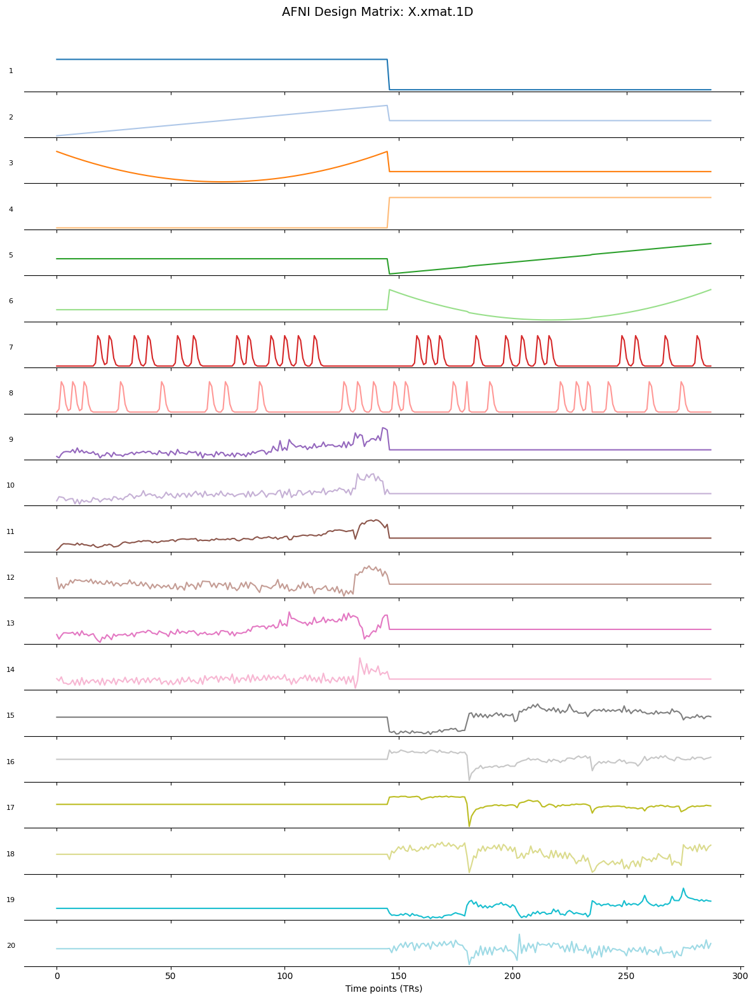
Quality Check#
AFNI automatically generates a quality control directory named QC_sub_08, which contains images and summary metrics for each preprocessing and GLM step such as motion estimates, outlier fractions and EPI-to-anatomical alignment. These quality control plots are stored in the media/ subfolder and can be displayed within the notebook to visually inspect the success of each step.
The show_qc_image() function can be used to display quality control images directly within the notebook. It takes the image filename and an optional title to present relevant QC plots inline.
We display two types of QC images: registration checks (EPI-to-anatomical and anatomical-to-template alignment) and statistical maps (F-statistic and beta coefficients for each condition and contrast).
def show_qc_image(filename, title=None):
from IPython.display import Image, display
if title:
print(f'\n📊 {title}')
display(Image(filename=filename))
show_qc_image('./afni_pro_glm/sub_08.results/QC_sub_08/media/qc_03_ve2a_epi2anat.axi.jpg', 'EPI to Anatomical Alignment')
📊 EPI to Anatomical Alignment
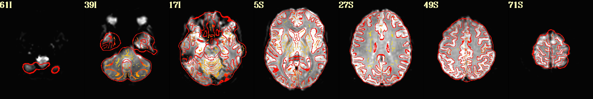
show_qc_image('./afni_pro_glm/sub_08.results/QC_sub_08/media/qc_04_va2t_anat2temp.sag.jpg', 'Anatomical to MNI template Alignment')
📊 Anatomical to MNI template Alignment
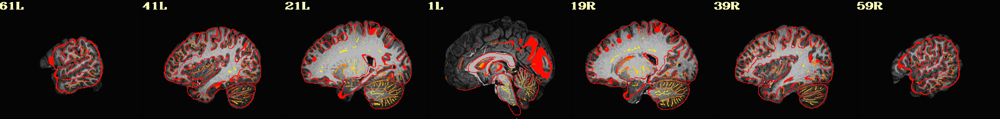
show_qc_image('./afni_pro_glm/sub_08.results/QC_sub_08/media/qc_06_vstat_Full_Fstat.axi.jpg', 'Full F_stat (stats.sub_08_REML)')
📊 Full F_stat (stats.sub_08_REML)
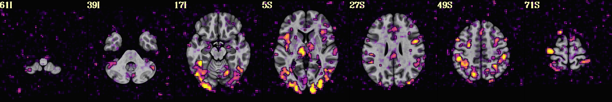
show_qc_image('./afni_pro_glm/sub_08.results/QC_sub_08/media/qc_07_vstat_congruent_0_Coef.sag.jpg',
'Congruent — Beta Coefficient')
📊 Congruent — Beta Coefficient
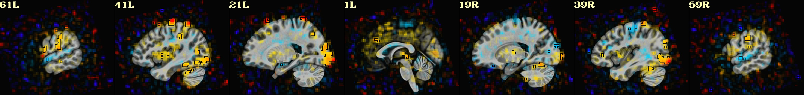
show_qc_image('./afni_pro_glm/sub_08.results/QC_sub_08/media/qc_08_vstat_incongruent_0_Coef.sag.jpg',
'Incongruent — Beta Coefficient')
📊 Incongruent — Beta Coefficient
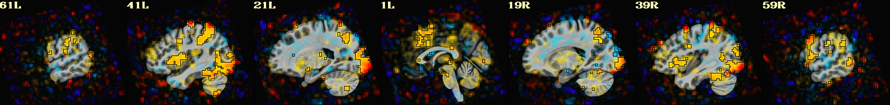
show_qc_image('./afni_pro_glm/sub_08.results/QC_sub_08/media/qc_09_vstat_incongruent-congruent_0_Coef.sag.jpg',
'Incongruent > Congruent — Beta Coefficient')
📊 Incongruent > Congruent — Beta Coefficient
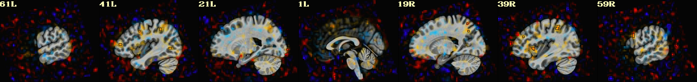
show_qc_image('./afni_pro_glm/sub_08.results/QC_sub_08/media/qc_10_vstat_congruent-incongruent_0_Coef.sag.jpg',
'Congruent > Incongruent — Beta Coefficient')
📊 Congruent > Incongruent — Beta Coefficient
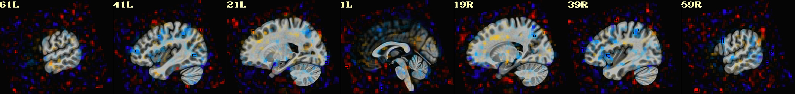
Statistical Maps with Nilearn#
The AFNI QC images above show the results using AFNI’s own display settings. Here, we recreate these contrast maps using Nilearn, which allows more control over thresholding, colormaps, and display — and demonstrates how to work with AFNI’s sub-brick structure programmatically.
First, we convert the stats.sub_08_REML file to NIfTI format using 3dAFNItoNIFTI, and inspect the sub-brick structure of the stats dataset using 3dinfo to identify which indices correspond to our conditions and contrasts of interest.
!3dAFNItoNIFTI -prefix ./afni_pro_glm/sub_08.results/stats.sub_08_REML+tlrc.nii.gz ./afni_pro_glm/sub_08.results/stats.sub_08_REML+tlrc
++ 3dAFNItoNIFTI: AFNI version=AFNI_25.2.03 (Jul 4 2025) [64-bit]
!3dinfo -verb ./afni_pro_glm/sub_08.results/stats.sub_08+tlrc.HEAD
++ 3dinfo: AFNI version=AFNI_25.2.03 (Jul 4 2025) [64-bit]
Dataset File: stats.sub_08+tlrc
Identifier Code: XYZ_reW4fnq2w3LjHzjDiPGPBg Creation Date: Wed Jul 8 08:19:36 2026
Template Space: MNI_2009c_asym
Dataset Type: Func-Bucket (-fbuc)
Byte Order: LSB_FIRST [this CPU native = LSB_FIRST]
Storage Mode: BRIK
Storage Space: 16,187,392 (16 million) bytes
Geometry String: "MATRIX(-3,0,0,94.5,0,-3,0,130.5,0,0,3,-76.5):64,76,64"
Data Axes Tilt: Plumb
Data Axes Orientation:
first (x) = Left-to-Right
second (y) = Posterior-to-Anterior
third (z) = Inferior-to-Superior [-orient LPI]
R-to-L extent: -94.500 [R] -to- 94.500 [L] -step- 3.000 mm [ 64 voxels]
A-to-P extent: -94.500 [A] -to- 130.500 [P] -step- 3.000 mm [ 76 voxels]
I-to-S extent: -76.500 [I] -to- 112.500 [S] -step- 3.000 mm [ 64 voxels]
Number of values stored at each pixel = 13
-- At sub-brick #0 'Full_Fstat' datum type is float: 0 to 61.0312
statcode = fift; statpar = 2 268
-- At sub-brick #1 'congruent#0_Coef' datum type is float: -17.2177 to 14.3244
-- At sub-brick #2 'congruent#0_Tstat' datum type is float: -4.61816 to 7.86733
statcode = fitt; statpar = 268
-- At sub-brick #3 'congruent_Fstat' datum type is float: 0 to 61.8948
statcode = fift; statpar = 1 268
-- At sub-brick #4 'incongruent#0_Coef' datum type is float: -15.1565 to 14.6077
-- At sub-brick #5 'incongruent#0_Tstat' datum type is float: -5.25655 to 9.84963
statcode = fitt; statpar = 268
-- At sub-brick #6 'incongruent_Fstat' datum type is float: 0 to 97.0152
statcode = fift; statpar = 1 268
-- At sub-brick #7 'incongruent-congruent_GLT#0_Coef' datum type is float: -16.799 to 16.6239
-- At sub-brick #8 'incongruent-congruent_GLT#0_Tstat' datum type is float: -4.70007 to 5.90507
statcode = fitt; statpar = 268
-- At sub-brick #9 'incongruent-congruent_GLT_Fstat' datum type is float: 0 to 34.8699
statcode = fift; statpar = 1 268
-- At sub-brick #10 'congruent-incongruent_GLT#0_Coef' datum type is float: -16.6239 to 16.799
-- At sub-brick #11 'congruent-incongruent_GLT#0_Tstat' datum type is float: -5.90507 to 4.70007
statcode = fitt; statpar = 268
-- At sub-brick #12 'congruent-incongruent_GLT_Fstat' datum type is float: 0 to 34.8699
statcode = fift; statpar = 1 268
----- HISTORY -----
[jovyan@9c39941d2028: Wed Jul 8 08:19:36 2026] {AFNI_25.2.03:linux_ubuntu_24_64} 3dDeconvolve -input pb04.sub_08.r01.scale+tlrc.HEAD pb04.sub_08.r02.scale+tlrc.HEAD -censor censor_sub_08_combined_2.1D -ortvec mot_demean.r01.1D mot_demean_r01 -ortvec mot_demean.r02.1D mot_demean_r02 -polort 2 -num_stimts 2 -stim_times 1 stimuli/congruent.1D GAM -stim_label 1 congruent -stim_times 2 stimuli/incongruent.1D GAM -stim_label 2 incongruent -jobs 8 -gltsym 'SYM: incongruent -congruent' -glt_label 1 incongruent-congruent -gltsym 'SYM: congruent -incongruent' -glt_label 2 congruent-incongruent -fout -tout -x1D X.xmat.1D -xjpeg X.jpg -x1D_uncensored X.nocensor.xmat.1D -errts errts.sub_08 -bucket stats.sub_08
[jovyan@9c39941d2028: Wed Jul 8 08:19:36 2026] Output prefix: stats.sub_08
🧠 Summary of Regressors and Contrasts
The following table provides key information from the 3dinfo output of the stats.sub_08_REML dataset. It includes the regressors (conditions) and contrasts, as well as their associated T-statistics. These values will be visualized as T-stat maps using Nilearn to examine the statistical significance of the task-related effects.
Sub-brick |
Label |
Meaning |
|---|---|---|
#1 |
|
Beta weight (coefficient) for congruent trials |
#4 |
|
Beta weight (coefficient) for incongruent trials |
#7 |
|
Beta weight (coefficient) for the contrast between incongruent and congruent trials |
#10 |
|
Beta weight (coefficient) for the contrast between congruent and incongruent trials |
#2 |
|
T-statistic for congruent trials |
#5 |
|
T-statistic for incongruent trials |
#8 |
|
T-statistic for incongruent > congruent |
#11 |
|
T-statistic for congruent > incongruent |
%%bash
# Convert brain mask from AFNI format (.HEAD/.BRIK) to NIfTI for use with nilearn
3dAFNItoNIFTI -prefix ./afni_pro_glm/sub_08.results/full_mask.sub_08+tlrc.nii.gz \
./afni_pro_glm/sub_08.results/full_mask.sub_08+tlrc
++ 3dAFNItoNIFTI: AFNI version=AFNI_25.2.03 (Jul 4 2025) [64-bit]
# Degrees of freedom (statpar) - from the GLM output
df = 278
# Calculate the critical t-value for two-tailed p=0.05
alpha = 0.05
critical_t_value = t.ppf(1 - alpha/2, df)
print(f"Critical t-value for p=0.05 and df={df}: {np.round(critical_t_value,3)}")
# Load the REML statistics file containing all contrasts as sub-bricks
img = nib.load('./afni_pro_glm/sub_08.results/stats.sub_08_REML+tlrc.nii.gz')
data = img.get_fdata()
affine = img.affine
# Extract t-statistic maps for each contrast (sub-brick indices from 3dinfo)
tstat_congruent = data[:, :, :, 0, 2] # sub-brick #2
tstat_incongruent = data[:, :, :, 0, 5] # sub-brick #5
tstat_incongruent_gt_congruent = data[:, :, :, 0, 8] # sub-brick #8
tstat_congruent_gt_incongruent = data[:, :, :, 0, 11] # sub-brick #11
# Make NIfTI images
tstat_congruent_img = nib.Nifti1Image(tstat_congruent, affine)
tstat_incongruent_img = nib.Nifti1Image(tstat_incongruent, affine)
tstat_contrast1_img = nib.Nifti1Image(tstat_incongruent_gt_congruent, affine)
tstat_contrast2_img = nib.Nifti1Image(tstat_congruent_gt_incongruent, affine)
# Apply brain mask to restrict display to brain voxels only
brain_mask = nib.load('./afni_pro_glm/sub_08.results/full_mask.sub_08+tlrc.nii.gz')
def apply_brain_mask(stat_img, mask_img):
return math_img("img * mask", img=stat_img, mask=mask_img)
tstat_congruent_img = apply_brain_mask(tstat_congruent_img, brain_mask)
tstat_incongruent_img = apply_brain_mask(tstat_incongruent_img, brain_mask)
tstat_contrast1_img = apply_brain_mask(tstat_contrast1_img, brain_mask)
tstat_contrast2_img = apply_brain_mask(tstat_contrast2_img, brain_mask)
# Plot each contrast thresholded at the critical t-value
plotting_config = {
"display_mode": "ortho",
"draw_cross": False,
"vmax": 8,
"cmap": "cold_hot", # blue = negative, red = positive
"colorbar": True,
}
for img, title in [
(tstat_congruent_img, "Congruent"),
(tstat_incongruent_img, "Incongruent"),
(tstat_contrast1_img, "Incongruent > Congruent"),
(tstat_contrast2_img, "Congruent > Incongruent"),
]:
plotting.plot_stat_map(
img,
title=title,
threshold=critical_t_value,
**plotting_config,
)
plotting.show()
Critical t-value for p=0.05 and df=278: 1.969
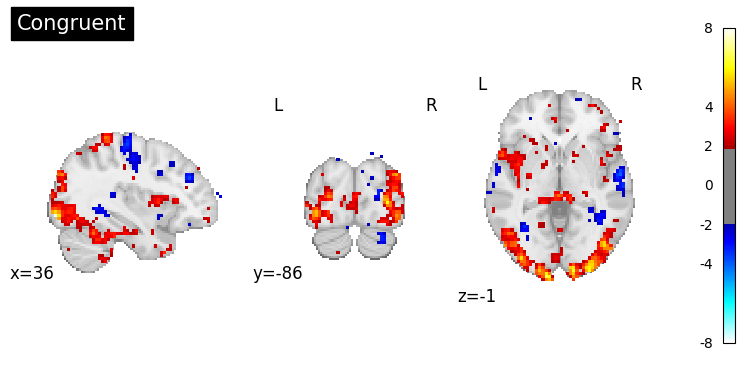
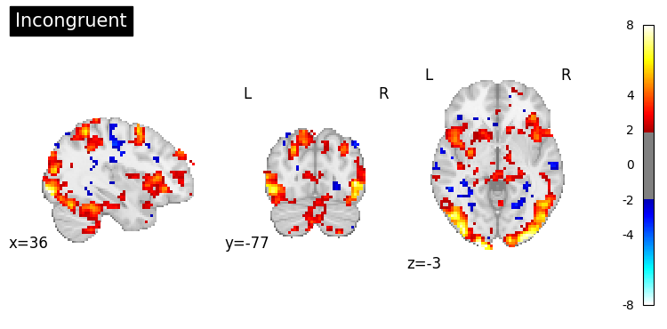
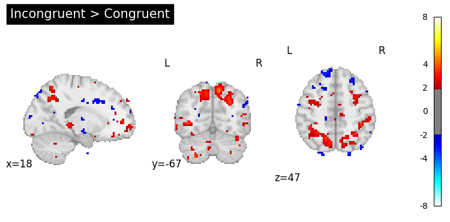
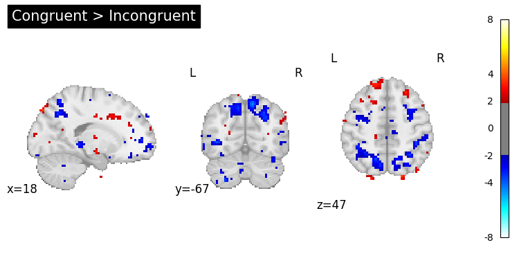
Dependencies in Jupyter/Python#
Using the package watermark to document system environment and software versions used in this notebook, alongside the Neurodesktop version extracted from the
JUPYTER_IMAGEorNEURODESKTOP_VERSIONenvironment variables.
import os
%load_ext watermark
%watermark
%watermark --iversions
neurodesktop_version = (
os.environ.get('JUPYTER_IMAGE', '').split(':')[-1] or
os.environ.get('NEURODESKTOP_VERSION', 'unknown')
)
print(f"Neurodesktop version: {neurodesktop_version}")
Last updated: 2026-07-08T08:25:37.368995+00:00
Python implementation: CPython
Python version : 3.13.13
IPython version : 9.12.0
Compiler : GCC 14.3.0
OS : Linux
Release : 6.8.0-111-generic
Machine : x86_64
Processor : x86_64
CPU cores : 16
Architecture: 64bit
IPython : 9.12.0
matplotlib: 3.10.9
nibabel : 5.3.3
nilearn : 0.13.1
numpy : 2.3.5
Neurodesktop version: 2026-06-04